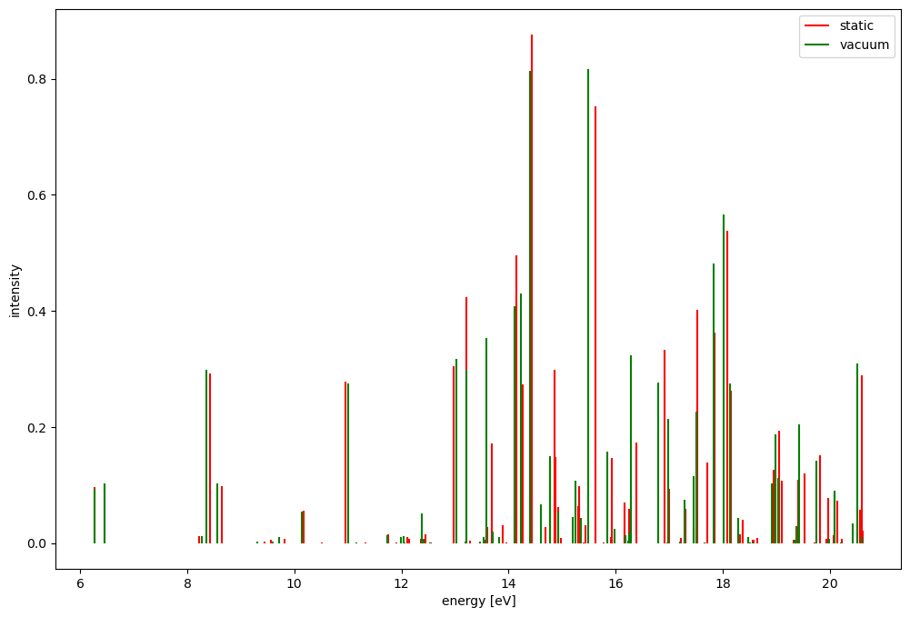

QMMM workflow using LAMMPS and VOTCA-XTP¶
What is this tutorial about¶
In this tutorial, we will learn how to set and perform excited state calculation using the Votca XTP library. We will use thiophene as our QM region.
Requirements¶
You will need to install VOTCA using the instructions described here
Once the installation is completed you need to activate the VOTCA enviroment by running the
VOTCARC.bashscript that has been installed at the bin subfolder for the path that you have provided for the installation step above
Interacting with the XTP command line interface¶
The XTP package offers the following command line interface that the user can interact with:
Run the following command to view the help message of xtp_tools:
[1]:
!xtp_tools -h
==================================================
======== VOTCA (http://www.votca.org) ========
==================================================
please read and cite: https://doi.org/10.21105/joss.06864
and submit bugs to https://github.com/votca/votca/issues
xtp_tools, version 2026-dev gitid: 80c3098 (compiled Oct 24 2026, 10:56:25)
Runs excitation/charge transport tools
Allowed options:
-h [ --help ] display this help and exit
--verbose be loud and noisy
--verbose1 be very loud and noisy
-v [ --verbose2 ] be extremly loud and noisy
-o [ --options ] arg Tool user options.
-t [ --nthreads ] arg (=1) number of threads to create
-M [ --memory ] arg (=0) memory in GB for the whole process, used to
choose caches and batch sizes (shared equally by
concurrent jobs; 0: built-in defaults)
-e [ --execute ] arg Name of Tool to run
-l [ --list ] Lists all available Tools
-d [ --description ] arg Short description of a Tools
-c [ --cmdoptions ] arg Modify options via command line by e.g. '-c
xmltag.subtag=value'. Use whitespace to separate
multiple options
-p [ --printoptions ] arg Prints xml options of a Tool
Note¶
In Jupyter the
!symbol means: run the following command as a standard unix commandIn Jupyter the command
%envset an environmental variable
Setting the environment¶
Remove previous hdf5 file
[2]:
!rm -f state.hdf5
Generate the topology from the Gromacs file¶
We will first generate the mapping from MD coordinates to segments, creating an hdf5 file to store the results. You can explore the generated state.hdf5 file with e.g. hdf5itebrowser. In Python, you can use the h5py library. The command to generate the mapping is the following,
[3]:
!xtp_map -v -t MD_FILES/newfile.data -c MD_FILES/traj.dump -s system.xml -f state.hdf5 -i 99 > mapping.out
Check the mapping¶
Let us first output .pdb files for the segments, qmmolecules and classical segments in order to check the mapping. So we have to pass the calculator the filename. Votca has two ways to specify options for calculators. Using a file with the -o option or for quick things using the -c option on the command line, we will use both.
In the mapchecker section of the manual you can find a table with the mapchecker input variables and their corresponding defaults. Finally, the following command run the check
[4]:
!xtp_run -e mapchecker -c map_file=system.xml -f state.hdf5
==================================================
======== VOTCA (http://www.votca.org) ========
==================================================
please read and cite: https://doi.org/10.21105/joss.06864
and submit bugs to https://github.com/votca/votca/issues
xtp_run, version 2026-dev gitid: 80c3098 (compiled Oct 24 2026, 10:56:25)
Initializing calculator
... mapchecker
1 frames in statefile, Ids are: 10000
Starting at frame 10000
Evaluating frame 10000
Import MD Topology (i.e. frame 10000) from state.hdf5
....
... mapchecker
Using 1 threads
Writing segments to md_segments_step_10000.pdb
Writing qmmolecules to qm_segments_n_step_10000.pdb
Writing polarsegments to mp_segments_e_step_10000.pdb
Writing polarsegments to mp_segments_h_step_10000.pdb
Changes have not been written to state file.
Neighborlist Calculation¶
The following step is to determine the neighbouring pairs for exciton transport.
We will use a cutoff of 1.5 nm. If you want to have a look at an option just the -d option with the calculator name
[5]:
!xtp_run -d neighborlist
neighborlist: Determines neighbouring pairs for exciton transport
OPTION DEFAULT UNIT DESCRIPTION
segmentpairs(OPTIONAL) list of pairs of molecules for which to create pairs
pair Definition of one pair
type (REQUIRED) names of two segmenttypes to create a pair
cutoff (REQUIRED) [nm] cutoff value if the segmentname method is used
constant (1.5) [nm] contant cutoff for all segmenttypes
exciton_cutoff(OPTIONAL) cutoff for classical exciton transition charge treatment
Done - stopping here
[6]:
!xtp_run -e neighborlist -c constant=1.5 -f state.hdf5
==================================================
======== VOTCA (http://www.votca.org) ========
==================================================
please read and cite: https://doi.org/10.21105/joss.06864
and submit bugs to https://github.com/votca/votca/issues
xtp_run, version 2026-dev gitid: 80c3098 (compiled Oct 24 2026, 10:56:25)
Initializing calculator
... neighborlist
1 frames in statefile, Ids are: 10000
Starting at frame 10000
Evaluating frame 10000
Import MD Topology (i.e. frame 10000) from state.hdf5
....
... neighborlist
Using 1 threads
Evaluating 1000 segments for neighborlist.
... ... Evaluating
0% 10 20 30 40 50 60 70 80 90 100%
|----|----|----|----|----|----|----|----|----|----|
***************************************************
... ... Created 90067 direct pairs.Wrote MD topology (step = 10000, time = 0) to state.hdf5
... .
Read reorganization energies¶
In this step we will read the in site reorganization energies and store them in the state.hdf5 file. We just need to copy the input file and execute the calculation.
[7]:
!xtp_run -e einternal -f state.hdf5
==================================================
======== VOTCA (http://www.votca.org) ========
==================================================
please read and cite: https://doi.org/10.21105/joss.06864
and submit bugs to https://github.com/votca/votca/issues
xtp_run, version 2026-dev gitid: 80c3098 (compiled Oct 24 2026, 10:56:25)
Initializing calculator
... einternal
1 frames in statefile, Ids are: 10000
Starting at frame 10000
Evaluating frame 10000
Import MD Topology (i.e. frame 10000) from state.hdf5
....
... einternal
Using 1 threads
... ... Site, reorg. energies from system.xml.
... ... Read in site, reorg. energies for 1000 segments. Wrote MD topology (step = 10000, time = 0) to state.hdf5
... .
Compute site energy¶
In this step we will perform some QMMM calculations to compute the site energies. The qmmm_mm.xml file contains more options to perform the MM calculations.
[8]:
!xtp_parallel -e qmmm -o qmmm_mm.xml -f state.hdf5 -j "write"
==================================================
======== VOTCA (http://www.votca.org) ========
==================================================
please read and cite: https://doi.org/10.21105/joss.06864
and submit bugs to https://github.com/votca/votca/issues
xtp_parallel, version 2026-dev gitid: 80c3098 (compiled Oct 24 2026, 10:56:25)
Initializing calculator
... qmmm
... ... Initialized with 1 threads.
... ... Using 1 openmp threads for 1x1=1 total threads.
1 frames in statefile, Ids are: 10000
Starting at frame 10000
Evaluating frame 10000
Import MD Topology (i.e. frame 10000) from state.hdf5
....
... qmmm
... ... Writing job file qmmm_mm_jobs.xml
... ... In total 3000 jobs
Changes have not been written to state file.
The previous command generates a qmmm_mm_jobs.xml containing 3000 MM jobs to compute, if you examine that file, it should look something like:
<jobs>
<job>
<id>0</id>
<tag>thiophene_0:n</tag>
<input>
<site_energies>0:n</site_energies>
<regions>
<region>
<id>0</id>
<segments>0:n</segments>
</region>
</regions>
</input>
<status>AVAILABLE</status>
</job>
Let us run just the first 4 jobs by settings all jobs status to COMPLETE except for the first four. This can be easily done with sed as follows,
[9]:
!sed -i "s/AVAILABLE/COMPLETE/g" qmmm_mm_jobs.xml
!sed -i '0,/COMPLETE/s/COMPLETE/AVAILABLE/' qmmm_mm_jobs.xml
!sed -i '0,/COMPLETE/s/COMPLETE/AVAILABLE/' qmmm_mm_jobs.xml
!sed -i '0,/COMPLETE/s/COMPLETE/AVAILABLE/' qmmm_mm_jobs.xml
!sed -i '0,/COMPLETE/s/COMPLETE/AVAILABLE/' qmmm_mm_jobs.xml
Now we can run the jobs and save the results in the state file
[10]:
!xtp_parallel -e qmmm -o qmmm_mm.xml -f state.hdf5 -j "run"
!xtp_parallel -e qmmm -o qmmm_mm.xml -f state.hdf5 -j "read"
==================================================
======== VOTCA (http://www.votca.org) ========
==================================================
please read and cite: https://doi.org/10.21105/joss.06864
and submit bugs to https://github.com/votca/votca/issues
xtp_parallel, version 2026-dev gitid: 80c3098 (compiled Oct 24 2026, 10:56:25)
Initializing calculator
... qmmm
... ... Initialized with 1 threads.
... ... Using 1 openmp threads for 1x1=1 total threads.
1 frames in statefile, Ids are: 10000
Starting at frame 10000
Evaluating frame 10000
Import MD Topology (i.e. frame 10000) from state.hdf5
....
... qmmm
MST ERR Job file = 'qmmm_mm_jobs.xml', cache size = 8
MST ERR Initialize jobs from qmmm_mm_jobs.xml
MST ERR Registered 3000 jobs.
T00 ERR ... Requesting next job
T00 ERR ... Assign jobs from stack
T00 ERR ... Next job: ID = 0=> [ 0%]
T00 ERR ... Regions created
T00 ERR ... Id: 0 type: polarregion size: 2 charge[e]= -2.77556e-16
T00 ERR ... Id: 1 type: staticregion size: 81 charge[e]= -1.78191e-14
T00 ERR ... 2026-10-24 11:0:46 Writing jobtopology to MMMM/frame_10000/job_0_thiophene_0:n/regions.pdb
T00 ERR ... 2026-10-24 11:0:46 Only 1 scf region is used. The remaining regions are static. So no inter regions scf is required.
T00 ERR ... 2026-10-24 11:0:46 --Inter Region SCF Iteration 1 of 1
T00 ERR ... 2026-10-24 11:0:46 Evaluating polarregion 0
T00 ERR ... 2026-10-24 11:0:46 Evaluating interaction between polarregion 0 and staticregion 1
T00 ERR ... 2026-10-24 11:0:46 Starting Solving for classical polarization with 54 degrees of freedom.
T00 ERR ... 2026-10-24 11:0:46 CG: #iterations: 6, estimated error: 1.81713e-05
T00 ERR ... Total static energy [hrt]= -0.004971088488
T00 ERR ... Total polar energy [hrt]= -0.0007676658977
T00 ERR ... Total energy [hrt]= -0.005738754386
T00 ERR ... 2026-10-24 11:0:46 Evaluating staticregion 1
T00 ERR ... 2026-10-24 11:0:46 Writing checkpoint to checkpoint_iter_1.hdf5
T00 ERR ... Reporting job results
T00 ERR ... Requesting next job
T00 ERR ... Next job: ID = 1
T00 ERR ... Regions created
T00 ERR ... Id: 0 type: polarregion size: 2 charge[e]= -1
T00 ERR ... Id: 1 type: staticregion size: 81 charge[e]= -1.781907955e-14
T00 ERR ... 2026-10-24 11:0:46 Writing jobtopology to MMMM/frame_10000/job_1_thiophene_0:e/regions.pdb
T00 ERR ... 2026-10-24 11:0:46 Only 1 scf region is used. The remaining regions are static. So no inter regions scf is required.
T00 ERR ... 2026-10-24 11:0:46 --Inter Region SCF Iteration 1 of 1
T00 ERR ... 2026-10-24 11:0:46 Evaluating polarregion 0
T00 ERR ... 2026-10-24 11:0:46 Evaluating interaction between polarregion 0 and staticregion 1
T00 ERR ... 2026-10-24 11:0:46 Starting Solving for classical polarization with 54 degrees of freedom.
T00 ERR ... 2026-10-24 11:0:46 CG: #iterations: 7, estimated error: 2.932571714e-05
T00 ERR ... Total static energy [hrt]= -0.003915405303
T00 ERR ... Total polar energy [hrt]= -0.006268779815
T00 ERR ... Total energy [hrt]= -0.01018418512
T00 ERR ... 2026-10-24 11:0:46 Evaluating staticregion 1
T00 ERR ... 2026-10-24 11:0:46 Writing checkpoint to checkpoint_iter_1.hdf5
T00 ERR ... Reporting job results
T00 ERR ... Requesting next job
T00 ERR ... Next job: ID = 2
T00 ERR ... Regions created
T00 ERR ... Id: 0 type: polarregion size: 2 charge[e]= 1
T00 ERR ... Id: 1 type: staticregion size: 81 charge[e]= -1.781907955e-14
T00 ERR ... 2026-10-24 11:0:46 Writing jobtopology to MMMM/frame_10000/job_2_thiophene_0:h/regions.pdb
T00 ERR ... 2026-10-24 11:0:46 Only 1 scf region is used. The remaining regions are static. So no inter regions scf is required.
T00 ERR ... 2026-10-24 11:0:46 --Inter Region SCF Iteration 1 of 1
T00 ERR ... 2026-10-24 11:0:46 Evaluating polarregion 0
T00 ERR ... 2026-10-24 11:0:46 Evaluating interaction between polarregion 0 and staticregion 1
T00 ERR ... 2026-10-24 11:0:46 Starting Solving for classical polarization with 54 degrees of freedom.
T00 ERR ... 2026-10-24 11:0:46 CG: #iterations: 7, estimated error: 2.093123816e-05
T00 ERR ... Total static energy [hrt]= -0.005431444746
T00 ERR ... Total polar energy [hrt]= -0.004771992159
T00 ERR ... Total energy [hrt]= -0.01020343691
T00 ERR ... 2026-10-24 11:0:46 Evaluating staticregion 1
T00 ERR ... 2026-10-24 11:0:46 Writing checkpoint to checkpoint_iter_1.hdf5
T00 ERR ... Reporting job results
T00 ERR ... Requesting next job
T00 ERR ... Next job: ID = 3
T00 ERR ... Regions created
T00 ERR ... Id: 0 type: polarregion size: 2 charge[e]= -2.775557562e-16
T00 ERR ... Id: 1 type: staticregion size: 77 charge[e]= -1.693090113e-14
T00 ERR ... 2026-10-24 11:0:46 Writing jobtopology to MMMM/frame_10000/job_3_thiophene_1:n/regions.pdb
T00 ERR ... 2026-10-24 11:0:46 Only 1 scf region is used. The remaining regions are static. So no inter regions scf is required.
T00 ERR ... 2026-10-24 11:0:46 --Inter Region SCF Iteration 1 of 1
T00 ERR ... 2026-10-24 11:0:46 Evaluating polarregion 0
T00 ERR ... 2026-10-24 11:0:46 Evaluating interaction between polarregion 0 and staticregion 1
T00 ERR ... 2026-10-24 11:0:46 Starting Solving for classical polarization with 54 degrees of freedom.
T00 ERR ... 2026-10-24 11:0:46 CG: #iterations: 5, estimated error: 3.321625188e-05
T00 ERR ... Total static energy [hrt]= -0.003424359186
T00 ERR ... Total polar energy [hrt]= -0.0005740411819
T00 ERR ... Total energy [hrt]= -0.003998400368
T00 ERR ... 2026-10-24 11:0:46 Evaluating staticregion 1
T00 ERR ... 2026-10-24 11:0:46 Writing checkpoint to checkpoint_iter_1.hdf5
T00 ERR ... Reporting job results
T00 ERR ... Requesting next job
T00 ERR ... Assign jobs from stack
T00 ERR ... Sync did not yield any new jobs.
T00 ERR ... Next job: ID = - (none available)
MST ERR Assign jobs from stack
Changes have not been written to state file.
==================================================
======== VOTCA (http://www.votca.org) ========
==================================================
please read and cite: https://doi.org/10.21105/joss.06864
and submit bugs to https://github.com/votca/votca/issues
xtp_parallel, version 2026-dev gitid: 80c3098 (compiled Oct 24 2026, 10:56:25)
Initializing calculator
... qmmm
... ... Initialized with 1 threads.
... ... Using 1 openmp threads for 1x1=1 total threads.
1 frames in statefile, Ids are: 10000
Starting at frame 10000
Evaluating frame 10000
Import MD Topology (i.e. frame 10000) from state.hdf5
....
... qmmm
Found 1 states of type e
Found 1 states of type h
Found 2 states of type n
2996 incomplete jobs found.
Wrote MD topology (step = 10000, time = 0) to state.hdf5
... .
Site energy and pair energy analysis¶
In this step we generate an histogram and compute the correlation function of site energies and pair energy differences.
[11]:
!xtp_run -e eanalyze -f state.hdf5
==================================================
======== VOTCA (http://www.votca.org) ========
==================================================
please read and cite: https://doi.org/10.21105/joss.06864
and submit bugs to https://github.com/votca/votca/issues
xtp_run, version 2026-dev gitid: 80c3098 (compiled Oct 24 2026, 10:56:25)
Initializing calculator
... eanalyze
1 frames in statefile, Ids are: 10000
Starting at frame 10000
Evaluating frame 10000
Import MD Topology (i.e. frame 10000) from state.hdf5
....
... eanalyze
Using 1 threads
... ... Short-listed 1000 segments (pattern='*')
... ... ... NOTE Statistics of site energies and spatial correlations thereof are based on the short-listed segments only.
... ... ... Statistics of site-energy differences operate on the full list.
... ... excited state e
... ... excited state h
... ... excited state s
... ... excited state t
Changes have not been written to state file.
You should now see a set of files prefixed with eanalyze containing the histrogram and correlation functions.
[12]:
!ls eanalyze*
eanalyze.pairhist_e.out eanalyze.pairlist_s.out eanalyze.sitehist_e.out
eanalyze.pairhist_h.out eanalyze.pairlist_t.out eanalyze.sitehist_h.out
eanalyze.pairhist_s.out eanalyze.sitecorr_e.out eanalyze.sitehist_s.out
eanalyze.pairhist_t.out eanalyze.sitecorr_h.out eanalyze.sitehist_t.out
eanalyze.pairlist_e.out eanalyze.sitecorr_s.out
eanalyze.pairlist_h.out eanalyze.sitecorr_t.out
QM energy calculation¶
Our next task is to perform the qm calculations for each segment that we have stored in the hdf5 file. The calculations take place in 3 stages: write the jobs to a file, perform the computation and finally save the results to the state file. We created a small option file to make the calculation cheaper.
[13]:
!cat eqm.xml
<?xml version="1.0"?>
<options>
<eqm help="Executes qm calculations for individual molecules" section="sec:eqm">
<map_file>system.xml</map_file>
<gwbse>
<gw>
<mode>G0W0</mode>
</gw>
<ranges>full</ranges>
</gwbse>
<dftpackage>
<basisset>3-21G</basisset>
<auxbasisset>aux-def2-svp</auxbasisset>
</dftpackage>
</eqm>
</options>
For the sake of computational time let just compute the gw approximation and the singlet. You can also request the triplet or all, see the gwbse sectionfor the eqm calculator.
First we will write the job in a file and enable only the first 2 jobs
[14]:
!xtp_parallel -e eqm -o eqm.xml -f state.hdf5 -j "write"
!sed -i "s/AVAILABLE/COMPLETE/g" eqm.jobs
!sed -i '0,/COMPLETE/s/COMPLETE/AVAILABLE/' eqm.jobs
!sed -i '0,/COMPLETE/s/COMPLETE/AVAILABLE/' eqm.jobs
==================================================
======== VOTCA (http://www.votca.org) ========
==================================================
please read and cite: https://doi.org/10.21105/joss.06864
and submit bugs to https://github.com/votca/votca/issues
xtp_parallel, version 2026-dev gitid: 80c3098 (compiled Oct 24 2026, 10:56:25)
Initializing calculator
... eqm
... ... Initialized with 1 threads.
... ... Using 1 openmp threads for 1x1=1 total threads.
1 frames in statefile, Ids are: 10000
Starting at frame 10000
Evaluating frame 10000
Import MD Topology (i.e. frame 10000) from state.hdf5
....
... eqm
... ... Writing job file: eqm.jobs with 1000 jobs
Changes have not been written to state file.
Now, let run these 2 jobs
Here we used some more options. -o allows us to read in a file with options. -j changes the writing to running in this case. -x determines how many cores should be used for each job. We can also run multiple jobs in parallel using -p
[15]:
!xtp_parallel -e eqm -o eqm.xml -f state.hdf5 -j run -x 4
==================================================
======== VOTCA (http://www.votca.org) ========
==================================================
please read and cite: https://doi.org/10.21105/joss.06864
and submit bugs to https://github.com/votca/votca/issues
xtp_parallel, version 2026-dev gitid: 80c3098 (compiled Oct 24 2026, 10:56:25)
Initializing calculator
... eqm
... ... Initialized with 1 threads.
... ... Using 4 openmp threads for 1x4=4 total threads.
1 frames in statefile, Ids are: 10000
Starting at frame 10000
Evaluating frame 10000
Import MD Topology (i.e. frame 10000) from state.hdf5
....
... eqm
MST ERR Job file = 'eqm.jobs', cache size = 8
MST ERR Initialize jobs from eqm.jobs
MST ERR Registered 1000 jobs.
T00 ERR ... Requesting next job
T00 ERR ... Assign jobs from stack
T00 ERR ... Next job: ID = 0=> [ 0%]
T00 ERR ... 2026-10-24 11:0:50 Evaluating site 0
T00 ERR ... Running DFT
T00 ERR ... Running GWBSE
T00 ERR ... Running ESPFIT
T00 ERR ... ===== Running on 4 threads =====
T00 ERR ... 2026-10-24 11:0:52 Calculated Densities at Numerical Grid, Number of electrons is 6.83785e-08
T00 ERR ... 2026-10-24 11:0:52 Calculating ESP at CHELPG grid points
T00 ERR ... 2026-10-24 11:0:56 Netcharge constrained to -0
T00 ERR ... Sum of fitted charges: -9.29812e-16
T00 ERR ... RMSE of fit: 0.00257445
T00 ERR ... RRMSE of fit: 0.239987
T00 ERR ... El Dipole from fitted charges [e*bohr]:
dx = -0.6808 dy = +0.1555 dz = -0.2853 |d|^2 = +0.5690
T00 ERR ... El Dipole from exact qm density [e*bohr]:
dx = -0.7032 dy = +0.1607 dz = -0.2947 |d|^2 = +0.6071
T00 ERR ... Written charges to MP_FILES/frame_10000/n2s1/thiophene_0_n2s1.mps
T00 ERR ... 2026-10-24 11:0:56 Finished evaluating site 0
T00 ERR ... Saving data to molecule_0.orb
T00 ERR ... Reporting job results
T00 ERR ... Requesting next job
T00 ERR ... Next job: ID = 1
T00 ERR ... 2026-10-24 11:0:56 Evaluating site 1
T00 ERR ... Running DFT
T00 ERR ... Running GWBSE
T00 ERR ... Running ESPFIT
T00 ERR ... ===== Running on 4 threads =====
T00 ERR ... 2026-10-24 11:0:58 Calculated Densities at Numerical Grid, Number of electrons is 2.77435e-08
T00 ERR ... 2026-10-24 11:0:58 Calculating ESP at CHELPG grid points
T00 ERR ... 2026-10-24 11:1:1 Netcharge constrained to -0
T00 ERR ... Sum of fitted charges: -6.66134e-16
T00 ERR ... RMSE of fit: 0.00255223
T00 ERR ... RRMSE of fit: 0.238172
T00 ERR ... El Dipole from fitted charges [e*bohr]:
dx = -0.1913 dy = -0.6932 dz = +0.2261 |d|^2 = +0.5683
T00 ERR ... El Dipole from exact qm density [e*bohr]:
dx = -0.1977 dy = -0.7165 dz = +0.2338 |d|^2 = +0.6071
T00 ERR ... Written charges to MP_FILES/frame_10000/n2s1/thiophene_1_n2s1.mps
T00 ERR ... 2026-10-24 11:1:1 Finished evaluating site 1
T00 ERR ... Saving data to molecule_1.orb
T00 ERR ... Reporting job results
T00 ERR ... Requesting next job
T00 ERR ... Assign jobs from stack
T00 ERR ... Sync did not yield any new jobs.
T00 ERR ... Next job: ID = - (none available)
MST ERR Assign jobs from stack
Changes have not been written to state file.
QM calculation for pairs¶
In the following step we will run QM calculations for each pair in the hdf5 file. As the calculations on the previous step, we will first write the jobs in a file, then run them and finally store the results in the state file.
As in the previous section, we set the GWBSE mode to G0W0and the ranges to full, but we compute only the gw approximation. We do not need the BSE results for the coupling calculations. For more information, check the iqm calculator options. We also want to compute the singlet couplings.
Before running the calculations, we need to specify in the iqm input which states to read into the jobfile for each segment type.
Now, let’s write the jobs to the file
[16]:
!xtp_parallel -e iqm -o iqm.xml -f state.hdf5 -s 0 -j "write"
==================================================
======== VOTCA (http://www.votca.org) ========
==================================================
please read and cite: https://doi.org/10.21105/joss.06864
and submit bugs to https://github.com/votca/votca/issues
xtp_parallel, version 2026-dev gitid: 80c3098 (compiled Oct 24 2026, 10:56:25)
Initializing calculator
... iqm
... ... Initialized with 1 threads.
... ... Using 1 openmp threads for 1x1=1 total threads.
1 frames in statefile, Ids are: 10000
Starting at frame 10000
Evaluating frame 10000
Import MD Topology (i.e. frame 10000) from state.hdf5
....
... iqm
... ... Writing job file iqm.jobs
... ... In total 90067 jobs
Changes have not been written to state file.
From the jobs that we just write down, let’s make available only the first job
[17]:
!sed -i "s/AVAILABLE/COMPLETE/g" iqm.jobs
!sed -i '0,/COMPLETE/s/COMPLETE/AVAILABLE/' iqm.jobs
Now we can run and store the jobs results
[18]:
!xtp_parallel -e iqm -o iqm.xml -f state.hdf5 -s 0 -j run -q 1 -x 4
==================================================
======== VOTCA (http://www.votca.org) ========
==================================================
please read and cite: https://doi.org/10.21105/joss.06864
and submit bugs to https://github.com/votca/votca/issues
xtp_parallel, version 2026-dev gitid: 80c3098 (compiled Oct 24 2026, 10:56:25)
Initializing calculator
... iqm
... ... Initialized with 1 threads.
... ... Using 4 openmp threads for 1x4=4 total threads.
1 frames in statefile, Ids are: 10000
Starting at frame 10000
Evaluating frame 10000
Import MD Topology (i.e. frame 10000) from state.hdf5
....
... iqm
MST ERR Job file = 'iqm.jobs', cache size = 1
MST ERR Initialize jobs from iqm.jobs
MST ERR Registered 90067 jobs.
T00 ERR ... Requesting next job
T00 ERR ... Assign jobs from stack
T00 ERR ... Next job: ID = 0=> [ 0%]
T00 ERR ... 2026-10-24 11:1:9 Evaluating pair 0 [0:1] out of 90067
T00 ERR ... Running DFT
T00 ERR ... Calculating electronic couplings
T00 ERR ... Levels:Basis A[2:57] B[2:57]
T00 ERR ... Done with electronic couplings
T00 ERR ... Running GWBSE
T00 ERR ... Running BSECoupling
T00 ERR ... 2026-10-24 11:1:18 Finished evaluating pair 0:1
T00 ERR ... Orb file is not saved according to options
T00 ERR ... Reporting job results
T00 ERR ... Requesting next job
T00 ERR ... Assign jobs from stack
T00 ERR ... Sync did not yield any new jobs.
T00 ERR ... Next job: ID = - (none available)
MST ERR Assign jobs from stack
Changes have not been written to state file.
Finally, we read the results into the state
[19]:
!xtp_parallel -e iqm -o iqm.xml -f state.hdf5 -j "read"
==================================================
======== VOTCA (http://www.votca.org) ========
==================================================
please read and cite: https://doi.org/10.21105/joss.06864
and submit bugs to https://github.com/votca/votca/issues
xtp_parallel, version 2026-dev gitid: 80c3098 (compiled Oct 24 2026, 10:56:25)
Initializing calculator
... iqm
... ... Initialized with 1 threads.
... ... Using 1 openmp threads for 1x1=1 total threads.
1 frames in statefile, Ids are: 10000
Starting at frame 10000
Evaluating frame 10000
Import MD Topology (i.e. frame 10000) from state.hdf5
....
... iqm
ERROR Pairs [total:updated(e,h,s,t)] 90067:(1,1,1,0) Incomplete jobs: 90066
Wrote MD topology (step = 10000, time = 0) to state.hdf5
... .
QMMM Calculations¶
We will run the QMMM calculations we will use the pregenerated qmmm.jobs file in the current work directory, so we can directly run the calculations. We also provide an option file in the OPTIONFILES folder. In qmmm calculations you can use the jobfile tag inside the optionfile to modify options from the jobfile. Here we modify the size of the staticregion.
[20]:
!cat qmmm.xml
<?xml version="1.0"?>
<options>
<qmmm help="Executes qmmm calculations for individual molecules and clusters" section="sec:qmmm">
<print_regions_pdb help="print the geometry of the regions to a pdb file">true</print_regions_pdb>
<max_iterations help="max iterations for qmmm scf loop">50</max_iterations>
<map_file help="xml file with segment definition">system.xml</map_file>
<job_file help="name of jobfile to which jobs are written">qmmm.jobs</job_file>
<io_jobfile>
<states>n s1 t1</states>
</io_jobfile>
<regions>
<qmregion help="definition of a region">
<id help="id of a region has to start from 0">0</id>
<gwbse>
<gw>
<mode>G0W0</mode>
</gw>
<bse>
<exctotal>100</exctotal>
</bse>
<ranges>full</ranges>
</gwbse>
<dftpackage>
<basisset>3-21G</basisset>
<auxbasisset>aux-def2-svp</auxbasisset>
</dftpackage>
<statetracker>
<overlap>0.8</overlap>
</statetracker>
<state help="qmstate to calculate i.e. n or s1">s1</state>
<segments help="which segments to include in this region and which geometry they have">0:n</segments>
</qmregion>
<staticregion>
<id>1</id>
<cutoff>
<geometry>n</geometry>
<radius>jobfile</radius>
<region>0</region>
</cutoff>
</staticregion>
</regions>
</qmmm>
</options>
In the jobfile we then provide the specific option
[21]:
!cat qmmm.jobs
<jobs>
<job>
<id>0</id>
<tag>vacuum</tag>
<input>
<regions>
<staticregion>
<id>1</id>
<cutoff>
<radius>0.0</radius>
</cutoff>
</staticregion>
</regions>
</input>
<status>AVAILABLE</status>
</job>
<job>
<id>1</id>
<tag>static</tag>
<input>
<regions>
<staticregion>
<id>1</id>
<cutoff>
<radius>2.2</radius>
</cutoff>
</staticregion>
</regions>
</input>
<status>AVAILABLE</status>
</job>
</jobs>
[22]:
!xtp_parallel -e qmmm -o qmmm.xml -f state.hdf5 -j run -x 4
==================================================
======== VOTCA (http://www.votca.org) ========
==================================================
please read and cite: https://doi.org/10.21105/joss.06864
and submit bugs to https://github.com/votca/votca/issues
xtp_parallel, version 2026-dev gitid: 80c3098 (compiled Oct 24 2026, 10:56:25)
Initializing calculator
... qmmm
... ... Initialized with 1 threads.
... ... Using 4 openmp threads for 1x4=4 total threads.
1 frames in statefile, Ids are: 10000
Starting at frame 10000
Evaluating frame 10000
Import MD Topology (i.e. frame 10000) from state.hdf5
....
... qmmm
MST ERR Job file = 'qmmm.jobs', cache size = 8
MST ERR Initialize jobs from qmmm.jobs
MST ERR Registered 2 jobs.
T00 ERR ... Requesting next job
T00 ERR ... Assign jobs from stack
T00 ERR ... Next job: ID = 0=> [ 0%]
T00 ERR ... Initial state: s1
T00 ERR ... Using overlap filter with threshold 0.8
T00 ERR ... Regions created
T00 ERR ... Id: 0 type: qmregion size: 1 charge[e]= 0
T00 ERR ... Id: 1 type: staticregion size: 0 charge[e]= 0
T00 ERR ... 2026-10-24 11:1:27 Writing jobtopology to QMMM/frame_10000/job_0_vacuum/regions.pdb
T00 ERR ... 2026-10-24 11:1:27 Only 1 scf region is used. The remaining regions are static. So no inter regions scf is required.
T00 ERR ... 2026-10-24 11:1:27 --Inter Region SCF Iteration 1 of 1
T00 ERR ... 2026-10-24 11:1:27 Evaluating qmregion 0
T00 ERR ... 2026-10-24 11:1:27 Evaluating interaction between qmregion 0 and staticregion 1
T00 ERR ... Running DFT calculation
T00 ERR ... 2026-10-24 11:1:27 Using 4 threads
T00 ERR ... 2026-10-24 11:1:27 Using native Eigen implementation, no BLAS overload
T00 ERR ... Molecule Coordinates [A]
T00 ERR ... C +7.2498 +5.9987 +6.9816
T00 ERR ... C +8.3941 +5.2905 +7.2231
T00 ERR ... S +9.4238 +6.1259 +8.2255
T00 ERR ... C +8.4019 +7.4292 +8.3679
T00 ERR ... C +7.2542 +7.2442 +7.6483
T00 ERR ... H +6.4443 +5.6423 +6.3555
T00 ERR ... H +8.6517 +4.3152 +6.8421
T00 ERR ... H +8.6666 +8.2851 +8.9679
T00 ERR ... H +6.4528 +7.9674 +7.5999
T00 ERR ... 2026-10-24 11:1:27 Loaded DFT Basis Set 3-21G with 57 functions
T00 ERR ... 2026-10-24 11:1:27 Loaded AUX Basis Set aux-def2-svp with 310 functions
T00 ERR ... 2026-10-24 11:1:27 Total number of electrons: 44 (charge=0, multiplicity=1, alpha=22, beta=22, docc=22, socc=0)
T00 ERR ... 2026-10-24 11:1:27 Smallest value of AOOverlap matrix is 0.00446806
T00 ERR ... 2026-10-24 11:1:27 Removed 0 basisfunction from inverse overlap matrix (threshold 1e-08)
T00 ERR ... 2026-10-24 11:1:27 Convergence Options:
T00 ERR ... Delta E [Ha]: 1e-07
T00 ERR ... DIIS max error: 1e-07
T00 ERR ... DIIS histlength: 20
T00 ERR ... ADIIS start: 0.8
T00 ERR ... DIIS start: 0.002
T00 ERR ... Deleting oldest element from DIIS hist
T00 ERR ... Levelshift[Ha]: 0
T00 ERR ... Levelshift end: 0.2
T00 ERR ... Mixing Parameter alpha: 0.7
T00 ERR ... Mixing end: 0.8
T00 ERR ... Second-order (TRAH) steps: auto
T00 ERR ... Energy reset [Ha]: 1
T00 ERR ... 2026-10-24 11:1:27 Setup invariant parts of Electron Repulsion integrals
T00 ERR ... 2026-10-24 11:1:27 DFT dimensions: 57 basis functions, 4 threads
T00 ERR ... 2026-10-24 11:1:27 RI: 310 aux functions (0 removed from the metric); stored 3c tensor 0.00374 GB (97.9% of the pairs at ri_pair_threshold 1e-10); J/K scratch up to about 0.000387 GB
T00 ERR ... 2026-10-24 11:1:27 Resident memory after setup: 0.111 GB
T00 ERR ... 2026-10-24 11:1:27 Constructed independent particle hamiltonian
T00 ERR ... 2026-10-24 11:1:27 Nuclear Repulsion Energy is 206.268375
T00 ERR ... 2026-10-24 11:1:27 Using hybrid functional with alpha=0.25
T00 ERR ... 2026-10-24 11:1:27 Setup numerical integration grid medium for vxc functional XC_HYB_GGA_XC_PBEH
T00 ERR ... 2026-10-24 11:1:27 Setup Initial Guess using: atom
T00 ERR ... 2026-10-24 11:1:27 Calculating atom density for C
T00 ERR ... 2026-10-24 11:1:27 Calculating atom density for S
T00 ERR ... 2026-10-24 11:1:27 Calculating atom density for H
T00 ERR ... 2026-10-24 11:1:27 STARTING SCF cycle
T00 ERR ... --------------------------------------------------------------------------
T00 ERR ...
T00 ERR ... 2026-10-24 11:1:27 Iteration 1 of 100
T00 ERR ... 2026-10-24 11:1:28 Total Energy -550.097809918
T00 ERR ... 2026-10-24 11:1:28 DIIs error 0.19818725998
T00 ERR ... 2026-10-24 11:1:28 Delta Etot 0
T00 ERR ...
T00 ERR ... 2026-10-24 11:1:28 Iteration 2 of 100
T00 ERR ... 2026-10-24 11:1:28 Total Energy -550.155606179
T00 ERR ... 2026-10-24 11:1:28 DIIs error 0.125283749031
T00 ERR ... 2026-10-24 11:1:28 Delta Etot -0.0577962612838
T00 ERR ...
T00 ERR ... 2026-10-24 11:1:28 Iteration 3 of 100
T00 ERR ... 2026-10-24 11:1:28 Total Energy -550.185233398
T00 ERR ... 2026-10-24 11:1:28 DIIs error 0.0829042678598
T00 ERR ... 2026-10-24 11:1:28 Delta Etot -0.0296272185874
T00 ERR ...
T00 ERR ... 2026-10-24 11:1:28 Iteration 4 of 100
T00 ERR ... 2026-10-24 11:1:28 Total Energy -550.244616437
T00 ERR ... 2026-10-24 11:1:28 DIIs error 0.0162211447024
T00 ERR ... 2026-10-24 11:1:28 Delta Etot -0.0593830394896
T00 ERR ...
T00 ERR ... 2026-10-24 11:1:28 Iteration 5 of 100
T00 ERR ... 2026-10-24 11:1:28 Total Energy -550.245119015
T00 ERR ... 2026-10-24 11:1:28 DIIs error 0.0141302665426
T00 ERR ... 2026-10-24 11:1:28 Delta Etot -0.000502578289002
T00 ERR ...
T00 ERR ... 2026-10-24 11:1:28 Iteration 6 of 100
T00 ERR ... 2026-10-24 11:1:28 Total Energy -550.247105593
T00 ERR ... 2026-10-24 11:1:28 DIIs error 0.00333560450709
T00 ERR ... 2026-10-24 11:1:28 Delta Etot -0.00198657751821
T00 ERR ...
T00 ERR ... 2026-10-24 11:1:28 Iteration 7 of 100
T00 ERR ... 2026-10-24 11:1:28 Total Energy -550.24695084
T00 ERR ... 2026-10-24 11:1:28 DIIs error 0.00452903589487
T00 ERR ... 2026-10-24 11:1:28 Delta Etot 0.000154752896833
T00 ERR ...
T00 ERR ... 2026-10-24 11:1:28 Iteration 8 of 100
T00 ERR ... 2026-10-24 11:1:28 Total Energy -550.247216279
T00 ERR ... 2026-10-24 11:1:28 DIIs error 0.000899855473305
T00 ERR ... 2026-10-24 11:1:28 Delta Etot -0.000265439174086
T00 ERR ...
T00 ERR ... 2026-10-24 11:1:28 Iteration 9 of 100
T00 ERR ... 2026-10-24 11:1:28 Total Energy -550.247224134
T00 ERR ... 2026-10-24 11:1:28 DIIs error 1.6880329628e-05
T00 ERR ... 2026-10-24 11:1:28 Delta Etot -7.85535416981e-06
T00 ERR ...
T00 ERR ... 2026-10-24 11:1:28 Iteration 10 of 100
T00 ERR ... 2026-10-24 11:1:28 Total Energy -550.247224137
T00 ERR ... 2026-10-24 11:1:28 DIIs error 3.58023898818e-06
T00 ERR ... 2026-10-24 11:1:28 Delta Etot -2.8522890716e-09
T00 ERR ...
T00 ERR ... 2026-10-24 11:1:28 Iteration 11 of 100
T00 ERR ... 2026-10-24 11:1:28 Total Energy -550.247224138
T00 ERR ... 2026-10-24 11:1:28 DIIs error 5.24491388787e-07
T00 ERR ... 2026-10-24 11:1:28 Delta Etot -2.17482920561e-10
T00 ERR ...
T00 ERR ... 2026-10-24 11:1:28 Iteration 12 of 100
T00 ERR ... 2026-10-24 11:1:28 Total Energy -550.247224138
T00 ERR ... 2026-10-24 11:1:28 DIIs error 8.87628681287e-08
T00 ERR ... 2026-10-24 11:1:28 Delta Etot -4.77484718431e-12
T00 ERR ... 2026-10-24 11:1:28 Total Energy has converged to -4.77484718e-12[Ha] after 12 iterations. DIIS error is converged up to 8.87628681e-08
T00 ERR ... 2026-10-24 11:1:28 Final Single Point Energy -550.247224138 Ha
T00 ERR ... 2026-10-24 11:1:28 Final Local Exc contribution -36.7123112377 Ha
T00 ERR ... 2026-10-24 11:1:28 Final Non Local Ex contribution -11.5445965833 Ha
T00 ERR ... Orbital energies:
T00 ERR ... index occupation energy(Hartree)
T00 ERR ... 0 2 -88.9735977769
T00 ERR ... 1 2 -10.2048959103
T00 ERR ... 2 2 -10.2047818945
T00 ERR ... 3 2 -10.1828118707
T00 ERR ... 4 2 -10.1816644524
T00 ERR ... 5 2 -7.9933053894
T00 ERR ... 6 2 -5.9030083122
T00 ERR ... 7 2 -5.8981617490
T00 ERR ... 8 2 -5.8931925427
T00 ERR ... 9 2 -0.9482760252
T00 ERR ... 10 2 -0.7734187789
T00 ERR ... 11 2 -0.7572291651
T00 ERR ... 12 2 -0.5827506773
T00 ERR ... 13 2 -0.5819901772
T00 ERR ... 14 2 -0.5419009002
T00 ERR ... 15 2 -0.4353372425
T00 ERR ... 16 2 -0.4115878798
T00 ERR ... 17 2 -0.4109429855
T00 ERR ... 18 2 -0.4101239236
T00 ERR ... 19 2 -0.3589152751
T00 ERR ... 20 2 -0.2677845500
T00 ERR ... 21 2 -0.2511381950
T00 ERR ... 22 0 +0.0050170187
T00 ERR ... 23 0 +0.0840478615
T00 ERR ... 24 0 +0.0856774852
T00 ERR ... 25 0 +0.1314841053
T00 ERR ... 26 0 +0.1459176020
T00 ERR ... 27 0 +0.1884497636
T00 ERR ... 28 0 +0.2152199911
T00 ERR ... 29 0 +0.2252530709
T00 ERR ... 30 0 +0.3000874536
T00 ERR ... 31 0 +0.3691990812
T00 ERR ... 32 0 +0.4542120460
T00 ERR ... 33 0 +0.4788882514
T00 ERR ... 34 0 +0.5311463592
T00 ERR ... 35 0 +0.5472159936
T00 ERR ... 36 0 +0.5658583854
T00 ERR ... 37 0 +0.6981865199
T00 ERR ... 38 0 +0.7435370934
T00 ERR ... 39 0 +0.7523827958
T00 ERR ... 40 0 +0.7585041807
T00 ERR ... 41 0 +0.7854640910
T00 ERR ... 42 0 +0.8181892146
T00 ERR ... 43 0 +0.8383577996
T00 ERR ... 44 0 +0.8576019953
T00 ERR ... 45 0 +1.0059623502
T00 ERR ... 46 0 +1.0224609363
T00 ERR ... 47 0 +1.0430809370
T00 ERR ... 48 0 +1.0768561865
T00 ERR ... 49 0 +1.0796706791
T00 ERR ... 50 0 +1.2717981130
T00 ERR ... 51 0 +1.3626083242
T00 ERR ... 52 0 +1.4091169551
T00 ERR ... 53 0 +1.4353854105
T00 ERR ... 54 0 +1.6255476382
T00 ERR ... 55 0 +1.8645718776
T00 ERR ... 56 0 +1.9753651776
T00 ERR ... 2026-10-24 11:1:28 Electric Dipole is[e*bohr]:
dx=-0.198030476187
dy=0.0453242519393
dz=-0.083329643178
T00 ERR ... DFT timing summary (wall clock)
T00 ERR ... part calls time [s] per call %
T00 ERR ... setup: overlap, S^-1/2 1 0.01 0.006 0.4
T00 ERR ... setup: RI metric V^-1/2 1 0.03 0.025 1.8
T00 ERR ... setup: RI 3c integrals 1 0.02 0.025 1.8
T00 ERR ... setup: one-electron H0 1 0.00 0.001 0.1
T00 ERR ... setup: XC grid 1 0.10 0.100 7.2
T00 ERR ... guess: atomic densities 1 0.23 0.228 16.4
T00 ERR ... Vxc 13 0.91 0.070 65.2
T00 ERR ... J (RI) 13 0.00 0.000 0.2
T00 ERR ... K (RI, from density matrix) 4 0.02 0.005 1.5
T00 ERR ... DIIS/ADIIS + diagonalisation 12 0.01 0.001 0.7
T00 ERR ... K (RI, from occupied MOs) 9 0.03 0.003 1.9
T00 ERR ... not itemised 0.04 2.8
T00 ERR ... total 1.39
T00 ERR ... 2026-10-24 11:1:28 Peak resident memory of this process so far: 0.131 GB
T00 ERR ... Writing result to temp.orb
T00 ERR ... 2026-10-24 11:1:28 DFT calculation took 1.39 seconds.
T00 ERR ... 2026-10-24 11:1:28 RPA level range [0:56]
T00 ERR ... 2026-10-24 11:1:28 GW level range [0:56]
T00 ERR ... 2026-10-24 11:1:28 BSE level range occ[0:21] virt[22:56]
T00 ERR ... BSE type: full
T00 ERR ... 2026-10-24 11:1:28 BSE Hamiltonian has size 1540x1540
T00 ERR ... BSE without Hqp offdiagonal elements
T00 ERR ... Running GW as: G0W0
T00 ERR ... qp_sc_limit [Hartree]: 1e-06
T00 ERR ... Tasks:
T00 ERR ... GW
T00 ERR ... singlets
T00 ERR ... triplets
T00 ERR ... Sigma integration: ppm
T00 ERR ... eta: 0.001
T00 ERR ... QP solver: grid
T00 ERR ... QP full window half-width: 0.75
T00 ERR ... QP dense spacing: 0.002
T00 ERR ... QP adaptive shell width: 0.025
T00 ERR ... QP adaptive shell count: 0
T00 ERR ... QP root finder: brent
T00 ERR ... 2026-10-24 11:1:28 Using 4 threads
T00 ERR ... 2026-10-24 11:1:28 Using native Eigen implementation, no BLAS overload
T00 ERR ... 2026-10-24 11:1:28 Molecule Coordinates [A]
T00 ERR ... 0 C 7.2498 5.9987 6.9816
T00 ERR ... 1 C 8.3941 5.2905 7.2231
T00 ERR ... 2 S 9.4238 6.1259 8.2255
T00 ERR ... 3 C 8.4019 7.4292 8.3679
T00 ERR ... 4 C 7.2542 7.2442 7.6483
T00 ERR ... 5 H 6.4443 5.6423 6.3555
T00 ERR ... 6 H 8.6517 4.3152 6.8421
T00 ERR ... 7 H 8.6666 8.2851 8.9679
T00 ERR ... 8 H 6.4528 7.9674 7.5999
T00 ERR ... 2026-10-24 11:1:28 DFT data was created by xtp
T00 ERR ... 2026-10-24 11:1:28 Loaded DFT Basis Set 3-21G
T00 ERR ... 2026-10-24 11:1:28 Filled DFT Basis of size 57
T00 ERR ... 2026-10-24 11:1:28 Loaded Auxbasis Set aux-def2-svp
T00 ERR ... 2026-10-24 11:1:28 Filled Auxbasis of size 310
T00 ERR ... 2026-10-24 11:1:28 Calculating Mmn (3-center-repulsion x orbitals)
T00 ERR ... 2026-10-24 11:1:29 Calculated Mmn (3-center-repulsion x orbitals)
T00 ERR ... 2026-10-24 11:1:29 After Mmn: memory in use 0.1451 GB, peak 0.1451 GB
T00 ERR ... 2026-10-24 11:1:29 Integrating Vxc with functional XC_HYB_GGA_XC_PBEH
T00 ERR ... 2026-10-24 11:1:29 Set hybrid exchange factor: 0.25
T00 ERR ... 2026-10-24 11:1:29 Calculated exchange-correlation expectation values
T00 ERR ... 2026-10-24 11:1:29 Calculated Hartree exchange contribution
T00 ERR ... 2026-10-24 11:1:29 Scissor shifting DFT energies by: 0 Hrt
T00 ERR ... 2026-10-24 11:1:29 Building the screening; memory in use 0.1479 GB, peak 0.1479 GB
T00 ERR ... 2026-10-24 11:1:29 PPM modes with weight > 0: 269 of 310 (> 1e-3: 165, > 1e-2: 120)
T00 ERR ... 2026-10-24 11:1:29 Screening built; memory in use 0.1482 GB, peak 0.1482 GB
T00 ERR ... 2026-10-24 11:1:29 15 QP level(s) with two roots of comparable weight (second Z at least half the largest):
T00 ERR ... Level = 0 chosen -89.645786 (Z = 0.091), other -89.705635 (Z = 0.063)
T00 ERR ... Level = 41 chosen +0.779334 (Z = 0.261), other +0.984141 (Z = 0.225)
T00 ERR ... Level = 42 chosen +0.953897 (Z = 0.339), other +0.882155 (Z = 0.236)
T00 ERR ... Level = 43 chosen +1.062262 (Z = 0.064), other +1.191535 (Z = 0.072)
T00 ERR ... Level = 45 chosen +1.027376 (Z = 0.092), other +1.090522 (Z = 0.081)
T00 ERR ... Level = 46 chosen +1.017751 (Z = 0.109), other +1.115297 (Z = 0.110)
T00 ERR ... Level = 47 chosen +1.185532 (Z = 0.122), other +0.977873 (Z = 0.082)
T00 ERR ... Level = 48 chosen +1.134400 (Z = 0.113), other +1.191091 (Z = 0.089)
T00 ERR ... Level = 49 chosen +1.117899 (Z = 0.057), other +1.251505 (Z = 0.068)
T00 ERR ... Level = 51 chosen +1.472492 (Z = 0.094), other +1.630235 (Z = 0.099)
T00 ERR ... Level = 52 chosen +1.480433 (Z = 0.134), other +1.809316 (Z = 0.070)
T00 ERR ... Level = 53 chosen +1.464566 (Z = 0.081), other +1.632664 (Z = 0.076)
T00 ERR ... Level = 54 chosen +1.825234 (Z = 0.092), other +1.887842 (Z = 0.097)
T00 ERR ... Level = 55 chosen +1.993215 (Z = 0.077), other +2.506377 (Z = 0.099)
T00 ERR ... Level = 56 chosen +2.156854 (Z = 0.078), other +2.533890 (Z = 0.104)
T00 ERR ... ====== Perturbative quasiparticle energies (Hartree) ======
T00 ERR ... DeltaHLGap = +0.166441 Hartree
T00 ERR ... Level = 0 DFT = -88.9736 VXC = -4.8359 S-X = -7.2740 S-C = +1.7660 GWA = -89.6458
T00 ERR ... Level = 1 DFT = -10.2049 VXC = -1.7037 S-X = -2.6702 S-C = +0.6565 GWA = -10.5149
T00 ERR ... Level = 2 DFT = -10.2048 VXC = -1.7036 S-X = -2.6702 S-C = +0.6564 GWA = -10.5149
T00 ERR ... Level = 3 DFT = -10.1828 VXC = -1.7034 S-X = -2.6695 S-C = +0.6382 GWA = -10.5107
T00 ERR ... Level = 4 DFT = -10.1817 VXC = -1.7038 S-X = -2.6706 S-C = +0.6381 GWA = -10.5104
T00 ERR ... Level = 5 DFT = -7.9933 VXC = -1.5790 S-X = -2.5124 S-C = +0.5079 GWA = -8.4188
T00 ERR ... Level = 6 DFT = -5.9030 VXC = -1.5781 S-X = -2.1975 S-C = +0.4099 GWA = -6.1126
T00 ERR ... Level = 7 DFT = -5.8982 VXC = -1.5795 S-X = -2.2025 S-C = +0.4117 GWA = -6.1096
T00 ERR ... Level = 8 DFT = -5.8932 VXC = -1.5816 S-X = -2.2056 S-C = +0.4159 GWA = -6.1013
T00 ERR ... Level = 9 DFT = -0.9483 VXC = -0.4799 S-X = -0.7210 S-C = +0.2337 GWA = -0.9556
T00 ERR ... Level = 10 DFT = -0.7734 VXC = -0.4801 S-X = -0.6934 S-C = +0.1712 GWA = -0.8156
T00 ERR ... Level = 11 DFT = -0.7572 VXC = -0.4743 S-X = -0.6888 S-C = +0.1624 GWA = -0.8093
T00 ERR ... Level = 12 DFT = -0.5828 VXC = -0.4479 S-X = -0.6053 S-C = +0.0965 GWA = -0.6437
T00 ERR ... Level = 13 DFT = -0.5820 VXC = -0.4492 S-X = -0.6170 S-C = +0.1075 GWA = -0.6423
T00 ERR ... Level = 14 DFT = -0.5419 VXC = -0.4233 S-X = -0.5767 S-C = +0.0925 GWA = -0.6028
T00 ERR ... Level = 15 DFT = -0.4353 VXC = -0.4383 S-X = -0.5652 S-C = +0.0650 GWA = -0.4972
T00 ERR ... Level = 16 DFT = -0.4116 VXC = -0.3869 S-X = -0.5025 S-C = +0.0725 GWA = -0.4546
T00 ERR ... Level = 17 DFT = -0.4109 VXC = -0.4406 S-X = -0.5521 S-C = +0.0533 GWA = -0.4692
T00 ERR ... Level = 18 DFT = -0.4101 VXC = -0.4483 S-X = -0.5700 S-C = +0.0642 GWA = -0.4677
T00 ERR ... Level = 19 DFT = -0.3589 VXC = -0.4409 S-X = -0.5424 S-C = +0.0525 GWA = -0.4079
T00 ERR ... Level = 20 DFT = -0.2678 VXC = -0.3978 S-X = -0.4669 S-C = +0.0273 GWA = -0.3095
T00 ERR ... HOMO = 21 DFT = -0.2511 VXC = -0.3917 S-X = -0.4597 S-C = +0.0212 GWA = -0.2979
T00 ERR ... LUMO = 22 DFT = +0.0050 VXC = -0.3949 S-X = -0.2492 S-C = -0.0261 GWA = +0.1247
T00 ERR ... Level = 23 DFT = +0.0840 VXC = -0.3546 S-X = -0.1950 S-C = -0.0394 GWA = +0.2042
T00 ERR ... Level = 24 DFT = +0.0857 VXC = -0.3855 S-X = -0.2100 S-C = -0.0603 GWA = +0.2009
T00 ERR ... Level = 25 DFT = +0.1315 VXC = -0.2673 S-X = -0.1202 S-C = -0.0446 GWA = +0.2339
T00 ERR ... Level = 26 DFT = +0.1459 VXC = -0.3506 S-X = -0.1843 S-C = -0.0493 GWA = +0.2630
T00 ERR ... Level = 27 DFT = +0.1884 VXC = -0.2667 S-X = -0.1124 S-C = -0.0523 GWA = +0.2905
T00 ERR ... Level = 28 DFT = +0.2152 VXC = -0.2795 S-X = -0.1238 S-C = -0.0564 GWA = +0.3145
T00 ERR ... Level = 29 DFT = +0.2253 VXC = -0.2682 S-X = -0.1138 S-C = -0.0514 GWA = +0.3283
T00 ERR ... Level = 30 DFT = +0.3001 VXC = -0.3268 S-X = -0.1546 S-C = -0.0499 GWA = +0.4224
T00 ERR ... Level = 31 DFT = +0.3692 VXC = -0.3231 S-X = -0.1440 S-C = -0.0610 GWA = +0.4873
T00 ERR ... Level = 32 DFT = +0.4542 VXC = -0.3222 S-X = -0.1414 S-C = -0.0671 GWA = +0.5679
T00 ERR ... Level = 33 DFT = +0.4789 VXC = -0.3846 S-X = -0.1682 S-C = -0.0916 GWA = +0.6037
T00 ERR ... Level = 34 DFT = +0.5311 VXC = -0.3405 S-X = -0.1420 S-C = -0.0719 GWA = +0.6578
T00 ERR ... Level = 35 DFT = +0.5472 VXC = -0.3941 S-X = -0.1782 S-C = -0.0900 GWA = +0.6731
T00 ERR ... Level = 36 DFT = +0.5659 VXC = -0.4088 S-X = -0.1812 S-C = -0.1135 GWA = +0.6800
T00 ERR ... Level = 37 DFT = +0.6982 VXC = -0.3651 S-X = -0.1349 S-C = -0.1271 GWA = +0.8014
T00 ERR ... Level = 38 DFT = +0.7435 VXC = -0.3430 S-X = -0.1262 S-C = -0.0995 GWA = +0.8608
T00 ERR ... Level = 39 DFT = +0.7524 VXC = -0.3732 S-X = -0.1224 S-C = -0.2008 GWA = +0.8023
T00 ERR ... Level = 40 DFT = +0.7585 VXC = -0.4109 S-X = -0.1582 S-C = -0.1494 GWA = +0.8618
T00 ERR ... Level = 41 DFT = +0.7855 VXC = -0.3747 S-X = -0.1214 S-C = -0.2595 GWA = +0.7793
T00 ERR ... Level = 42 DFT = +0.8182 VXC = -0.4317 S-X = -0.1632 S-C = -0.1328 GWA = +0.9539
T00 ERR ... Level = 43 DFT = +0.8384 VXC = -0.3738 S-X = -0.1155 S-C = -0.0344 GWA = +1.0623
T00 ERR ... Level = 44 DFT = +0.8576 VXC = -0.3706 S-X = -0.1131 S-C = -0.2291 GWA = +0.8860
T00 ERR ... Level = 45 DFT = +1.0060 VXC = -0.3989 S-X = -0.1294 S-C = -0.2481 GWA = +1.0274
T00 ERR ... Level = 46 DFT = +1.0225 VXC = -0.4409 S-X = -0.1530 S-C = -0.2926 GWA = +1.0178
T00 ERR ... Level = 47 DFT = +1.0431 VXC = -0.4126 S-X = -0.1364 S-C = -0.1337 GWA = +1.1855
T00 ERR ... Level = 48 DFT = +1.0769 VXC = -0.4080 S-X = -0.1328 S-C = -0.2177 GWA = +1.1344
T00 ERR ... Level = 49 DFT = +1.0797 VXC = -0.4072 S-X = -0.1327 S-C = -0.2362 GWA = +1.1179
T00 ERR ... Level = 50 DFT = +1.2718 VXC = -0.3326 S-X = -0.0875 S-C = -0.1089 GWA = +1.4081
T00 ERR ... Level = 51 DFT = +1.3626 VXC = -0.3464 S-X = -0.0950 S-C = -0.1415 GWA = +1.4725
T00 ERR ... Level = 52 DFT = +1.4091 VXC = -0.3317 S-X = -0.0810 S-C = -0.1793 GWA = +1.4804
T00 ERR ... Level = 53 DFT = +1.4354 VXC = -0.3729 S-X = -0.1223 S-C = -0.2214 GWA = +1.4646
T00 ERR ... Level = 54 DFT = +1.6255 VXC = -0.3926 S-X = -0.1272 S-C = -0.0657 GWA = +1.8252
T00 ERR ... Level = 55 DFT = +1.8646 VXC = -0.3876 S-X = -0.1147 S-C = -0.1442 GWA = +1.9932
T00 ERR ... Level = 56 DFT = +1.9754 VXC = -0.3803 S-X = -0.1060 S-C = -0.0928 GWA = +2.1569
T00 ERR ... GW timing summary (wall clock)
T00 ERR ... part calls time [s] per call %
T00 ERR ... exchange Sigma_x 1 0.00 0.003 2.8
T00 ERR ... dress Mmn for the environment 1 0.00 0.000 0.0
T00 ERR ... screening: epsilon (RPA) 2 0.01 0.004 7.1
T00 ERR ... screening: PPM eigensolver, inverse 1 0.03 0.033 30.7
T00 ERR ... screening: rotate Mmn (PPM frame) 1 0.02 0.024 21.9
T00 ERR ... screening: other 1 0.00 0.000 0.0
T00 ERR ... QP equations (Sigma_c diagonal) 2 0.04 0.019 35.2
T00 ERR ... not itemised 0.00 2.3
T00 ERR ... total 0.11
T00 ERR ... 2026-10-24 11:1:29 Sigma_c off-diagonal (1596 pairs) took 0.00905 s
T00 ERR ... 2026-10-24 11:1:29 Calculated offdiagonal part of Sigma
T00 ERR ... 2026-10-24 11:1:29 Full quasiparticle Hamiltonian
T00 ERR ... ====== Diagonalized quasiparticle energies (Hartree) ======
T00 ERR ... Level = 0 PQP = -89.645786 DQP = -89.645857
T00 ERR ... Level = 1 PQP = -10.514948 DQP = -10.515113
T00 ERR ... Level = 2 PQP = -10.514926 DQP = -10.515043
T00 ERR ... Level = 3 PQP = -10.510684 DQP = -10.511038
T00 ERR ... Level = 4 PQP = -10.510351 DQP = -10.510455
T00 ERR ... Level = 5 PQP = -8.418803 DQP = -8.419098
T00 ERR ... Level = 6 PQP = -6.112593 DQP = -6.112609
T00 ERR ... Level = 7 PQP = -6.109562 DQP = -6.109563
T00 ERR ... Level = 8 PQP = -6.101344 DQP = -6.101369
T00 ERR ... Level = 9 PQP = -0.955636 DQP = -0.958829
T00 ERR ... Level = 10 PQP = -0.815635 DQP = -0.814352
T00 ERR ... Level = 11 PQP = -0.809303 DQP = -0.811610
T00 ERR ... Level = 12 PQP = -0.643713 DQP = -0.646555
T00 ERR ... Level = 13 PQP = -0.642347 DQP = -0.644654
T00 ERR ... Level = 14 PQP = -0.602777 DQP = -0.607150
T00 ERR ... Level = 15 PQP = -0.497202 DQP = -0.499090
T00 ERR ... Level = 16 PQP = -0.454594 DQP = -0.469666
T00 ERR ... Level = 17 PQP = -0.469160 DQP = -0.468719
T00 ERR ... Level = 18 PQP = -0.467652 DQP = -0.467584
T00 ERR ... Level = 19 PQP = -0.407863 DQP = -0.410238
T00 ERR ... Level = 20 PQP = -0.309525 DQP = -0.319574
T00 ERR ... HOMO = 21 PQP = -0.297913 DQP = -0.312254
T00 ERR ... LUMO = 22 PQP = +0.124683 DQP = +0.121177
T00 ERR ... Level = 23 PQP = +0.204237 DQP = +0.189926
T00 ERR ... Level = 24 PQP = +0.200921 DQP = +0.200952
T00 ERR ... Level = 25 PQP = +0.233888 DQP = +0.233159
T00 ERR ... Level = 26 PQP = +0.262967 DQP = +0.260062
T00 ERR ... Level = 27 PQP = +0.290456 DQP = +0.285655
T00 ERR ... Level = 28 PQP = +0.314517 DQP = +0.309921
T00 ERR ... Level = 29 PQP = +0.328255 DQP = +0.324997
T00 ERR ... Level = 30 PQP = +0.422416 DQP = +0.420956
T00 ERR ... Level = 31 PQP = +0.487305 DQP = +0.482281
T00 ERR ... Level = 32 PQP = +0.567875 DQP = +0.566949
T00 ERR ... Level = 33 PQP = +0.603672 DQP = +0.594742
T00 ERR ... Level = 34 PQP = +0.657808 DQP = +0.646242
T00 ERR ... Level = 35 PQP = +0.673114 DQP = +0.669083
T00 ERR ... Level = 36 PQP = +0.679953 DQP = +0.677715
T00 ERR ... Level = 37 PQP = +0.801364 DQP = +0.790155
T00 ERR ... Level = 38 PQP = +0.860806 DQP = +0.795156
T00 ERR ... Level = 39 PQP = +0.802339 DQP = +0.798303
T00 ERR ... Level = 40 PQP = +0.861753 DQP = +0.858142
T00 ERR ... Level = 41 PQP = +0.779334 DQP = +0.859825
T00 ERR ... Level = 42 PQP = +0.953897 DQP = +0.907847
T00 ERR ... Level = 43 PQP = +1.062262 DQP = +0.954453
T00 ERR ... Level = 44 PQP = +0.886016 DQP = +1.016204
T00 ERR ... Level = 45 PQP = +1.027376 DQP = +1.030655
T00 ERR ... Level = 46 PQP = +1.017751 DQP = +1.097116
T00 ERR ... Level = 47 PQP = +1.185532 DQP = +1.123747
T00 ERR ... Level = 48 PQP = +1.134400 DQP = +1.138980
T00 ERR ... Level = 49 PQP = +1.117899 DQP = +1.177185
T00 ERR ... Level = 50 PQP = +1.408052 DQP = +1.412039
T00 ERR ... Level = 51 PQP = +1.472492 DQP = +1.462169
T00 ERR ... Level = 52 PQP = +1.480433 DQP = +1.480884
T00 ERR ... Level = 53 PQP = +1.464566 DQP = +1.490152
T00 ERR ... Level = 54 PQP = +1.825234 DQP = +1.828295
T00 ERR ... Level = 55 PQP = +1.993215 DQP = +2.023532
T00 ERR ... Level = 56 PQP = +2.156854 DQP = +2.173084
T00 ERR ... 2026-10-24 11:1:29 Diagonalized QP Hamiltonian
T00 ERR ... 2026-10-24 11:1:29 GW calculation took 0.287 seconds.
T00 ERR ... 2026-10-24 11:1:29 BSE screening at 0 Ha: screening: epsilon (RPA) 0.00 s, eigensolver 0.02 s, rotation 0.03 s
T00 ERR ... 2026-10-24 11:1:29 BSE direct terms (lower triangle, 0.00474 GB each): Hd kept; Hd2 kept; no --memory given, 4 GB for optional buffers
T00 ERR ... 2026-10-24 11:1:29 Setup Full triplet hamiltonian
T00 ERR ... 2026-10-24 11:1:29 Full BSE (Hermitian form, 770 pairs, 100 roots, tolerance 0.0001)
T00 ERR ... 2026-10-24 11:1:29 iter 1 subspace 250 max residual 8.61e-02 converged 0/100 guard roots 6.86e-02
T00 ERR ... 2026-10-24 11:1:29 iter 2 subspace 500 max residual 2.66e-03 converged 41/100 guard roots 5.34e-03
T00 ERR ... 2026-10-24 11:1:30 iter 3 subspace 654 max residual 5.18e-05 converged 100/100 guard roots 7.23e-05
T00 ERR ... 2026-10-24 11:1:30 Full BSE done: 3 iterations, 654 vectors through A and B, 0.735 s
T00 ERR ... 2026-10-24 11:1:30 Solved BSE for triplets
T00 ERR ... ====== triplet energies (eV) ======
T00 ERR ... T = 1 Omega = +3.805269971048 eV lamdba = +325.86 nm <FT> = +12.4478 <K_d> = -8.6425
T00 ERR ... HOMO-0 -> LUMO+0 : 95.0%
T00 ERR ...
T00 ERR ... T = 2 Omega = +4.696119792161 eV lamdba = +264.05 nm <FT> = +12.1007 <K_d> = -7.4046
T00 ERR ... HOMO-1 -> LUMO+0 : 94.8%
T00 ERR ...
T00 ERR ... T = 3 Omega = +6.075044432580 eV lamdba = +204.11 nm <FT> = +14.0277 <K_d> = -7.9526
T00 ERR ... HOMO-0 -> LUMO+2 : 85.7%
T00 ERR ...
T00 ERR ... T = 4 Omega = +6.651050015957 eV lamdba = +186.44 nm <FT> = +14.1730 <K_d> = -7.5220
T00 ERR ... HOMO-1 -> LUMO+2 : 93.6%
T00 ERR ...
T00 ERR ... T = 5 Omega = +7.119251773821 eV lamdba = +174.18 nm <FT> = +13.8287 <K_d> = -6.7094
T00 ERR ... HOMO-0 -> LUMO+1 : 96.8%
T00 ERR ...
T00 ERR ... T = 6 Omega = +7.253640486335 eV lamdba = +170.95 nm <FT> = +14.1594 <K_d> = -6.9058
T00 ERR ... HOMO-1 -> LUMO+1 : 96.7%
T00 ERR ...
T00 ERR ... T = 7 Omega = +7.693855504762 eV lamdba = +161.17 nm <FT> = +14.5795 <K_d> = -6.8856
T00 ERR ... HOMO-2 -> LUMO+0 : 97.0%
T00 ERR ...
T00 ERR ... T = 8 Omega = +8.360324540379 eV lamdba = +148.32 nm <FT> = +14.8861 <K_d> = -6.5258
T00 ERR ... HOMO-0 -> LUMO+3 : 66.2%
T00 ERR ...
T00 ERR ... T = 9 Omega = +8.710404230375 eV lamdba = +142.36 nm <FT> = +15.7027 <K_d> = -6.9923
T00 ERR ... HOMO-5 -> LUMO+0 : 90.0%
T00 ERR ...
T00 ERR ... T = 10 Omega = +8.808097334950 eV lamdba = +140.78 nm <FT> = +15.2708 <K_d> = -6.4627
T00 ERR ... HOMO-0 -> LUMO+4 : 59.5%
T00 ERR ...
T00 ERR ... T = 11 Omega = +8.861849409664 eV lamdba = +139.93 nm <FT> = +15.7345 <K_d> = -6.8726
T00 ERR ... HOMO-1 -> LUMO+4 : 81.7%
T00 ERR ...
T00 ERR ... T = 12 Omega = +8.931623856084 eV lamdba = +138.83 nm <FT> = +16.9656 <K_d> = -8.0340
T00 ERR ... HOMO-2 -> LUMO+1 : 96.6%
T00 ERR ...
T00 ERR ... T = 13 Omega = +9.155262580467 eV lamdba = +135.44 nm <FT> = +15.0625 <K_d> = -5.9072
T00 ERR ... HOMO-1 -> LUMO+3 : 81.6%
T00 ERR ...
T00 ERR ... T = 14 Omega = +9.270391996570 eV lamdba = +133.76 nm <FT> = +16.2222 <K_d> = -6.9518
T00 ERR ... HOMO-3 -> LUMO+0 : 95.2%
T00 ERR ...
T00 ERR ... T = 15 Omega = +9.312909060993 eV lamdba = +133.15 nm <FT> = +16.2999 <K_d> = -6.9870
T00 ERR ... HOMO-4 -> LUMO+0 : 80.6%
T00 ERR ...
T00 ERR ... T = 16 Omega = +9.931204149142 eV lamdba = +124.86 nm <FT> = +17.1126 <K_d> = -7.1814
T00 ERR ... HOMO-6 -> LUMO+0 : 85.5%
T00 ERR ...
T00 ERR ... T = 17 Omega = +9.948741775632 eV lamdba = +124.64 nm <FT> = +16.2197 <K_d> = -6.2710
T00 ERR ... HOMO-0 -> LUMO+5 : 85.3%
T00 ERR ...
T00 ERR ... T = 18 Omega = +10.372401094589 eV lamdba = +119.55 nm <FT> = +16.6602 <K_d> = -6.2878
T00 ERR ... HOMO-2 -> LUMO+2 : 76.5%
T00 ERR ...
T00 ERR ... T = 19 Omega = +10.740935378439 eV lamdba = +115.45 nm <FT> = +17.3689 <K_d> = -6.6280
T00 ERR ...
T00 ERR ... T = 20 Omega = +10.841671195898 eV lamdba = +114.37 nm <FT> = +16.8675 <K_d> = -6.0258
T00 ERR ... HOMO-0 -> LUMO+6 : 76.8%
T00 ERR ...
T00 ERR ... T = 21 Omega = +10.842142612218 eV lamdba = +114.37 nm <FT> = +17.5177 <K_d> = -6.6756
T00 ERR ...
T00 ERR ... T = 22 Omega = +10.870287352845 eV lamdba = +114.07 nm <FT> = +18.9025 <K_d> = -8.0322
T00 ERR ... HOMO-2 -> LUMO+4 : 54.1%
T00 ERR ...
T00 ERR ... T = 23 Omega = +10.941611821491 eV lamdba = +113.33 nm <FT> = +17.8105 <K_d> = -6.8689
T00 ERR ... HOMO-5 -> LUMO+2 : 92.1%
T00 ERR ...
T00 ERR ... T = 24 Omega = +10.955134761176 eV lamdba = +113.19 nm <FT> = +17.2604 <K_d> = -6.3053
T00 ERR ...
T00 ERR ... T = 25 Omega = +11.146186730590 eV lamdba = +111.25 nm <FT> = +18.4623 <K_d> = -7.3161
T00 ERR ... HOMO-4 -> LUMO+2 : 80.3%
T00 ERR ...
T00 ERR ... T = 26 Omega = +11.281895069507 eV lamdba = +109.91 nm <FT> = +17.8005 <K_d> = -6.5186
T00 ERR ... HOMO-5 -> LUMO+1 : 75.3%
T00 ERR ...
T00 ERR ... T = 27 Omega = +11.453503848706 eV lamdba = +108.26 nm <FT> = +17.1935 <K_d> = -5.7400
T00 ERR ...
T00 ERR ... T = 28 Omega = +11.461493667353 eV lamdba = +108.19 nm <FT> = +18.9079 <K_d> = -7.4464
T00 ERR ... HOMO-2 -> LUMO+3 : 57.4%
T00 ERR ...
T00 ERR ... T = 29 Omega = +11.650899130674 eV lamdba = +106.43 nm <FT> = +20.1069 <K_d> = -8.4560
T00 ERR ...
T00 ERR ... T = 30 Omega = +11.690990023744 eV lamdba = +106.06 nm <FT> = +18.9062 <K_d> = -7.2153
T00 ERR ...
T00 ERR ... T = 31 Omega = +11.774984490040 eV lamdba = +105.31 nm <FT> = +17.3379 <K_d> = -5.5629
T00 ERR ... HOMO-1 -> LUMO+7 : 82.6%
T00 ERR ...
T00 ERR ... T = 32 Omega = +11.929300175091 eV lamdba = +103.95 nm <FT> = +20.3596 <K_d> = -8.4303
T00 ERR ...
T00 ERR ... T = 33 Omega = +12.069148783452 eV lamdba = +102.74 nm <FT> = +20.1517 <K_d> = -8.0826
T00 ERR ...
T00 ERR ... T = 34 Omega = +12.198149056043 eV lamdba = +101.65 nm <FT> = +19.0763 <K_d> = -6.8782
T00 ERR ... HOMO-6 -> LUMO+2 : 70.8%
T00 ERR ...
T00 ERR ... T = 35 Omega = +12.201093242181 eV lamdba = +101.63 nm <FT> = +19.7283 <K_d> = -7.5272
T00 ERR ...
T00 ERR ... T = 36 Omega = +12.568404038668 eV lamdba = +98.66 nm <FT> = +19.4378 <K_d> = -6.8694
T00 ERR ... HOMO-6 -> LUMO+1 : 68.2%
T00 ERR ...
T00 ERR ... T = 37 Omega = +12.664995258185 eV lamdba = +97.91 nm <FT> = +19.4997 <K_d> = -6.8347
T00 ERR ... HOMO-5 -> LUMO+4 : 71.0%
T00 ERR ...
T00 ERR ... T = 38 Omega = +12.751945481039 eV lamdba = +97.24 nm <FT> = +20.3232 <K_d> = -7.5712
T00 ERR ...
T00 ERR ... T = 39 Omega = +13.039210406597 eV lamdba = +95.10 nm <FT> = +19.6604 <K_d> = -6.6212
T00 ERR ... HOMO-0 -> LUMO+8 : 92.5%
T00 ERR ...
T00 ERR ... T = 40 Omega = +13.102844354889 eV lamdba = +94.64 nm <FT> = +19.2976 <K_d> = -6.1947
T00 ERR ... HOMO-5 -> LUMO+3 : 52.6%
T00 ERR ...
T00 ERR ... T = 41 Omega = +13.192373953440 eV lamdba = +93.99 nm <FT> = +20.5828 <K_d> = -7.3905
T00 ERR ... HOMO-4 -> LUMO+4 : 60.6%
T00 ERR ...
T00 ERR ... T = 42 Omega = +13.416834355778 eV lamdba = +92.42 nm <FT> = +19.6978 <K_d> = -6.2810
T00 ERR ... HOMO-7 -> LUMO+0 : 81.3%
T00 ERR ...
T00 ERR ... T = 43 Omega = +13.495813547739 eV lamdba = +91.88 nm <FT> = +19.4566 <K_d> = -5.9608
T00 ERR ... HOMO-2 -> LUMO+5 : 78.5%
T00 ERR ...
T00 ERR ... T = 44 Omega = +13.585210627625 eV lamdba = +91.28 nm <FT> = +19.5369 <K_d> = -5.9517
T00 ERR ... HOMO-1 -> LUMO+8 : 50.9%
T00 ERR ...
T00 ERR ... T = 45 Omega = +13.744876521483 eV lamdba = +90.22 nm <FT> = +20.5998 <K_d> = -6.8549
T00 ERR ... HOMO-3 -> LUMO+4 : 57.8%
T00 ERR ...
T00 ERR ... T = 46 Omega = +14.033253617150 eV lamdba = +88.36 nm <FT> = +20.7763 <K_d> = -6.7430
T00 ERR ... HOMO-8 -> LUMO+0 : 88.2%
T00 ERR ...
T00 ERR ... T = 47 Omega = +14.073245874340 eV lamdba = +88.11 nm <FT> = +20.4149 <K_d> = -6.3416
T00 ERR ... HOMO-6 -> LUMO+4 : 53.7%
T00 ERR ...
T00 ERR ... T = 48 Omega = +14.135223697206 eV lamdba = +87.72 nm <FT> = +21.0078 <K_d> = -6.8726
T00 ERR ... HOMO-9 -> LUMO+0 : 89.4%
T00 ERR ...
T00 ERR ... T = 49 Omega = +14.227894693248 eV lamdba = +87.15 nm <FT> = +20.8485 <K_d> = -6.6206
T00 ERR ...
T00 ERR ... T = 50 Omega = +14.351724864039 eV lamdba = +86.40 nm <FT> = +20.1603 <K_d> = -5.8085
T00 ERR ...
T00 ERR ... T = 51 Omega = +14.625466769795 eV lamdba = +84.78 nm <FT> = +20.3950 <K_d> = -5.7695
T00 ERR ... HOMO-5 -> LUMO+5 : 87.3%
T00 ERR ...
T00 ERR ... T = 52 Omega = +14.731507485287 eV lamdba = +84.17 nm <FT> = +20.5913 <K_d> = -5.8598
T00 ERR ...
T00 ERR ... T = 53 Omega = +14.748298069757 eV lamdba = +84.08 nm <FT> = +20.7151 <K_d> = -5.9668
T00 ERR ...
T00 ERR ... T = 54 Omega = +14.796538307489 eV lamdba = +83.80 nm <FT> = +21.2336 <K_d> = -6.4371
T00 ERR ...
T00 ERR ... T = 55 Omega = +14.975600235427 eV lamdba = +82.80 nm <FT> = +21.4023 <K_d> = -6.4267
T00 ERR ... HOMO-0 -> LUMO+9 : 91.0%
T00 ERR ...
T00 ERR ... T = 56 Omega = +15.033768720809 eV lamdba = +82.48 nm <FT> = +21.7463 <K_d> = -6.7126
T00 ERR ... HOMO-7 -> LUMO+2 : 89.7%
T00 ERR ...
T00 ERR ... T = 57 Omega = +15.217482016181 eV lamdba = +81.49 nm <FT> = +21.1969 <K_d> = -5.9794
T00 ERR ...
T00 ERR ... T = 58 Omega = +15.284001543558 eV lamdba = +81.13 nm <FT> = +21.4326 <K_d> = -6.1486
T00 ERR ... HOMO-1 -> LUMO+9 : 62.9%
T00 ERR ...
T00 ERR ... T = 59 Omega = +15.501079251339 eV lamdba = +79.99 nm <FT> = +22.1261 <K_d> = -6.6250
T00 ERR ... HOMO-7 -> LUMO+1 : 64.6%
T00 ERR ...
T00 ERR ... T = 60 Omega = +15.526938762398 eV lamdba = +79.86 nm <FT> = +21.1303 <K_d> = -5.6033
T00 ERR ... HOMO-5 -> LUMO+6 : 72.7%
T00 ERR ...
T00 ERR ... T = 61 Omega = +15.664161321288 eV lamdba = +79.16 nm <FT> = +21.7947 <K_d> = -6.1305
T00 ERR ... HOMO-5 -> LUMO+7 : 62.4%
T00 ERR ...
T00 ERR ... T = 62 Omega = +15.742433517313 eV lamdba = +78.77 nm <FT> = +21.7929 <K_d> = -6.0505
T00 ERR ... HOMO-4 -> LUMO+7 : 54.7%
T00 ERR ...
T00 ERR ... T = 63 Omega = +15.763412503968 eV lamdba = +78.66 nm <FT> = +21.8330 <K_d> = -6.0696
T00 ERR ... HOMO-3 -> LUMO+7 : 59.5%
T00 ERR ...
T00 ERR ... T = 64 Omega = +15.894173553253 eV lamdba = +78.02 nm <FT> = +22.8408 <K_d> = -6.9467
T00 ERR ... HOMO-2 -> LUMO+8 : 87.9%
T00 ERR ...
T00 ERR ... T = 65 Omega = +15.969876030914 eV lamdba = +77.65 nm <FT> = +22.6703 <K_d> = -6.7004
T00 ERR ... HOMO-9 -> LUMO+2 : 66.0%
T00 ERR ...
T00 ERR ... T = 66 Omega = +16.213747401521 eV lamdba = +76.48 nm <FT> = +22.9343 <K_d> = -6.7205
T00 ERR ... HOMO-8 -> LUMO+2 : 88.1%
T00 ERR ...
T00 ERR ... T = 67 Omega = +16.342350794870 eV lamdba = +75.88 nm <FT> = +22.5064 <K_d> = -6.1640
T00 ERR ... HOMO-6 -> LUMO+7 : 63.1%
T00 ERR ...
T00 ERR ... T = 68 Omega = +16.371047190460 eV lamdba = +75.74 nm <FT> = +23.0800 <K_d> = -6.7090
T00 ERR ... HOMO-9 -> LUMO+1 : 80.8%
T00 ERR ...
T00 ERR ... T = 69 Omega = +16.586989846609 eV lamdba = +74.76 nm <FT> = +22.1846 <K_d> = -5.5976
T00 ERR ... HOMO-6 -> LUMO+6 : 63.4%
T00 ERR ...
T00 ERR ... T = 70 Omega = +16.607581519334 eV lamdba = +74.66 nm <FT> = +24.1053 <K_d> = -7.4977
T00 ERR ... HOMO-1 -> LUMO+10 : 79.1%
T00 ERR ...
T00 ERR ... T = 71 Omega = +16.624400935970 eV lamdba = +74.59 nm <FT> = +23.1234 <K_d> = -6.4990
T00 ERR ... HOMO-8 -> LUMO+1 : 87.2%
T00 ERR ...
T00 ERR ... T = 72 Omega = +17.061697971597 eV lamdba = +72.68 nm <FT> = +24.0583 <K_d> = -6.9966
T00 ERR ... HOMO-5 -> LUMO+8 : 53.8%
T00 ERR ...
T00 ERR ... T = 73 Omega = +17.081516482897 eV lamdba = +72.59 nm <FT> = +23.6664 <K_d> = -6.5849
T00 ERR ... HOMO-0 -> LUMO+10 : 94.5%
T00 ERR ...
T00 ERR ... T = 74 Omega = +17.139559550716 eV lamdba = +72.35 nm <FT> = +23.6437 <K_d> = -6.5041
T00 ERR ... HOMO-7 -> LUMO+4 : 50.7%
T00 ERR ...
T00 ERR ... T = 75 Omega = +17.248289658714 eV lamdba = +71.89 nm <FT> = +22.7313 <K_d> = -5.4830
T00 ERR ... HOMO-7 -> LUMO+3 : 66.8%
T00 ERR ...
T00 ERR ... T = 76 Omega = +17.357081383479 eV lamdba = +71.44 nm <FT> = +24.3910 <K_d> = -7.0339
T00 ERR ... HOMO-4 -> LUMO+8 : 65.1%
T00 ERR ...
T00 ERR ... T = 77 Omega = +17.398051338520 eV lamdba = +71.27 nm <FT> = +24.0921 <K_d> = -6.6940
T00 ERR ... HOMO-3 -> LUMO+8 : 64.5%
T00 ERR ...
T00 ERR ... T = 78 Omega = +17.617849013880 eV lamdba = +70.38 nm <FT> = +24.6700 <K_d> = -7.0522
T00 ERR ...
T00 ERR ... T = 79 Omega = +17.784668847740 eV lamdba = +69.72 nm <FT> = +24.5686 <K_d> = -6.7839
T00 ERR ...
T00 ERR ... T = 80 Omega = +18.035663614077 eV lamdba = +68.75 nm <FT> = +24.3816 <K_d> = -6.3460
T00 ERR ...
T00 ERR ... T = 81 Omega = +18.108705312654 eV lamdba = +68.48 nm <FT> = +24.3481 <K_d> = -6.2394
T00 ERR ... HOMO-0 -> LUMO+11 : 66.3%
T00 ERR ...
T00 ERR ... T = 82 Omega = +18.191843161550 eV lamdba = +68.16 nm <FT> = +25.0980 <K_d> = -6.9062
T00 ERR ... HOMO-1 -> LUMO+11 : 51.8%
T00 ERR ...
T00 ERR ... T = 83 Omega = +18.195546791539 eV lamdba = +68.15 nm <FT> = +24.4965 <K_d> = -6.3010
T00 ERR ... HOMO-2 -> LUMO+9 : 76.1%
T00 ERR ...
T00 ERR ... T = 84 Omega = +18.200716221737 eV lamdba = +68.13 nm <FT> = +24.4017 <K_d> = -6.2010
T00 ERR ...
T00 ERR ... T = 85 Omega = +18.407643304597 eV lamdba = +67.36 nm <FT> = +25.1762 <K_d> = -6.7685
T00 ERR ...
T00 ERR ... T = 86 Omega = +18.443888931296 eV lamdba = +67.23 nm <FT> = +25.0496 <K_d> = -6.6057
T00 ERR ...
T00 ERR ... T = 87 Omega = +18.562455219619 eV lamdba = +66.80 nm <FT> = +26.6809 <K_d> = -8.1184
T00 ERR ...
T00 ERR ... T = 88 Omega = +18.574260885686 eV lamdba = +66.76 nm <FT> = +24.8268 <K_d> = -6.2526
T00 ERR ...
T00 ERR ... T = 89 Omega = +18.649080175693 eV lamdba = +66.49 nm <FT> = +25.4920 <K_d> = -6.8429
T00 ERR ... HOMO-11 -> LUMO+0 : 94.0%
T00 ERR ...
T00 ERR ... T = 90 Omega = +18.986956476039 eV lamdba = +65.31 nm <FT> = +25.0290 <K_d> = -6.0420
T00 ERR ...
T00 ERR ... T = 91 Omega = +19.003756706332 eV lamdba = +65.25 nm <FT> = +25.0757 <K_d> = -6.0720
T00 ERR ... HOMO-7 -> LUMO+6 : 52.0%
T00 ERR ...
T00 ERR ... T = 92 Omega = +19.011424515044 eV lamdba = +65.22 nm <FT> = +25.7438 <K_d> = -6.7324
T00 ERR ...
T00 ERR ... T = 93 Omega = +19.210850682305 eV lamdba = +64.55 nm <FT> = +25.8434 <K_d> = -6.6325
T00 ERR ... HOMO-5 -> LUMO+9 : 71.0%
T00 ERR ...
T00 ERR ... T = 94 Omega = +19.358163146829 eV lamdba = +64.06 nm <FT> = +25.4610 <K_d> = -6.1029
T00 ERR ... HOMO-8 -> LUMO+5 : 60.8%
T00 ERR ...
T00 ERR ... T = 95 Omega = +19.515891742734 eV lamdba = +63.54 nm <FT> = +26.2246 <K_d> = -6.7087
T00 ERR ...
T00 ERR ... T = 96 Omega = +19.559164545538 eV lamdba = +63.40 nm <FT> = +26.3065 <K_d> = -6.7473
T00 ERR ...
T00 ERR ... T = 97 Omega = +19.771268993496 eV lamdba = +62.72 nm <FT> = +25.6104 <K_d> = -5.8391
T00 ERR ...
T00 ERR ... T = 98 Omega = +19.847230848918 eV lamdba = +62.48 nm <FT> = +26.8901 <K_d> = -7.0429
T00 ERR ... HOMO-0 -> LUMO+14 : 57.3%
T00 ERR ...
T00 ERR ... T = 99 Omega = +19.863958707764 eV lamdba = +62.42 nm <FT> = +26.1489 <K_d> = -6.2849
T00 ERR ... HOMO-0 -> LUMO+12 : 96.1%
T00 ERR ...
T00 ERR ... T = 100 Omega = +20.010579553378 eV lamdba = +61.97 nm <FT> = +26.9442 <K_d> = -6.9336
T00 ERR ... HOMO-1 -> LUMO+13 : 87.7%
T00 ERR ...
T00 ERR ... 2026-10-24 11:1:30 BSE direct terms (lower triangle, 0.00474 GB each): Hd kept (reused); Hd2 kept (reused); no --memory given, 4 GB for optional buffers
T00 ERR ... 2026-10-24 11:1:30 Setup Full singlet hamiltonian
T00 ERR ... 2026-10-24 11:1:30 Full BSE (Hermitian form, 770 pairs, 100 roots, tolerance 0.0001)
T00 ERR ... 2026-10-24 11:1:30 iter 1 subspace 250 max residual 1.06e-01 converged 0/100 guard roots 7.28e-02
T00 ERR ... 2026-10-24 11:1:30 iter 2 subspace 500 max residual 1.53e-03 converged 45/100 guard roots 1.46e-03
T00 ERR ... 2026-10-24 11:1:30 iter 3 subspace 624 max residual 6.77e-05 converged 100/100 guard roots 2.32e-04
T00 ERR ... 2026-10-24 11:1:30 Full BSE done: 3 iterations, 624 vectors through A and B, 0.716 s
T00 ERR ... 2026-10-24 11:1:30 Solved BSE for singlets
T00 ERR ... ====== singlet energies (eV) ======
T00 ERR ... S = 1 Omega = +6.264156468373 eV lamdba = +197.95 nm <FT> = +12.4746 <K_x> = +0.6215 <K_d> = -6.8319
T00 ERR ... TrDipole length gauge[e*bohr] dx = +0.7032 dy = -0.1607 dz = +0.2947 |d|^2 = +0.6071 f = +0.0932
T00 ERR ... HOMO-1 -> LUMO+0 : 85.3%
T00 ERR ...
T00 ERR ... S = 2 Omega = +6.449227706205 eV lamdba = +192.27 nm <FT> = +12.6386 <K_x> = +1.1574 <K_d> = -7.3467
T00 ERR ... TrDipole length gauge[e*bohr] dx = -0.0030 dy = -0.7099 dz = -0.3800 |d|^2 = +0.6484 f = +0.1024
T00 ERR ... HOMO-0 -> LUMO+0 : 95.1%
T00 ERR ...
T00 ERR ... S = 3 Omega = +7.590778648658 eV lamdba = +163.36 nm <FT> = +13.7768 <K_x> = +0.3287 <K_d> = -6.5148
T00 ERR ... TrDipole length gauge[e*bohr] dx = -0.0037 dy = -0.0063 dz = +0.0119 |d|^2 = +0.0002 f = +0.0000
T00 ERR ... HOMO-0 -> LUMO+1 : 96.8%
T00 ERR ...
T00 ERR ... S = 4 Omega = +7.681504501000 eV lamdba = +161.43 nm <FT> = +14.0648 <K_x> = +0.3745 <K_d> = -6.7578
T00 ERR ... TrDipole length gauge[e*bohr] dx = +0.0000 dy = +0.0013 dz = +0.0007 |d|^2 = +0.0000 f = +0.0000
T00 ERR ... HOMO-1 -> LUMO+1 : 98.5%
T00 ERR ...
T00 ERR ... S = 5 Omega = +8.277270392627 eV lamdba = +149.81 nm <FT> = +14.6116 <K_x> = +0.5049 <K_d> = -6.8393
T00 ERR ... TrDipole length gauge[e*bohr] dx = -0.1058 dy = -0.1054 dz = +0.1974 |d|^2 = +0.0613 f = +0.0124
T00 ERR ... HOMO-2 -> LUMO+0 : 95.8%
T00 ERR ...
T00 ERR ... S = 6 Omega = +8.358420524915 eV lamdba = +148.35 nm <FT> = +14.5445 <K_x> = +1.0465 <K_d> = -7.2326
T00 ERR ... TrDipole length gauge[e*bohr] dx = -1.0893 dy = +0.2482 dz = -0.4564 |d|^2 = +1.4566 f = +0.2983
T00 ERR ... HOMO-0 -> LUMO+2 : 79.1%
T00 ERR ...
T00 ERR ... S = 7 Omega = +8.565205956055 eV lamdba = +144.77 nm <FT> = +14.5644 <K_x> = +0.8887 <K_d> = -6.8879
T00 ERR ... TrDipole length gauge[e*bohr] dx = -0.0017 dy = -0.6187 dz = -0.3311 |d|^2 = +0.4925 f = +0.1033
T00 ERR ... HOMO-1 -> LUMO+2 : 93.1%
T00 ERR ...
T00 ERR ... S = 8 Omega = +8.847424068545 eV lamdba = +140.15 nm <FT> = +14.6680 <K_x> = +0.2893 <K_d> = -6.1098
T00 ERR ... TrDipole length gauge[e*bohr] dx = +0.0001 dy = -0.0002 dz = +0.0000 |d|^2 = +0.0000 f = +0.0000
T00 ERR ... HOMO-0 -> LUMO+3 : 88.7%
T00 ERR ...
T00 ERR ... S = 9 Omega = +9.080356669449 eV lamdba = +136.56 nm <FT> = +15.3333 <K_x> = +0.1939 <K_d> = -6.4469
T00 ERR ... TrDipole length gauge[e*bohr] dx = -0.0004 dy = -0.0001 dz = -0.0002 |d|^2 = +0.0000 f = +0.0000
T00 ERR ... HOMO-0 -> LUMO+4 : 86.4%
T00 ERR ...
T00 ERR ... S = 10 Omega = +9.304905099957 eV lamdba = +133.26 nm <FT> = +14.8999 <K_x> = +0.1244 <K_d> = -5.7194
T00 ERR ... TrDipole length gauge[e*bohr] dx = +0.0445 dy = +0.0441 dz = -0.0823 |d|^2 = +0.0107 f = +0.0024
T00 ERR ... HOMO-1 -> LUMO+3 : 95.1%
T00 ERR ...
T00 ERR ... S = 11 Omega = +9.600225496536 eV lamdba = +129.16 nm <FT> = +16.1549 <K_x> = +0.2705 <K_d> = -6.8251
T00 ERR ... TrDipole length gauge[e*bohr] dx = -0.0377 dy = -0.0407 dz = +0.0764 |d|^2 = +0.0089 f = +0.0021
T00 ERR ... HOMO-3 -> LUMO+0 : 90.9%
T00 ERR ...
T00 ERR ... S = 12 Omega = +9.706710061089 eV lamdba = +127.75 nm <FT> = +15.7862 <K_x> = +0.5362 <K_d> = -6.6157
T00 ERR ... TrDipole length gauge[e*bohr] dx = -0.0875 dy = -0.0883 dz = +0.1656 |d|^2 = +0.0429 f = +0.0102
T00 ERR ... HOMO-1 -> LUMO+4 : 86.1%
T00 ERR ...
T00 ERR ... S = 13 Omega = +9.707106803439 eV lamdba = +127.74 nm <FT> = +16.2627 <K_x> = +0.3883 <K_d> = -6.9439
T00 ERR ... TrDipole length gauge[e*bohr] dx = -0.0235 dy = -0.0156 dz = +0.0283 |d|^2 = +0.0016 f = +0.0004
T00 ERR ... HOMO-4 -> LUMO+0 : 82.4%
T00 ERR ...
T00 ERR ... S = 14 Omega = +10.142386337276 eV lamdba = +122.26 nm <FT> = +16.4328 <K_x> = +1.1589 <K_d> = -7.4493
T00 ERR ... TrDipole length gauge[e*bohr] dx = +0.4241 dy = -0.0965 dz = +0.1772 |d|^2 = +0.2206 f = +0.0548
T00 ERR ... HOMO-5 -> LUMO+0 : 88.3%
T00 ERR ...
T00 ERR ... S = 15 Omega = +10.346642316772 eV lamdba = +119.85 nm <FT> = +16.9270 <K_x> = +0.3271 <K_d> = -6.9075
T00 ERR ... TrDipole length gauge[e*bohr] dx = -0.0015 dy = -0.0006 dz = -0.0010 |d|^2 = +0.0000 f = +0.0000
T00 ERR ... HOMO-6 -> LUMO+0 : 75.7%
T00 ERR ...
T00 ERR ... S = 16 Omega = +10.379827713607 eV lamdba = +119.46 nm <FT> = +16.0856 <K_x> = +0.3189 <K_d> = -6.0246
T00 ERR ... TrDipole length gauge[e*bohr] dx = -0.0079 dy = -0.0072 dz = +0.0134 |d|^2 = +0.0003 f = +0.0001
T00 ERR ... HOMO-0 -> LUMO+5 : 91.4%
T00 ERR ...
T00 ERR ... S = 17 Omega = +10.532515031069 eV lamdba = +117.73 nm <FT> = +16.6671 <K_x> = +0.1365 <K_d> = -6.2711
T00 ERR ... TrDipole length gauge[e*bohr] dx = -0.0024 dy = -0.0018 dz = -0.0022 |d|^2 = +0.0000 f = +0.0000
T00 ERR ... HOMO-2 -> LUMO+2 : 69.0%
T00 ERR ...
T00 ERR ... S = 18 Omega = +10.960624364142 eV lamdba = +113.13 nm <FT> = +16.3755 <K_x> = +0.0439 <K_d> = -5.4588
T00 ERR ... TrDipole length gauge[e*bohr] dx = -0.0002 dy = +0.0024 dz = +0.0013 |d|^2 = +0.0000 f = +0.0000
T00 ERR ... HOMO-1 -> LUMO+5 : 96.8%
T00 ERR ...
T00 ERR ... S = 19 Omega = +11.006156232053 eV lamdba = +112.66 nm <FT> = +17.2089 <K_x> = +1.1840 <K_d> = -7.3867
T00 ERR ... TrDipole length gauge[e*bohr] dx = +0.0036 dy = +0.8915 dz = +0.4767 |d|^2 = +1.0221 f = +0.2756
T00 ERR ... HOMO-2 -> LUMO+1 : 86.7%
T00 ERR ...
T00 ERR ... S = 20 Omega = +11.154053302934 eV lamdba = +111.17 nm <FT> = +16.8804 <K_x> = +0.1940 <K_d> = -5.9204
T00 ERR ... TrDipole length gauge[e*bohr] dx = +0.0177 dy = +0.0149 dz = -0.0334 |d|^2 = +0.0017 f = +0.0005
T00 ERR ... HOMO-0 -> LUMO+6 : 87.6%
T00 ERR ...
T00 ERR ... S = 21 Omega = +11.354706923650 eV lamdba = +109.21 nm <FT> = +18.0577 <K_x> = +0.4004 <K_d> = -7.1033
T00 ERR ... TrDipole length gauge[e*bohr] dx = -0.0002 dy = -0.0015 dz = -0.0008 |d|^2 = +0.0000 f = +0.0000
T00 ERR ... HOMO-3 -> LUMO+2 : 76.6%
T00 ERR ...
T00 ERR ... S = 22 Omega = +11.436724994371 eV lamdba = +108.42 nm <FT> = +17.2441 <K_x> = +0.3937 <K_d> = -6.2011
T00 ERR ... TrDipole length gauge[e*bohr] dx = -0.0001 dy = -0.0006 dz = -0.0005 |d|^2 = +0.0000 f = +0.0000
T00 ERR ... HOMO-0 -> LUMO+7 : 75.3%
T00 ERR ...
T00 ERR ... S = 23 Omega = +11.638109313240 eV lamdba = +106.55 nm <FT> = +17.8935 <K_x> = +0.3355 <K_d> = -6.5909
T00 ERR ... TrDipole length gauge[e*bohr] dx = +0.0044 dy = -0.0005 dz = +0.0022 |d|^2 = +0.0000 f = +0.0000
T00 ERR ... HOMO-5 -> LUMO+1 : 91.3%
T00 ERR ...
T00 ERR ... S = 24 Omega = +11.731518437082 eV lamdba = +105.70 nm <FT> = +17.2214 <K_x> = +0.2543 <K_d> = -5.7441
T00 ERR ... TrDipole length gauge[e*bohr] dx = +0.0055 dy = +0.0044 dz = -0.0079 |d|^2 = +0.0001 f = +0.0000
T00 ERR ... HOMO-1 -> LUMO+6 : 73.0%
T00 ERR ...
T00 ERR ... S = 25 Omega = +11.735301737126 eV lamdba = +105.66 nm <FT> = +18.1923 <K_x> = +0.4070 <K_d> = -6.8641
T00 ERR ... TrDipole length gauge[e*bohr] dx = +0.0920 dy = +0.0853 dz = -0.1711 |d|^2 = +0.0450 f = +0.0129
T00 ERR ... HOMO-4 -> LUMO+2 : 74.6%
T00 ERR ...
T00 ERR ... S = 26 Omega = +11.995284926522 eV lamdba = +103.37 nm <FT> = +17.5215 <K_x> = +0.2258 <K_d> = -5.7520
T00 ERR ... TrDipole length gauge[e*bohr] dx = +0.0825 dy = +0.0708 dz = -0.1569 |d|^2 = +0.0364 f = +0.0107
T00 ERR ... HOMO-1 -> LUMO+7 : 86.6%
T00 ERR ...
T00 ERR ... S = 27 Omega = +12.031962579064 eV lamdba = +103.06 nm <FT> = +18.3257 <K_x> = +0.8039 <K_d> = -7.0975
T00 ERR ... TrDipole length gauge[e*bohr] dx = +0.0071 dy = +0.1864 dz = +0.0850 |d|^2 = +0.0420 f = +0.0124
T00 ERR ... HOMO-5 -> LUMO+2 : 88.2%
T00 ERR ...
T00 ERR ... S = 28 Omega = +12.050556494998 eV lamdba = +102.90 nm <FT> = +17.9128 <K_x> = +0.3946 <K_d> = -6.2569
T00 ERR ... TrDipole length gauge[e*bohr] dx = -0.0544 dy = +0.0129 dz = -0.0232 |d|^2 = +0.0037 f = +0.0011
T00 ERR ... HOMO-2 -> LUMO+3 : 58.2%
T00 ERR ...
T00 ERR ... S = 29 Omega = +12.370844260048 eV lamdba = +100.24 nm <FT> = +18.1246 <K_x> = +0.3463 <K_d> = -6.1000
T00 ERR ... TrDipole length gauge[e*bohr] dx = +0.3713 dy = -0.0845 dz = +0.1557 |d|^2 = +0.1693 f = +0.0513
T00 ERR ...
T00 ERR ... S = 30 Omega = +12.409849080795 eV lamdba = +99.92 nm <FT> = +18.4758 <K_x> = +0.3069 <K_d> = -6.3729
T00 ERR ... TrDipole length gauge[e*bohr] dx = +0.0012 dy = +0.1348 dz = +0.0727 |d|^2 = +0.0235 f = +0.0071
T00 ERR ... HOMO-3 -> LUMO+1 : 90.3%
T00 ERR ...
T00 ERR ... S = 31 Omega = +12.530014380156 eV lamdba = +98.96 nm <FT> = +19.0208 <K_x> = +0.2820 <K_d> = -6.7728
T00 ERR ... TrDipole length gauge[e*bohr] dx = +0.0322 dy = +0.0293 dz = -0.0569 |d|^2 = +0.0051 f = +0.0016
T00 ERR ... HOMO-6 -> LUMO+2 : 83.3%
T00 ERR ...
T00 ERR ... S = 32 Omega = +13.031032593003 eV lamdba = +95.16 nm <FT> = +19.0118 <K_x> = +0.5666 <K_d> = -6.5474
T00 ERR ... TrDipole length gauge[e*bohr] dx = +0.8984 dy = -0.2055 dz = +0.3771 |d|^2 = +0.9915 f = +0.3165
T00 ERR ...
T00 ERR ... S = 33 Omega = +13.196507251827 eV lamdba = +93.96 nm <FT> = +19.0341 <K_x> = +0.2796 <K_d> = -6.1172
T00 ERR ... TrDipole length gauge[e*bohr] dx = -0.0511 dy = -0.0297 dz = +0.0702 |d|^2 = +0.0084 f = +0.0027
T00 ERR ... HOMO-5 -> LUMO+3 : 66.6%
T00 ERR ...
T00 ERR ... S = 34 Omega = +13.217991303110 eV lamdba = +93.81 nm <FT> = +19.1140 <K_x> = +0.9017 <K_d> = -6.7976
T00 ERR ... TrDipole length gauge[e*bohr] dx = +0.8645 dy = -0.1982 dz = +0.3646 |d|^2 = +0.9196 f = +0.2978
T00 ERR ... HOMO-6 -> LUMO+1 : 51.4%
T00 ERR ...
T00 ERR ... S = 35 Omega = +13.457133637446 eV lamdba = +92.14 nm <FT> = +19.4584 <K_x> = +0.2954 <K_d> = -6.2967
T00 ERR ... TrDipole length gauge[e*bohr] dx = -0.0504 dy = -0.0277 dz = +0.0561 |d|^2 = +0.0064 f = +0.0021
T00 ERR ... HOMO-5 -> LUMO+4 : 52.3%
T00 ERR ...
T00 ERR ... S = 36 Omega = +13.489998856184 eV lamdba = +91.92 nm <FT> = +19.6584 <K_x> = +0.3700 <K_d> = -6.5384
T00 ERR ... TrDipole length gauge[e*bohr] dx = -0.0000 dy = -0.0001 dz = -0.0003 |d|^2 = +0.0000 f = +0.0000
T00 ERR ... HOMO-0 -> LUMO+8 : 98.1%
T00 ERR ...
T00 ERR ... S = 37 Omega = +13.527151590073 eV lamdba = +91.67 nm <FT> = +19.2265 <K_x> = +0.4876 <K_d> = -6.1869
T00 ERR ... TrDipole length gauge[e*bohr] dx = +0.0010 dy = -0.1548 dz = -0.0829 |d|^2 = +0.0308 f = +0.0102
T00 ERR ... HOMO-2 -> LUMO+5 : 50.2%
T00 ERR ...
T00 ERR ... S = 38 Omega = +13.587043643685 eV lamdba = +91.26 nm <FT> = +19.2777 <K_x> = +0.7040 <K_d> = -6.3947
T00 ERR ... TrDipole length gauge[e*bohr] dx = +0.9292 dy = -0.2117 dz = +0.3899 |d|^2 = +1.0602 f = +0.3529
T00 ERR ... HOMO-3 -> LUMO+3 : 90.9%
T00 ERR ...
T00 ERR ... S = 39 Omega = +13.697434885131 eV lamdba = +90.53 nm <FT> = +19.8125 <K_x> = +0.4022 <K_d> = -6.5172
T00 ERR ... TrDipole length gauge[e*bohr] dx = -0.1061 dy = -0.0964 dz = +0.1916 |d|^2 = +0.0573 f = +0.0192
T00 ERR ... HOMO-7 -> LUMO+0 : 76.9%
T00 ERR ...
T00 ERR ... S = 40 Omega = +13.814253043274 eV lamdba = +89.76 nm <FT> = +19.2532 <K_x> = +0.3392 <K_d> = -5.7781
T00 ERR ... TrDipole length gauge[e*bohr] dx = -0.0019 dy = -0.1559 dz = -0.0827 |d|^2 = +0.0312 f = +0.0105
T00 ERR ...
T00 ERR ... S = 41 Omega = +13.838187802557 eV lamdba = +89.61 nm <FT> = +19.8424 <K_x> = +0.2382 <K_d> = -6.2423
T00 ERR ... TrDipole length gauge[e*bohr] dx = +0.0080 dy = -0.0044 dz = -0.0222 |d|^2 = +0.0006 f = +0.0002
T00 ERR ... HOMO-1 -> LUMO+8 : 84.1%
T00 ERR ...
T00 ERR ... S = 42 Omega = +14.107015729474 eV lamdba = +87.90 nm <FT> = +20.0060 <K_x> = +0.5213 <K_d> = -6.4204
T00 ERR ... TrDipole length gauge[e*bohr] dx = -0.9798 dy = +0.2244 dz = -0.4117 |d|^2 = +1.1799 f = +0.4078
T00 ERR ... HOMO-3 -> LUMO+4 : 88.7%
T00 ERR ...
T00 ERR ... S = 43 Omega = +14.229521549981 eV lamdba = +87.14 nm <FT> = +20.1739 <K_x> = +0.7104 <K_d> = -6.6548
T00 ERR ... TrDipole length gauge[e*bohr] dx = -0.0037 dy = -0.9798 dz = -0.5227 |d|^2 = +1.2333 f = +0.4300
T00 ERR ... HOMO-4 -> LUMO+4 : 81.0%
T00 ERR ...
T00 ERR ... S = 44 Omega = +14.400458419159 eV lamdba = +86.11 nm <FT> = +20.3321 <K_x> = +0.9155 <K_d> = -6.8471
T00 ERR ... TrDipole length gauge[e*bohr] dx = +0.0057 dy = +1.3385 dz = +0.7172 |d|^2 = +2.3061 f = +0.8136
T00 ERR ... HOMO-6 -> LUMO+3 : 68.0%
T00 ERR ...
T00 ERR ... S = 45 Omega = +14.596399681937 eV lamdba = +84.95 nm <FT> = +19.8766 <K_x> = +0.2606 <K_d> = -5.5407
T00 ERR ... TrDipole length gauge[e*bohr] dx = -0.0022 dy = -0.3803 dz = -0.2041 |d|^2 = +0.1863 f = +0.0666
T00 ERR ... HOMO-2 -> LUMO+6 : 75.9%
T00 ERR ...
T00 ERR ... S = 46 Omega = +14.645666800594 eV lamdba = +84.67 nm <FT> = +20.8284 <K_x> = +0.3035 <K_d> = -6.4862
T00 ERR ... TrDipole length gauge[e*bohr] dx = +0.0010 dy = +0.0009 dz = +0.0000 |d|^2 = +0.0000 f = +0.0000
T00 ERR ... HOMO-9 -> LUMO+0 : 91.5%
T00 ERR ...
T00 ERR ... S = 47 Omega = +14.764564816611 eV lamdba = +83.98 nm <FT> = +20.7552 <K_x> = +0.5179 <K_d> = -6.5085
T00 ERR ... TrDipole length gauge[e*bohr] dx = +0.0064 dy = +0.5656 dz = +0.3051 |d|^2 = +0.4131 f = +0.1494
T00 ERR ... HOMO-6 -> LUMO+4 : 64.8%
T00 ERR ...
T00 ERR ... S = 48 Omega = +14.775054273037 eV lamdba = +83.93 nm <FT> = +20.1455 <K_x> = +0.3159 <K_d> = -5.6863
T00 ERR ... TrDipole length gauge[e*bohr] dx = -0.5557 dy = +0.1315 dz = -0.2307 |d|^2 = +0.3794 f = +0.1373
T00 ERR ... HOMO-2 -> LUMO+7 : 88.7%
T00 ERR ...
T00 ERR ... S = 49 Omega = +14.806213287602 eV lamdba = +83.75 nm <FT> = +20.3418 <K_x> = +0.1645 <K_d> = -5.7001
T00 ERR ... TrDipole length gauge[e*bohr] dx = +0.0198 dy = -0.0152 dz = +0.0035 |d|^2 = +0.0006 f = +0.0002
T00 ERR ... HOMO-5 -> LUMO+5 : 90.2%
T00 ERR ...
T00 ERR ... S = 50 Omega = +14.931985963643 eV lamdba = +83.04 nm <FT> = +21.0555 <K_x> = +0.4264 <K_d> = -6.5499
T00 ERR ... TrDipole length gauge[e*bohr] dx = -0.1654 dy = -0.1644 dz = +0.3064 |d|^2 = +0.1483 f = +0.0542
T00 ERR ... HOMO-8 -> LUMO+0 : 65.4%
T00 ERR ...
T00 ERR ... S = 51 Omega = +15.192791445774 eV lamdba = +81.62 nm <FT> = +20.7701 <K_x> = +0.4077 <K_d> = -5.9850
T00 ERR ... TrDipole length gauge[e*bohr] dx = +0.0014 dy = +0.3040 dz = +0.1633 |d|^2 = +0.1191 f = +0.0443
T00 ERR ... HOMO-3 -> LUMO+5 : 83.7%
T00 ERR ...
T00 ERR ... S = 52 Omega = +15.241266140007 eV lamdba = +81.36 nm <FT> = +20.8556 <K_x> = +0.4306 <K_d> = -6.0450
T00 ERR ... TrDipole length gauge[e*bohr] dx = -0.4833 dy = +0.1100 dz = -0.2029 |d|^2 = +0.2868 f = +0.1071
T00 ERR ... HOMO-4 -> LUMO+5 : 94.7%
T00 ERR ...
T00 ERR ... S = 53 Omega = +15.351943886195 eV lamdba = +80.77 nm <FT> = +21.3483 <K_x> = +0.4792 <K_d> = -6.4755
T00 ERR ... TrDipole length gauge[e*bohr] dx = -0.1459 dy = -0.1443 dz = +0.2689 |d|^2 = +0.1144 f = +0.0430
T00 ERR ... HOMO-0 -> LUMO+9 : 70.8%
T00 ERR ...
T00 ERR ... S = 54 Omega = +15.389081209832 eV lamdba = +80.58 nm <FT> = +21.6980 <K_x> = +0.2613 <K_d> = -6.5702
T00 ERR ... TrDipole length gauge[e*bohr] dx = -0.0001 dy = +0.0177 dz = +0.0091 |d|^2 = +0.0004 f = +0.0001
T00 ERR ... HOMO-7 -> LUMO+2 : 79.9%
T00 ERR ...
T00 ERR ... S = 55 Omega = +15.487821655352 eV lamdba = +80.06 nm <FT> = +21.4255 <K_x> = +0.8516 <K_d> = -6.7892
T00 ERR ... TrDipole length gauge[e*bohr] dx = +0.0049 dy = +1.2935 dz = +0.6910 |d|^2 = +2.1506 f = +0.8160
T00 ERR ... HOMO-3 -> LUMO+6 : 81.0%
T00 ERR ...
T00 ERR ... S = 56 Omega = +15.634231255120 eV lamdba = +79.31 nm <FT> = +21.3197 <K_x> = +0.1664 <K_d> = -5.8518
T00 ERR ... TrDipole length gauge[e*bohr] dx = -0.0107 dy = -0.0151 dz = -0.0143 |d|^2 = +0.0005 f = +0.0002
T00 ERR ... HOMO-5 -> LUMO+6 : 52.6%
T00 ERR ...
T00 ERR ... S = 57 Omega = +15.766167058661 eV lamdba = +78.65 nm <FT> = +21.5438 <K_x> = +0.4583 <K_d> = -6.2359
T00 ERR ... TrDipole length gauge[e*bohr] dx = +0.0244 dy = +0.0006 dz = +0.0136 |d|^2 = +0.0008 f = +0.0003
T00 ERR ... HOMO-1 -> LUMO+9 : 60.6%
T00 ERR ...
T00 ERR ... S = 58 Omega = +15.833435540157 eV lamdba = +78.32 nm <FT> = +21.5466 <K_x> = +0.6449 <K_d> = -6.3581
T00 ERR ... TrDipole length gauge[e*bohr] dx = +0.5750 dy = -0.1298 dz = +0.2399 |d|^2 = +0.4050 f = +0.1571
T00 ERR ... HOMO-4 -> LUMO+6 : 70.8%
T00 ERR ...
T00 ERR ... S = 59 Omega = +15.979343059641 eV lamdba = +77.60 nm <FT> = +21.3090 <K_x> = +0.2475 <K_d> = -5.5771
T00 ERR ... TrDipole length gauge[e*bohr] dx = -0.1046 dy = -0.0889 dz = +0.2125 |d|^2 = +0.0640 f = +0.0250
T00 ERR ... HOMO-5 -> LUMO+7 : 90.1%
T00 ERR ...
T00 ERR ... S = 60 Omega = +16.182971372735 eV lamdba = +76.62 nm <FT> = +22.0601 <K_x> = +0.7993 <K_d> = -6.6764
T00 ERR ... TrDipole length gauge[e*bohr] dx = +0.1728 dy = -0.0374 dz = +0.0705 |d|^2 = +0.0362 f = +0.0144
T00 ERR ... HOMO-3 -> LUMO+7 : 54.7%
T00 ERR ...
T00 ERR ... S = 61 Omega = +16.228724657690 eV lamdba = +76.41 nm <FT> = +22.0371 <K_x> = +0.3743 <K_d> = -6.1826
T00 ERR ... TrDipole length gauge[e*bohr] dx = +0.0010 dy = -0.0816 dz = -0.0460 |d|^2 = +0.0088 f = +0.0035
T00 ERR ... HOMO-7 -> LUMO+1 : 77.6%
T00 ERR ...
T00 ERR ... S = 62 Omega = +16.245332247407 eV lamdba = +76.33 nm <FT> = +21.7581 <K_x> = +0.5006 <K_d> = -6.0133
T00 ERR ... TrDipole length gauge[e*bohr] dx = -0.1809 dy = +0.0431 dz = -0.0768 |d|^2 = +0.0405 f = +0.0161
T00 ERR ... HOMO-6 -> LUMO+5 : 66.0%
T00 ERR ...
T00 ERR ... S = 63 Omega = +16.277014802949 eV lamdba = +76.18 nm <FT> = +22.0088 <K_x> = +0.5922 <K_d> = -6.3239
T00 ERR ... TrDipole length gauge[e*bohr] dx = +0.0045 dy = +0.7965 dz = +0.4225 |d|^2 = +0.8129 f = +0.3242
T00 ERR ... HOMO-4 -> LUMO+7 : 58.2%
T00 ERR ...
T00 ERR ... S = 64 Omega = +16.682147113297 eV lamdba = +74.33 nm <FT> = +22.9054 <K_x> = +0.4005 <K_d> = -6.6238
T00 ERR ... TrDipole length gauge[e*bohr] dx = +0.0006 dy = -0.0002 dz = -0.0007 |d|^2 = +0.0000 f = +0.0000
T00 ERR ... HOMO-8 -> LUMO+2 : 96.4%
T00 ERR ...
T00 ERR ... S = 65 Omega = +16.791768042215 eV lamdba = +73.85 nm <FT> = +22.2110 <K_x> = +0.2553 <K_d> = -5.6745
T00 ERR ... TrDipole length gauge[e*bohr] dx = +0.7397 dy = -0.1693 dz = +0.3097 |d|^2 = +0.6717 f = +0.2763
T00 ERR ... HOMO-6 -> LUMO+6 : 80.9%
T00 ERR ...
T00 ERR ... S = 66 Omega = +16.955662631361 eV lamdba = +73.13 nm <FT> = +22.6568 <K_x> = +0.3786 <K_d> = -6.0797
T00 ERR ... TrDipole length gauge[e*bohr] dx = -0.0016 dy = -0.0274 dz = -0.0151 |d|^2 = +0.0010 f = +0.0004
T00 ERR ... HOMO-6 -> LUMO+7 : 64.4%
T00 ERR ...
T00 ERR ... S = 67 Omega = +16.973716429934 eV lamdba = +73.05 nm <FT> = +22.7834 <K_x> = +0.5099 <K_d> = -6.3196
T00 ERR ... TrDipole length gauge[e*bohr] dx = +0.6467 dy = -0.1471 dz = +0.2700 |d|^2 = +0.5127 f = +0.2132
T00 ERR ... HOMO-2 -> LUMO+8 : 59.0%
T00 ERR ...
T00 ERR ... S = 68 Omega = +17.206840387036 eV lamdba = +72.06 nm <FT> = +23.0522 <K_x> = +0.4690 <K_d> = -6.3144
T00 ERR ... TrDipole length gauge[e*bohr] dx = +0.0013 dy = +0.0587 dz = +0.0335 |d|^2 = +0.0046 f = +0.0019
T00 ERR ... HOMO-8 -> LUMO+1 : 76.7%
T00 ERR ...
T00 ERR ... S = 69 Omega = +17.284793094548 eV lamdba = +71.74 nm <FT> = +23.2220 <K_x> = +0.9926 <K_d> = -6.9299
T00 ERR ... TrDipole length gauge[e*bohr] dx = -0.1773 dy = -0.1777 dz = +0.3373 |d|^2 = +0.1768 f = +0.0749
T00 ERR ... HOMO-9 -> LUMO+2 : 72.3%
T00 ERR ...
T00 ERR ... S = 70 Omega = +17.334310212303 eV lamdba = +71.53 nm <FT> = +23.6184 <K_x> = +0.2018 <K_d> = -6.4859
T00 ERR ... TrDipole length gauge[e*bohr] dx = -0.0003 dy = -0.0004 dz = +0.0006 |d|^2 = +0.0000 f = +0.0000
T00 ERR ... HOMO-0 -> LUMO+10 : 97.2%
T00 ERR ...
T00 ERR ... S = 71 Omega = +17.450492358808 eV lamdba = +71.06 nm <FT> = +22.8599 <K_x> = +0.2420 <K_d> = -5.6514
T00 ERR ... TrDipole length gauge[e*bohr] dx = +0.4698 dy = -0.1071 dz = +0.1964 |d|^2 = +0.2708 f = +0.1158
T00 ERR ... HOMO-7 -> LUMO+3 : 76.2%
T00 ERR ...
T00 ERR ... S = 72 Omega = +17.506321859772 eV lamdba = +70.83 nm <FT> = +23.4277 <K_x> = +0.5779 <K_d> = -6.4993
T00 ERR ... TrDipole length gauge[e*bohr] dx = -0.6566 dy = +0.1501 dz = -0.2752 |d|^2 = +0.5294 f = +0.2271
T00 ERR ...
T00 ERR ... S = 73 Omega = +17.657653609237 eV lamdba = +70.22 nm <FT> = +23.9672 <K_x> = +0.4755 <K_d> = -6.7850
T00 ERR ... TrDipole length gauge[e*bohr] dx = -0.0197 dy = -0.0062 dz = +0.0330 |d|^2 = +0.0015 f = +0.0007
T00 ERR ... HOMO-5 -> LUMO+8 : 67.2%
T00 ERR ...
T00 ERR ... S = 74 Omega = +17.831177913394 eV lamdba = +69.54 nm <FT> = +23.8681 <K_x> = +1.1224 <K_d> = -7.1593
T00 ERR ... TrDipole length gauge[e*bohr] dx = +0.4494 dy = +0.4500 dz = -0.8344 |d|^2 = +1.1007 f = +0.4808
T00 ERR ... HOMO-1 -> LUMO+10 : 64.4%
T00 ERR ...
T00 ERR ... S = 75 Omega = +18.020913094305 eV lamdba = +68.81 nm <FT> = +23.8684 <K_x> = +1.1164 <K_d> = -6.9640
T00 ERR ... TrDipole length gauge[e*bohr] dx = -1.0230 dy = +0.2331 dz = -0.4273 |d|^2 = +1.2834 f = +0.5666
T00 ERR ...
T00 ERR ... S = 76 Omega = +18.126228995233 eV lamdba = +68.41 nm <FT> = +24.4266 <K_x> = +0.5417 <K_d> = -6.8421
T00 ERR ... TrDipole length gauge[e*bohr] dx = +0.0043 dy = +0.6936 dz = +0.3703 |d|^2 = +0.6183 f = +0.2746
T00 ERR ... HOMO-4 -> LUMO+8 : 74.0%
T00 ERR ...
T00 ERR ... S = 77 Omega = +18.279333449131 eV lamdba = +67.84 nm <FT> = +24.1752 <K_x> = +0.5285 <K_d> = -6.4243
T00 ERR ... TrDipole length gauge[e*bohr] dx = -0.1432 dy = +0.0766 dz = -0.1503 |d|^2 = +0.0489 f = +0.0219
T00 ERR ...
T00 ERR ... S = 78 Omega = +18.282677124525 eV lamdba = +67.82 nm <FT> = +24.4059 <K_x> = +0.2335 <K_d> = -6.3567
T00 ERR ... TrDipole length gauge[e*bohr] dx = -0.1884 dy = -0.1063 dz = +0.2218 |d|^2 = +0.0960 f = +0.0430
T00 ERR ... HOMO-0 -> LUMO+11 : 72.6%
T00 ERR ...
T00 ERR ... S = 79 Omega = +18.469912745483 eV lamdba = +67.14 nm <FT> = +24.1642 <K_x> = +0.7590 <K_d> = -6.4533
T00 ERR ... TrDipole length gauge[e*bohr] dx = +0.1397 dy = -0.0310 dz = +0.0591 |d|^2 = +0.0240 f = +0.0108
T00 ERR ... HOMO-8 -> LUMO+3 : 66.5%
T00 ERR ...
T00 ERR ... S = 80 Omega = +18.501008627590 eV lamdba = +67.02 nm <FT> = +24.0081 <K_x> = +0.3428 <K_d> = -5.8499
T00 ERR ... TrDipole length gauge[e*bohr] dx = +0.0022 dy = -0.0550 dz = -0.0282 |d|^2 = +0.0038 f = +0.0017
T00 ERR ... HOMO-9 -> LUMO+3 : 76.5%
T00 ERR ...
T00 ERR ... S = 81 Omega = +18.552255368355 eV lamdba = +66.84 nm <FT> = +24.9010 <K_x> = +0.2400 <K_d> = -6.5887
T00 ERR ... TrDipole length gauge[e*bohr] dx = -0.0004 dy = -0.0006 dz = +0.0015 |d|^2 = +0.0000 f = +0.0000
T00 ERR ... HOMO-1 -> LUMO+11 : 95.1%
T00 ERR ...
T00 ERR ... S = 82 Omega = +18.556030714537 eV lamdba = +66.82 nm <FT> = +24.3740 <K_x> = +0.2908 <K_d> = -6.1088
T00 ERR ... TrDipole length gauge[e*bohr] dx = +0.0010 dy = +0.0361 dz = +0.0209 |d|^2 = +0.0017 f = +0.0008
T00 ERR ... HOMO-2 -> LUMO+9 : 75.2%
T00 ERR ...
T00 ERR ... S = 83 Omega = +18.916419331569 eV lamdba = +65.55 nm <FT> = +24.8668 <K_x> = +0.3754 <K_d> = -6.3257
T00 ERR ... TrDipole length gauge[e*bohr] dx = +0.0011 dy = -0.4152 dz = -0.2216 |d|^2 = +0.2215 f = +0.1027
T00 ERR ...
T00 ERR ... S = 84 Omega = +18.980482969515 eV lamdba = +65.33 nm <FT> = +24.7637 <K_x> = +0.5793 <K_d> = -6.3625
T00 ERR ... TrDipole length gauge[e*bohr] dx = -0.5740 dy = +0.1299 dz = -0.2410 |d|^2 = +0.4044 f = +0.1881
T00 ERR ... HOMO-8 -> LUMO+4 : 81.5%
T00 ERR ...
T00 ERR ... S = 85 Omega = +19.035688284811 eV lamdba = +65.14 nm <FT> = +24.5129 <K_x> = +0.2316 <K_d> = -5.7089
T00 ERR ... TrDipole length gauge[e*bohr] dx = +0.0018 dy = +0.4327 dz = +0.2320 |d|^2 = +0.2410 f = +0.1124
T00 ERR ... HOMO-7 -> LUMO+5 : 68.5%
T00 ERR ...
T00 ERR ... S = 86 Omega = +19.338784636038 eV lamdba = +64.12 nm <FT> = +25.6216 <K_x> = +0.7309 <K_d> = -7.0137
T00 ERR ... TrDipole length gauge[e*bohr] dx = -0.0459 dy = -0.0446 dz = +0.0845 |d|^2 = +0.0112 f = +0.0053
T00 ERR ... HOMO-11 -> LUMO+0 : 97.4%
T00 ERR ...
T00 ERR ... S = 87 Omega = +19.376332003373 eV lamdba = +64.00 nm <FT> = +24.9614 <K_x> = +0.5106 <K_d> = -6.0957
T00 ERR ... TrDipole length gauge[e*bohr] dx = -0.0009 dy = -0.2163 dz = -0.1158 |d|^2 = +0.0602 f = +0.0286
T00 ERR ...
T00 ERR ... S = 88 Omega = +19.388067978678 eV lamdba = +63.96 nm <FT> = +25.4773 <K_x> = +1.0182 <K_d> = -7.1074
T00 ERR ... TrDipole length gauge[e*bohr] dx = -0.0008 dy = -0.0018 dz = -0.0014 |d|^2 = +0.0000 f = +0.0000
T00 ERR ... HOMO-10 -> LUMO+0 : 94.6%
T00 ERR ...
T00 ERR ... S = 89 Omega = +19.430258117708 eV lamdba = +63.82 nm <FT> = +25.0602 <K_x> = +0.5633 <K_d> = -6.1932
T00 ERR ... TrDipole length gauge[e*bohr] dx = -0.0018 dy = -0.5786 dz = -0.3094 |d|^2 = +0.4305 f = +0.2049
T00 ERR ... HOMO-7 -> LUMO+6 : 69.6%
T00 ERR ...
T00 ERR ... S = 90 Omega = +19.598039531204 eV lamdba = +63.27 nm <FT> = +25.6661 <K_x> = +0.2686 <K_d> = -6.3366
T00 ERR ... TrDipole length gauge[e*bohr] dx = +0.0109 dy = +0.0007 dz = +0.0060 |d|^2 = +0.0002 f = +0.0001
T00 ERR ... HOMO-5 -> LUMO+9 : 88.4%
T00 ERR ...
T00 ERR ... S = 91 Omega = +19.739171627500 eV lamdba = +62.82 nm <FT> = +25.5645 <K_x> = +0.5676 <K_d> = -6.3930
T00 ERR ... TrDipole length gauge[e*bohr] dx = +0.4900 dy = -0.1115 dz = +0.2058 |d|^2 = +0.2949 f = +0.1426
T00 ERR ... HOMO-7 -> LUMO+7 : 53.0%
T00 ERR ...
T00 ERR ... S = 92 Omega = +19.949922375707 eV lamdba = +62.16 nm <FT> = +25.8258 <K_x> = +0.3206 <K_d> = -6.1965
T00 ERR ... TrDipole length gauge[e*bohr] dx = -0.0016 dy = +0.0245 dz = +0.0121 |d|^2 = +0.0008 f = +0.0004
T00 ERR ... HOMO-0 -> LUMO+12 : 57.9%
T00 ERR ...
T00 ERR ... S = 93 Omega = +19.982900294858 eV lamdba = +62.05 nm <FT> = +25.5233 <K_x> = +0.2044 <K_d> = -5.7448
T00 ERR ... TrDipole length gauge[e*bohr] dx = +0.1075 dy = -0.0235 dz = +0.0456 |d|^2 = +0.0142 f = +0.0069
T00 ERR ... HOMO-9 -> LUMO+5 : 59.3%
T00 ERR ...
T00 ERR ... S = 94 Omega = +20.080141743675 eV lamdba = +61.75 nm <FT> = +25.9244 <K_x> = +0.3654 <K_d> = -6.2097
T00 ERR ... TrDipole length gauge[e*bohr] dx = -0.0106 dy = -0.3753 dz = -0.2061 |d|^2 = +0.1834 f = +0.0902
T00 ERR ...
T00 ERR ... S = 95 Omega = +20.083207183219 eV lamdba = +61.74 nm <FT> = +26.4329 <K_x> = +0.4891 <K_d> = -6.8388
T00 ERR ... TrDipole length gauge[e*bohr] dx = -0.3757 dy = +0.0948 dz = -0.1525 |d|^2 = +0.1734 f = +0.0853
T00 ERR ... HOMO-2 -> LUMO+10 : 70.3%
T00 ERR ...
T00 ERR ... S = 96 Omega = +20.202895604272 eV lamdba = +61.38 nm <FT> = +26.1564 <K_x> = +0.5275 <K_d> = -6.4810
T00 ERR ... TrDipole length gauge[e*bohr] dx = -0.0408 dy = +0.0099 dz = -0.0171 |d|^2 = +0.0021 f = +0.0010
T00 ERR ...
T00 ERR ... S = 97 Omega = +20.419541769913 eV lamdba = +60.73 nm <FT> = +26.7498 <K_x> = +0.3174 <K_d> = -6.6477
T00 ERR ... TrDipole length gauge[e*bohr] dx = -0.1120 dy = -0.1105 dz = +0.2061 |d|^2 = +0.0672 f = +0.0336
T00 ERR ... HOMO-1 -> LUMO+13 : 95.8%
T00 ERR ...
T00 ERR ... S = 98 Omega = +20.508259684791 eV lamdba = +60.46 nm <FT> = +26.0105 <K_x> = +0.6201 <K_d> = -6.1224
T00 ERR ... TrDipole length gauge[e*bohr] dx = +0.0025 dy = +0.6918 dz = +0.3707 |d|^2 = +0.6159 f = +0.3095
T00 ERR ...
T00 ERR ... S = 99 Omega = +20.514843178405 eV lamdba = +60.44 nm <FT> = +26.4591 <K_x> = +0.1628 <K_d> = -6.1071
T00 ERR ... TrDipole length gauge[e*bohr] dx = +0.0009 dy = +0.0181 dz = +0.0102 |d|^2 = +0.0004 f = +0.0002
T00 ERR ... HOMO-0 -> LUMO+13 : 81.3%
T00 ERR ...
T00 ERR ... S = 100 Omega = +20.593852406939 eV lamdba = +60.21 nm <FT> = +26.6933 <K_x> = +0.6503 <K_d> = -6.7497
T00 ERR ... TrDipole length gauge[e*bohr] dx = +0.1274 dy = -0.0296 dz = +0.0526 |d|^2 = +0.0199 f = +0.0100
T00 ERR ... HOMO-1 -> LUMO+12 : 69.4%
T00 ERR ...
T00 ERR ... 2026-10-24 11:1:30 BSE calculation took 1.59 seconds.
T00 ERR ... 2026-10-24 11:1:30 End of GWBSE: memory in use 0.1581 GB, peak 0.1978 GB
T00 ERR ... 2026-10-24 11:1:30 GWBSE calculation finished
T00 ERR ... Filter overlap not used in first iteration as it needs a reference state
T00 ERR ... No State found by tracker using last state: s1
T00 ERR ... 2026-10-24 11:1:30 Evaluating staticregion 1
T00 ERR ... 2026-10-24 11:1:30 Writing checkpoint to checkpoint_iter_1.hdf5
T00 ERR ... Next State is: s1
T00 ERR ... Reporting job results
T00 ERR ... Requesting next job
T00 ERR ... Next job: ID = 1=> [50%]
T00 ERR ... Initial state: s1
T00 ERR ... Using overlap filter with threshold 0.8
T00 ERR ... Regions created
T00 ERR ... Id: 0 type: qmregion size: 1 charge[e]= 0
T00 ERR ... Id: 1 type: staticregion size: 328 charge[e]= -7.27e-14
T00 ERR ... 2026-10-24 11:1:30 Writing jobtopology to QMMM/frame_10000/job_1_static/regions.pdb
T00 ERR ... 2026-10-24 11:1:30 Only 1 scf region is used. The remaining regions are static. So no inter regions scf is required.
T00 ERR ... 2026-10-24 11:1:30 --Inter Region SCF Iteration 1 of 1
T00 ERR ... 2026-10-24 11:1:30 Evaluating qmregion 0
T00 ERR ... 2026-10-24 11:1:30 Evaluating interaction between qmregion 0 and staticregion 1
T00 ERR ... Running DFT calculation
T00 ERR ... 2026-10-24 11:1:30 Using 4 threads
T00 ERR ... 2026-10-24 11:1:30 Using native Eigen implementation, no BLAS overload
T00 ERR ... Molecule Coordinates [A]
T00 ERR ... C +7.2498 +5.9987 +6.9816
T00 ERR ... C +8.3941 +5.2905 +7.2231
T00 ERR ... S +9.4238 +6.1259 +8.2255
T00 ERR ... C +8.4019 +7.4292 +8.3679
T00 ERR ... C +7.2542 +7.2442 +7.6483
T00 ERR ... H +6.4443 +5.6423 +6.3555
T00 ERR ... H +8.6517 +4.3152 +6.8421
T00 ERR ... H +8.6666 +8.2851 +8.9679
T00 ERR ... H +6.4528 +7.9674 +7.5999
T00 ERR ... 2026-10-24 11:1:30 Loaded DFT Basis Set 3-21G with 57 functions
T00 ERR ... 2026-10-24 11:1:30 Loaded AUX Basis Set aux-def2-svp with 310 functions
T00 ERR ... 2026-10-24 11:1:30 Total number of electrons: 44 (charge=0, multiplicity=1, alpha=22, beta=22, docc=22, socc=0)
T00 ERR ... 2026-10-24 11:1:30 Smallest value of AOOverlap matrix is 0.00447
T00 ERR ... 2026-10-24 11:1:30 Removed 0 basisfunction from inverse overlap matrix (threshold 1e-08)
T00 ERR ... 2026-10-24 11:1:30 Convergence Options:
T00 ERR ... Delta E [Ha]: 1e-07
T00 ERR ... DIIS max error: 1e-07
T00 ERR ... DIIS histlength: 20
T00 ERR ... ADIIS start: 0.8
T00 ERR ... DIIS start: 0.002
T00 ERR ... Deleting oldest element from DIIS hist
T00 ERR ... Levelshift[Ha]: 0
T00 ERR ... Levelshift end: 0.2
T00 ERR ... Mixing Parameter alpha: 0.7
T00 ERR ... Mixing end: 0.8
T00 ERR ... Second-order (TRAH) steps: auto
T00 ERR ... Energy reset [Ha]: 1
T00 ERR ... 2026-10-24 11:1:31 Setup invariant parts of Electron Repulsion integrals
T00 ERR ... 2026-10-24 11:1:31 DFT dimensions: 57 basis functions, 4 threads
T00 ERR ... 2026-10-24 11:1:31 RI: 310 aux functions (0 removed from the metric); stored 3c tensor 0.00374 GB (97.9% of the pairs at ri_pair_threshold 1e-10); J/K scratch up to about 0.000387 GB
T00 ERR ... 2026-10-24 11:1:31 Resident memory after setup: 0.147 GB
T00 ERR ... 2026-10-24 11:1:31 Constructed independent particle hamiltonian
T00 ERR ... 2026-10-24 11:1:31 Nuclear Repulsion Energy is 206.268375
T00 ERR ... 2026-10-24 11:1:31 2952 External sites
T00 ERR ... Name Coordinates[a0] charge[e] dipole[e*a0]
T00 ERR ... C +18.3248 +17.5402 +34.3429 -0.1516 +0.0000 +0.0000 +0.0000
T00 ERR ... C +18.6044 +20.1066 +34.4454 -0.2050 +0.0000 +0.0000 +0.0000
T00 ERR ... S +19.9384 +21.2191 +31.8282 +0.0544 +0.0000 +0.0000 +0.0000
T00 ERR ... C +20.1814 +18.3822 +30.5016 -0.2103 +0.0000 +0.0000 +0.0000
T00 ERR ... C +19.2431 +16.5358 +32.0461 -0.1503 +0.0000 +0.0000 +0.0000
T00 ERR ... H +17.5001 +16.4283 +35.8441 +0.1456 +0.0000 +0.0000 +0.0000
T00 ERR ... H +18.0681 +21.3472 +35.9703 +0.1845 +0.0000 +0.0000 +0.0000
T00 ERR ... H +20.9951 +18.1473 +28.6482 +0.1868 +0.0000 +0.0000 +0.0000
T00 ERR ... H +19.2147 +14.5535 +31.5568 +0.1459 +0.0000 +0.0000 +0.0000
T00 ERR ... C +22.0335 +20.1542 +41.4765 -0.1516 +0.0000 +0.0000 +0.0000
T00 ERR ... C +24.5937 +19.9804 +41.1755 -0.2050 +0.0000 +0.0000 +0.0000
T00 ERR ... S +25.4180 +17.2059 +39.9548 +0.0544 +0.0000 +0.0000 +0.0000
T00 ERR ... C +22.4578 +16.1682 +39.7901 -0.2103 +0.0000 +0.0000 +0.0000
T00 ERR ... C +20.7895 +17.9342 +40.6696 -0.1503 +0.0000 +0.0000 +0.0000
T00 ERR ... H +21.0903 +21.7964 +42.2403 +0.1456 +0.0000 +0.0000 +0.0000
T00 ERR ... H +25.9897 +21.3919 +41.6348 +0.1845 +0.0000 +0.0000 +0.0000
T00 ERR ... H +22.0255 +14.3148 +39.0618 +0.1868 +0.0000 +0.0000 +0.0000
T00 ERR ... H +18.7681 +17.6521 +40.7346 +0.1459 +0.0000 +0.0000 +0.0000
T00 ERR ... C +19.6078 +24.7292 +52.6320 -0.1516 +0.0000 +0.0000 +0.0000
T00 ERR ... C +17.8102 +23.8265 +51.0106 -0.2050 +0.0000 +0.0000 +0.0000
T00 ERR ... S +17.9392 +25.2838 +48.2309 +0.0544 +0.0000 +0.0000 +0.0000
T00 ERR ... C +20.3405 +27.1237 +49.0766 -0.2103 +0.0000 +0.0000 +0.0000
T00 ERR ... C +21.0815 +26.6494 +51.5058 -0.1503 +0.0000 +0.0000 +0.0000
T00 ERR ... H +19.8589 +24.0473 +54.5404 +0.1456 +0.0000 +0.0000 +0.0000
T00 ERR ... H +16.4375 +22.3660 +51.3779 +0.1845 +0.0000 +0.0000 +0.0000
T00 ERR ... H +21.1346 +28.4863 +47.7863 +0.1868 +0.0000 +0.0000 +0.0000
T00 ERR ... H +22.6095 +27.6321 +52.4382 +0.1459 +0.0000 +0.0000 +0.0000
T00 ERR ... C +13.7490 +21.8636 +57.0755 -0.1516 +0.0000 +0.0000 +0.0000
T00 ERR ... C +11.4881 +22.6596 +56.1111 -0.2050 +0.0000 +0.0000 +0.0000
T00 ERR ... S +10.5463 +20.8289 +53.7387 +0.0544 +0.0000 +0.0000 +0.0000
T00 ERR ... C +13.0627 +18.9570 +53.9144 -0.2103 +0.0000 +0.0000 +0.0000
T00 ERR ... C +14.6661 +19.7073 +55.7963 -0.1503 +0.0000 +0.0000 +0.0000
T00 ERR ... H +14.7065 +22.7824 +58.6276 +0.1456 +0.0000 +0.0000 +0.0000
T00 ERR ... H +10.3742 +24.2506 +56.7277 +0.1845 +0.0000 +0.0000 +0.0000
T00 ERR ... H +13.2959 +17.3766 +52.6495 +0.1868 +0.0000 +0.0000 +0.0000
T00 ERR ... H +16.4186 +18.7575 +56.2394 +0.1459 +0.0000 +0.0000 +0.0000
T00 ERR ... C +9.8084 +9.6993 -7.8205 -0.1516 +0.0000 +0.0000 +0.0000
T00 ERR ... C +12.3580 +10.1170 -7.8452 -0.2050 +0.0000 +0.0000 +0.0000
T00 ERR ... S +13.1603 +12.1731 -10.0803 +0.0544 +0.0000 +0.0000 +0.0000
T00 ERR ... C +10.2040 +12.5665 -11.0662 -0.2103 +0.0000 +0.0000 +0.0000
T00 ERR ... C +8.5538 +11.1258 -9.6962 -0.1503 +0.0000 +0.0000 +0.0000
T00 ERR ... H +8.8798 +8.4293 -6.5187 +0.1456 +0.0000 +0.0000 +0.0000
T00 ERR ... H +13.7584 +9.2792 -6.6249 +0.1845 +0.0000 +0.0000 +0.0000
T00 ERR ... H +9.7606 +13.8276 -12.6041 +0.1868 +0.0000 +0.0000 +0.0000
T00 ERR ... H +6.5380 +11.0918 -10.0204 +0.1459 +0.0000 +0.0000 +0.0000
T00 ERR ... C +18.5877 +16.1643 -12.6076 -0.1516 +0.0000 +0.0000 +0.0000
T00 ERR ... C +18.4913 +17.8258 -10.6313 -0.2050 +0.0000 +0.0000 +0.0000
T00 ERR ... S +20.4334 +20.2534 -11.0799 +0.0544 +0.0000 +0.0000 +0.0000
T00 ERR ... C +21.4437 +19.1954 -13.8596 -0.2103 +0.0000 +0.0000 +0.0000
T00 ERR ... C +20.3070 +16.9618 -14.4877 -0.1503 +0.0000 +0.0000 +0.0000
T00 ERR ... ... (2902 sites not displayed)
T00 ERR ... 2026-10-24 11:1:31 Filled DFT external multipole potential matrix
T00 ERR ... 2026-10-24 11:1:31 Nuclei-external site interaction energy 0.0020705494
T00 ERR ... 2026-10-24 11:1:31 Using hybrid functional with alpha=0.25
T00 ERR ... 2026-10-24 11:1:31 Setup numerical integration grid medium for vxc functional XC_HYB_GGA_XC_PBEH
T00 ERR ... 2026-10-24 11:1:31 Setup Initial Guess using: atom
T00 ERR ... 2026-10-24 11:1:31 Calculating atom density for C
T00 ERR ... 2026-10-24 11:1:31 Calculating atom density for S
T00 ERR ... 2026-10-24 11:1:31 Calculating atom density for H
T00 ERR ... 2026-10-24 11:1:31 STARTING SCF cycle
T00 ERR ... --------------------------------------------------------------------------
T00 ERR ...
T00 ERR ... 2026-10-24 11:1:31 Iteration 1 of 100
T00 ERR ... 2026-10-24 11:1:31 Total Energy -550.102016765
T00 ERR ... 2026-10-24 11:1:31 DIIs error 0.198011279301
T00 ERR ... 2026-10-24 11:1:31 Delta Etot 0
T00 ERR ...
T00 ERR ... 2026-10-24 11:1:31 Iteration 2 of 100
T00 ERR ... 2026-10-24 11:1:31 Total Energy -550.159917404
T00 ERR ... 2026-10-24 11:1:31 DIIs error 0.125323869904
T00 ERR ... 2026-10-24 11:1:31 Delta Etot -0.0579006392046
T00 ERR ...
T00 ERR ... 2026-10-24 11:1:31 Iteration 3 of 100
T00 ERR ... 2026-10-24 11:1:31 Total Energy -550.189617066
T00 ERR ... 2026-10-24 11:1:31 DIIs error 0.0828349719046
T00 ERR ... 2026-10-24 11:1:31 Delta Etot -0.0296996618058
T00 ERR ...
T00 ERR ... 2026-10-24 11:1:31 Iteration 4 of 100
T00 ERR ... 2026-10-24 11:1:31 Total Energy -550.248991824
T00 ERR ... 2026-10-24 11:1:31 DIIs error 0.0164543393593
T00 ERR ... 2026-10-24 11:1:31 Delta Etot -0.0593747580243
T00 ERR ...
T00 ERR ... 2026-10-24 11:1:31 Iteration 5 of 100
T00 ERR ... 2026-10-24 11:1:32 Total Energy -550.249529813
T00 ERR ... 2026-10-24 11:1:32 DIIs error 0.0142778591208
T00 ERR ... 2026-10-24 11:1:32 Delta Etot -0.000537989177246
T00 ERR ...
T00 ERR ... 2026-10-24 11:1:32 Iteration 6 of 100
T00 ERR ... 2026-10-24 11:1:32 Total Energy -550.251527239
T00 ERR ... 2026-10-24 11:1:32 DIIs error 0.00331031794824
T00 ERR ... 2026-10-24 11:1:32 Delta Etot -0.00199742515497
T00 ERR ...
T00 ERR ... 2026-10-24 11:1:32 Iteration 7 of 100
T00 ERR ... 2026-10-24 11:1:32 Total Energy -550.251375858
T00 ERR ... 2026-10-24 11:1:32 DIIs error 0.00450661091027
T00 ERR ... 2026-10-24 11:1:32 Delta Etot 0.000151380891339
T00 ERR ...
T00 ERR ... 2026-10-24 11:1:32 Iteration 8 of 100
T00 ERR ... 2026-10-24 11:1:32 Total Energy -550.251638697
T00 ERR ... 2026-10-24 11:1:32 DIIs error 0.000869433678403
T00 ERR ... 2026-10-24 11:1:32 Delta Etot -0.000262838833692
T00 ERR ...
T00 ERR ... 2026-10-24 11:1:32 Iteration 9 of 100
T00 ERR ... 2026-10-24 11:1:32 Total Energy -550.251646291
T00 ERR ... 2026-10-24 11:1:32 DIIs error 1.66718441038e-05
T00 ERR ... 2026-10-24 11:1:32 Delta Etot -7.59477768497e-06
T00 ERR ...
T00 ERR ... 2026-10-24 11:1:32 Iteration 10 of 100
T00 ERR ... 2026-10-24 11:1:32 Total Energy -550.251646294
T00 ERR ... 2026-10-24 11:1:32 DIIs error 5.6641001708e-06
T00 ERR ... 2026-10-24 11:1:32 Delta Etot -2.92129698209e-09
T00 ERR ...
T00 ERR ... 2026-10-24 11:1:32 Iteration 11 of 100
T00 ERR ... 2026-10-24 11:1:32 Total Energy -550.251646294
T00 ERR ... 2026-10-24 11:1:32 DIIs error 4.40119634881e-06
T00 ERR ... 2026-10-24 11:1:32 Delta Etot -1.58138391271e-10
T00 ERR ...
T00 ERR ... 2026-10-24 11:1:32 Iteration 12 of 100
T00 ERR ... 2026-10-24 11:1:32 Total Energy -550.251646295
T00 ERR ... 2026-10-24 11:1:32 DIIs error 3.96629337974e-07
T00 ERR ... 2026-10-24 11:1:32 Delta Etot -1.63822733157e-10
T00 ERR ...
T00 ERR ... 2026-10-24 11:1:32 Iteration 13 of 100
T00 ERR ... 2026-10-24 11:1:32 Total Energy -550.251646295
T00 ERR ... 2026-10-24 11:1:32 DIIs error 2.91443710692e-08
T00 ERR ... 2026-10-24 11:1:32 Delta Etot -1.02318153949e-12
T00 ERR ... 2026-10-24 11:1:32 Total Energy has converged to -1.02318154e-12[Ha] after 13 iterations. DIIS error is converged up to 2.91443711e-08
T00 ERR ... 2026-10-24 11:1:32 Final Single Point Energy -550.251646295 Ha
T00 ERR ... 2026-10-24 11:1:32 Final Local Exc contribution -36.7141805076 Ha
T00 ERR ... 2026-10-24 11:1:32 Final Non Local Ex contribution -11.5452624659 Ha
T00 ERR ... Orbital energies:
T00 ERR ... index occupation energy(Hartree)
T00 ERR ... 0 2 -88.9723078309
T00 ERR ... 1 2 -10.2032400619
T00 ERR ... 2 2 -10.2023544652
T00 ERR ... 3 2 -10.1803336387
T00 ERR ... 4 2 -10.1790632364
T00 ERR ... 5 2 -7.9919568937
T00 ERR ... 6 2 -5.9016303960
T00 ERR ... 7 2 -5.8967177781
T00 ERR ... 8 2 -5.8919200137
T00 ERR ... 9 2 -0.9472522833
T00 ERR ... 10 2 -0.7714496463
T00 ERR ... 11 2 -0.7557864282
T00 ERR ... 12 2 -0.5806225852
T00 ERR ... 13 2 -0.5794326007
T00 ERR ... 14 2 -0.5384359640
T00 ERR ... 15 2 -0.4327963488
T00 ERR ... 16 2 -0.4115911656
T00 ERR ... 17 2 -0.4076589868
T00 ERR ... 18 2 -0.4072282722
T00 ERR ... 19 2 -0.3558393415
T00 ERR ... 20 2 -0.2670710532
T00 ERR ... 21 2 -0.2509345346
T00 ERR ... 22 0 +0.0056571940
T00 ERR ... 23 0 +0.0867531946
T00 ERR ... 24 0 +0.0870268016
T00 ERR ... 25 0 +0.1378037099
T00 ERR ... 26 0 +0.1496892581
T00 ERR ... 27 0 +0.1945517550
T00 ERR ... 28 0 +0.2227581085
T00 ERR ... 29 0 +0.2321638210
T00 ERR ... 30 0 +0.3044052462
T00 ERR ... 31 0 +0.3734546406
T00 ERR ... 32 0 +0.4525747273
T00 ERR ... 33 0 +0.4815504590
T00 ERR ... 34 0 +0.5291839931
T00 ERR ... 35 0 +0.5513239700
T00 ERR ... 36 0 +0.5680135644
T00 ERR ... 37 0 +0.7010333633
T00 ERR ... 38 0 +0.7462432485
T00 ERR ... 39 0 +0.7524932566
T00 ERR ... 40 0 +0.7610971659
T00 ERR ... 41 0 +0.7848198253
T00 ERR ... 42 0 +0.8213619663
T00 ERR ... 43 0 +0.8391557913
T00 ERR ... 44 0 +0.8586635925
T00 ERR ... 45 0 +1.0090351352
T00 ERR ... 46 0 +1.0276061532
T00 ERR ... 47 0 +1.0469153570
T00 ERR ... 48 0 +1.0811167459
T00 ERR ... 49 0 +1.0847244862
T00 ERR ... 50 0 +1.2748601099
T00 ERR ... 51 0 +1.3650909366
T00 ERR ... 52 0 +1.4129245130
T00 ERR ... 53 0 +1.4372408780
T00 ERR ... 54 0 +1.6255836440
T00 ERR ... 55 0 +1.8651641972
T00 ERR ... 56 0 +1.9759184858
T00 ERR ... 2026-10-24 11:1:32 Electric Dipole is[e*bohr]:
dx=-0.2442868775
dy=0.046131004929
dz=-0.127185039212
T00 ERR ... DFT timing summary (wall clock)
T00 ERR ... part calls time [s] per call %
T00 ERR ... setup: overlap, S^-1/2 1 0.00 0.001 0.0
T00 ERR ... setup: RI metric V^-1/2 1 0.03 0.025 1.5
T00 ERR ... setup: RI 3c integrals 1 0.02 0.025 1.5
T00 ERR ... setup: one-electron H0 1 0.00 0.001 0.1
T00 ERR ... setup: external multipoles 1 0.21 0.212 12.8
T00 ERR ... setup: XC grid 1 0.09 0.095 5.7
T00 ERR ... guess: atomic densities 1 0.23 0.226 13.6
T00 ERR ... Vxc 14 0.97 0.070 58.6
T00 ERR ... J (RI) 14 0.00 0.000 0.2
T00 ERR ... K (RI, from density matrix) 4 0.02 0.005 1.3
T00 ERR ... DIIS/ADIIS + diagonalisation 13 0.01 0.001 0.7
T00 ERR ... K (RI, from occupied MOs) 10 0.03 0.003 1.8
T00 ERR ... not itemised 0.04 2.3
T00 ERR ... total 1.66
T00 ERR ... 2026-10-24 11:1:32 Peak resident memory of this process so far: 0.184 GB
T00 ERR ... Writing result to temp.orb
T00 ERR ... 2026-10-24 11:1:32 DFT calculation took 1.67 seconds.
T00 ERR ... 2026-10-24 11:1:32 RPA level range [0:56]
T00 ERR ... 2026-10-24 11:1:32 GW level range [0:56]
T00 ERR ... 2026-10-24 11:1:32 BSE level range occ[0:21] virt[22:56]
T00 ERR ... BSE type: full
T00 ERR ... 2026-10-24 11:1:32 BSE Hamiltonian has size 1540x1540
T00 ERR ... BSE without Hqp offdiagonal elements
T00 ERR ... Running GW as: G0W0
T00 ERR ... qp_sc_limit [Hartree]: 1e-06
T00 ERR ... Tasks:
T00 ERR ... GW
T00 ERR ... singlets
T00 ERR ... triplets
T00 ERR ... Sigma integration: ppm
T00 ERR ... eta: 0.001
T00 ERR ... QP solver: grid
T00 ERR ... QP full window half-width: 0.75
T00 ERR ... QP dense spacing: 0.002
T00 ERR ... QP adaptive shell width: 0.025
T00 ERR ... QP adaptive shell count: 0
T00 ERR ... QP root finder: brent
T00 ERR ... 2026-10-24 11:1:32 Using 4 threads
T00 ERR ... 2026-10-24 11:1:32 Using native Eigen implementation, no BLAS overload
T00 ERR ... 2026-10-24 11:1:32 Molecule Coordinates [A]
T00 ERR ... 0 C 7.2498 5.9987 6.9816
T00 ERR ... 1 C 8.3941 5.2905 7.2231
T00 ERR ... 2 S 9.4238 6.1259 8.2255
T00 ERR ... 3 C 8.4019 7.4292 8.3679
T00 ERR ... 4 C 7.2542 7.2442 7.6483
T00 ERR ... 5 H 6.4443 5.6423 6.3555
T00 ERR ... 6 H 8.6517 4.3152 6.8421
T00 ERR ... 7 H 8.6666 8.2851 8.9679
T00 ERR ... 8 H 6.4528 7.9674 7.5999
T00 ERR ... 2026-10-24 11:1:32 DFT data was created by xtp
T00 ERR ... 2026-10-24 11:1:32 Loaded DFT Basis Set 3-21G
T00 ERR ... 2026-10-24 11:1:32 Filled DFT Basis of size 57
T00 ERR ... 2026-10-24 11:1:32 Loaded Auxbasis Set aux-def2-svp
T00 ERR ... 2026-10-24 11:1:32 Filled Auxbasis of size 310
T00 ERR ... 2026-10-24 11:1:32 Calculating Mmn (3-center-repulsion x orbitals)
T00 ERR ... 2026-10-24 11:1:32 Calculated Mmn (3-center-repulsion x orbitals)
T00 ERR ... 2026-10-24 11:1:32 After Mmn: memory in use 0.1611 GB, peak 0.1978 GB
T00 ERR ... 2026-10-24 11:1:32 Integrating Vxc with functional XC_HYB_GGA_XC_PBEH
T00 ERR ... 2026-10-24 11:1:32 Set hybrid exchange factor: 0.25
T00 ERR ... 2026-10-24 11:1:32 Calculated exchange-correlation expectation values
T00 ERR ... 2026-10-24 11:1:32 Calculated Hartree exchange contribution
T00 ERR ... 2026-10-24 11:1:32 Scissor shifting DFT energies by: 0 Hrt
T00 ERR ... 2026-10-24 11:1:32 Building the screening; memory in use 0.161 GB, peak 0.1978 GB
T00 ERR ... 2026-10-24 11:1:32 PPM modes with weight > 0: 269 of 310 (> 1e-3: 164, > 1e-2: 120)
T00 ERR ... 2026-10-24 11:1:32 Screening built; memory in use 0.1611 GB, peak 0.1978 GB
T00 ERR ... 2026-10-24 11:1:33 10 QP level(s) with two roots of comparable weight (second Z at least half the largest):
T00 ERR ... Level = 0 chosen -89.646516 (Z = 0.095), other -89.705799 (Z = 0.059)
T00 ERR ... Level = 41 chosen +0.780689 (Z = 0.273), other +0.986632 (Z = 0.236)
T00 ERR ... Level = 43 chosen +0.938710 (Z = 0.136), other +0.858321 (Z = 0.103)
T00 ERR ... Level = 45 chosen +1.095631 (Z = 0.088), other +1.151379 (Z = 0.073)
T00 ERR ... Level = 46 chosen +1.022924 (Z = 0.138), other +1.117744 (Z = 0.073)
T00 ERR ... Level = 49 chosen +1.151567 (Z = 0.085), other +1.256941 (Z = 0.057)
T00 ERR ... Level = 50 chosen +1.412834 (Z = 0.159), other +1.372877 (Z = 0.098)
T00 ERR ... Level = 51 chosen +1.633123 (Z = 0.087), other +1.505479 (Z = 0.067)
T00 ERR ... Level = 53 chosen +1.467040 (Z = 0.178), other +1.550116 (Z = 0.105)
T00 ERR ... Level = 56 chosen +2.208410 (Z = 0.161), other +2.534880 (Z = 0.110)
T00 ERR ... ====== Perturbative quasiparticle energies (Hartree) ======
T00 ERR ... DeltaHLGap = +0.166652 Hartree
T00 ERR ... Level = 0 DFT = -88.9723 VXC = -4.8359 S-X = -7.2740 S-C = +1.7640 GWA = -89.6465
T00 ERR ... Level = 1 DFT = -10.2032 VXC = -1.7037 S-X = -2.6702 S-C = +0.6561 GWA = -10.5137
T00 ERR ... Level = 2 DFT = -10.2024 VXC = -1.7037 S-X = -2.6703 S-C = +0.6558 GWA = -10.5131
T00 ERR ... Level = 3 DFT = -10.1803 VXC = -1.7034 S-X = -2.6695 S-C = +0.6379 GWA = -10.5086
T00 ERR ... Level = 4 DFT = -10.1791 VXC = -1.7038 S-X = -2.6706 S-C = +0.6378 GWA = -10.5081
T00 ERR ... Level = 5 DFT = -7.9920 VXC = -1.5790 S-X = -2.5124 S-C = +0.5136 GWA = -8.4118
T00 ERR ... Level = 6 DFT = -5.9016 VXC = -1.5781 S-X = -2.1975 S-C = +0.4097 GWA = -6.1114
T00 ERR ... Level = 7 DFT = -5.8967 VXC = -1.5795 S-X = -2.2026 S-C = +0.4115 GWA = -6.1084
T00 ERR ... Level = 8 DFT = -5.8919 VXC = -1.5816 S-X = -2.2056 S-C = +0.4157 GWA = -6.1002
T00 ERR ... Level = 9 DFT = -0.9473 VXC = -0.4799 S-X = -0.7210 S-C = +0.2330 GWA = -0.9553
T00 ERR ... Level = 10 DFT = -0.7714 VXC = -0.4803 S-X = -0.6937 S-C = +0.1704 GWA = -0.8145
T00 ERR ... Level = 11 DFT = -0.7558 VXC = -0.4745 S-X = -0.6891 S-C = +0.1622 GWA = -0.8082
T00 ERR ... Level = 12 DFT = -0.5806 VXC = -0.4482 S-X = -0.6076 S-C = +0.0985 GWA = -0.6415
T00 ERR ... Level = 13 DFT = -0.5794 VXC = -0.4493 S-X = -0.6150 S-C = +0.1052 GWA = -0.6400
T00 ERR ... Level = 14 DFT = -0.5384 VXC = -0.4240 S-X = -0.5776 S-C = +0.0927 GWA = -0.5993
T00 ERR ... Level = 15 DFT = -0.4328 VXC = -0.4384 S-X = -0.5649 S-C = +0.0647 GWA = -0.4946
T00 ERR ... Level = 16 DFT = -0.4116 VXC = -0.3868 S-X = -0.5023 S-C = +0.0723 GWA = -0.4548
T00 ERR ... Level = 17 DFT = -0.4077 VXC = -0.4430 S-X = -0.5578 S-C = +0.0566 GWA = -0.4659
T00 ERR ... Level = 18 DFT = -0.4072 VXC = -0.4460 S-X = -0.5653 S-C = +0.0613 GWA = -0.4652
T00 ERR ... Level = 19 DFT = -0.3558 VXC = -0.4414 S-X = -0.5429 S-C = +0.0525 GWA = -0.4049
T00 ERR ... Level = 20 DFT = -0.2671 VXC = -0.3973 S-X = -0.4664 S-C = +0.0271 GWA = -0.3090
T00 ERR ... HOMO = 21 DFT = -0.2509 VXC = -0.3914 S-X = -0.4595 S-C = +0.0212 GWA = -0.2978
T00 ERR ... LUMO = 22 DFT = +0.0057 VXC = -0.3946 S-X = -0.2490 S-C = -0.0259 GWA = +0.1254
T00 ERR ... Level = 23 DFT = +0.0868 VXC = -0.3640 S-X = -0.1996 S-C = -0.0456 GWA = +0.2056
T00 ERR ... Level = 24 DFT = +0.0870 VXC = -0.3765 S-X = -0.2055 S-C = -0.0542 GWA = +0.2038
T00 ERR ... Level = 25 DFT = +0.1378 VXC = -0.2729 S-X = -0.1243 S-C = -0.0457 GWA = +0.2407
T00 ERR ... Level = 26 DFT = +0.1497 VXC = -0.3467 S-X = -0.1814 S-C = -0.0482 GWA = +0.2669
T00 ERR ... Level = 27 DFT = +0.1946 VXC = -0.2680 S-X = -0.1133 S-C = -0.0525 GWA = +0.2968
T00 ERR ... Level = 28 DFT = +0.2228 VXC = -0.2808 S-X = -0.1246 S-C = -0.0568 GWA = +0.3222
T00 ERR ... Level = 29 DFT = +0.2322 VXC = -0.2666 S-X = -0.1124 S-C = -0.0517 GWA = +0.3346
T00 ERR ... Level = 30 DFT = +0.3044 VXC = -0.3264 S-X = -0.1543 S-C = -0.0498 GWA = +0.4267
T00 ERR ... Level = 31 DFT = +0.3735 VXC = -0.3214 S-X = -0.1427 S-C = -0.0608 GWA = +0.4913
T00 ERR ... Level = 32 DFT = +0.4526 VXC = -0.3243 S-X = -0.1428 S-C = -0.0673 GWA = +0.5667
T00 ERR ... Level = 33 DFT = +0.4816 VXC = -0.3849 S-X = -0.1684 S-C = -0.0916 GWA = +0.6065
T00 ERR ... Level = 34 DFT = +0.5292 VXC = -0.3415 S-X = -0.1426 S-C = -0.0720 GWA = +0.6561
T00 ERR ... Level = 35 DFT = +0.5513 VXC = -0.3926 S-X = -0.1774 S-C = -0.0897 GWA = +0.6769
T00 ERR ... Level = 36 DFT = +0.5680 VXC = -0.4080 S-X = -0.1807 S-C = -0.1130 GWA = +0.6823
T00 ERR ... Level = 37 DFT = +0.7010 VXC = -0.3643 S-X = -0.1342 S-C = -0.1266 GWA = +0.8045
T00 ERR ... Level = 38 DFT = +0.7462 VXC = -0.3435 S-X = -0.1266 S-C = -0.0989 GWA = +0.8643
T00 ERR ... Level = 39 DFT = +0.7525 VXC = -0.3741 S-X = -0.1230 S-C = -0.2006 GWA = +0.8030
T00 ERR ... Level = 40 DFT = +0.7611 VXC = -0.4105 S-X = -0.1578 S-C = -0.1470 GWA = +0.8668
T00 ERR ... Level = 41 DFT = +0.7848 VXC = -0.3753 S-X = -0.1217 S-C = -0.2578 GWA = +0.7807
T00 ERR ... Level = 42 DFT = +0.8214 VXC = -0.4308 S-X = -0.1626 S-C = -0.1320 GWA = +0.9576
T00 ERR ... Level = 43 DFT = +0.8392 VXC = -0.3740 S-X = -0.1155 S-C = -0.1590 GWA = +0.9387
T00 ERR ... Level = 44 DFT = +0.8587 VXC = -0.3709 S-X = -0.1131 S-C = -0.2285 GWA = +0.8879
T00 ERR ... Level = 45 DFT = +1.0090 VXC = -0.3985 S-X = -0.1291 S-C = -0.1827 GWA = +1.0956
T00 ERR ... Level = 46 DFT = +1.0276 VXC = -0.4396 S-X = -0.1525 S-C = -0.2918 GWA = +1.0229
T00 ERR ... Level = 47 DFT = +1.0469 VXC = -0.4113 S-X = -0.1357 S-C = -0.3370 GWA = +0.9855
T00 ERR ... Level = 48 DFT = +1.0811 VXC = -0.4075 S-X = -0.1327 S-C = -0.0150 GWA = +1.3409
T00 ERR ... Level = 49 DFT = +1.0847 VXC = -0.4056 S-X = -0.1321 S-C = -0.2067 GWA = +1.1516
T00 ERR ... Level = 50 DFT = +1.2749 VXC = -0.3326 S-X = -0.0875 S-C = -0.1072 GWA = +1.4128
T00 ERR ... Level = 51 DFT = +1.3651 VXC = -0.3460 S-X = -0.0947 S-C = +0.0167 GWA = +1.6331
T00 ERR ... Level = 52 DFT = +1.4129 VXC = -0.3314 S-X = -0.0809 S-C = -0.1787 GWA = +1.4847
T00 ERR ... Level = 53 DFT = +1.4372 VXC = -0.3733 S-X = -0.1226 S-C = -0.2209 GWA = +1.4670
T00 ERR ... Level = 54 DFT = +1.6256 VXC = -0.3929 S-X = -0.1275 S-C = -0.0612 GWA = +1.8298
T00 ERR ... Level = 55 DFT = +1.8652 VXC = -0.3878 S-X = -0.1149 S-C = +0.3697 GWA = +2.5078
T00 ERR ... Level = 56 DFT = +1.9759 VXC = -0.3805 S-X = -0.1061 S-C = -0.0419 GWA = +2.2084
T00 ERR ... GW timing summary (wall clock)
T00 ERR ... part calls time [s] per call %
T00 ERR ... exchange Sigma_x 1 0.00 0.003 2.8
T00 ERR ... dress Mmn for the environment 1 0.00 0.000 0.0
T00 ERR ... screening: epsilon (RPA) 2 0.01 0.004 7.5
T00 ERR ... screening: PPM eigensolver, inverse 1 0.03 0.033 31.5
T00 ERR ... screening: rotate Mmn (PPM frame) 1 0.02 0.023 22.2
T00 ERR ... screening: other 1 0.00 0.000 0.0
T00 ERR ... QP equations (Sigma_c diagonal) 2 0.03 0.017 33.4
T00 ERR ... not itemised 0.00 2.6
T00 ERR ... total 0.10
T00 ERR ... 2026-10-24 11:1:33 Sigma_c off-diagonal (1596 pairs) took 0.00747 s
T00 ERR ... 2026-10-24 11:1:33 Calculated offdiagonal part of Sigma
T00 ERR ... 2026-10-24 11:1:33 Full quasiparticle Hamiltonian
T00 ERR ... ====== Diagonalized quasiparticle energies (Hartree) ======
T00 ERR ... Level = 0 PQP = -89.646516 DQP = -89.646581
T00 ERR ... Level = 1 PQP = -10.513713 DQP = -10.513913
T00 ERR ... Level = 2 PQP = -10.513133 DQP = -10.513307
T00 ERR ... Level = 3 PQP = -10.508563 DQP = -10.508987
T00 ERR ... Level = 4 PQP = -10.508051 DQP = -10.508093
T00 ERR ... Level = 5 PQP = -8.411814 DQP = -8.412087
T00 ERR ... Level = 6 PQP = -6.111424 DQP = -6.111442
T00 ERR ... Level = 7 PQP = -6.108364 DQP = -6.108357
T00 ERR ... Level = 8 PQP = -6.100214 DQP = -6.100217
T00 ERR ... Level = 9 PQP = -0.955321 DQP = -0.961540
T00 ERR ... Level = 10 PQP = -0.814461 DQP = -0.814734
T00 ERR ... Level = 11 PQP = -0.808179 DQP = -0.813321
T00 ERR ... Level = 12 PQP = -0.641545 DQP = -0.646899
T00 ERR ... Level = 13 PQP = -0.639956 DQP = -0.645982
T00 ERR ... Level = 14 PQP = -0.599327 DQP = -0.600434
T00 ERR ... Level = 15 PQP = -0.494596 DQP = -0.499091
T00 ERR ... Level = 16 PQP = -0.454808 DQP = -0.473237
T00 ERR ... Level = 17 PQP = -0.465871 DQP = -0.465475
T00 ERR ... Level = 18 PQP = -0.465173 DQP = -0.459771
T00 ERR ... Level = 19 PQP = -0.404882 DQP = -0.406875
T00 ERR ... Level = 20 PQP = -0.309028 DQP = -0.319601
T00 ERR ... HOMO = 21 PQP = -0.297820 DQP = -0.314213
T00 ERR ... LUMO = 22 PQP = +0.125424 DQP = +0.121673
T00 ERR ... Level = 23 PQP = +0.205555 DQP = +0.190858
T00 ERR ... Level = 24 PQP = +0.203849 DQP = +0.198593
T00 ERR ... Level = 25 PQP = +0.240730 DQP = +0.231448
T00 ERR ... Level = 26 PQP = +0.266855 DQP = +0.243090
T00 ERR ... Level = 27 PQP = +0.296766 DQP = +0.287416
T00 ERR ... Level = 28 PQP = +0.322173 DQP = +0.315423
T00 ERR ... Level = 29 PQP = +0.334649 DQP = +0.317144
T00 ERR ... Level = 30 PQP = +0.426714 DQP = +0.411225
T00 ERR ... Level = 31 PQP = +0.491314 DQP = +0.482998
T00 ERR ... Level = 32 PQP = +0.566721 DQP = +0.555895
T00 ERR ... Level = 33 PQP = +0.606464 DQP = +0.599325
T00 ERR ... Level = 34 PQP = +0.656124 DQP = +0.656329
T00 ERR ... Level = 35 PQP = +0.676870 DQP = +0.668723
T00 ERR ... Level = 36 PQP = +0.682304 DQP = +0.676839
T00 ERR ... Level = 37 PQP = +0.804465 DQP = +0.790502
T00 ERR ... Level = 38 PQP = +0.864346 DQP = +0.795278
T00 ERR ... Level = 39 PQP = +0.803011 DQP = +0.802491
T00 ERR ... Level = 40 PQP = +0.866805 DQP = +0.857811
T00 ERR ... Level = 41 PQP = +0.780689 DQP = +0.862388
T00 ERR ... Level = 42 PQP = +0.957561 DQP = +0.909996
T00 ERR ... Level = 43 PQP = +0.938709 DQP = +0.935684
T00 ERR ... Level = 44 PQP = +0.887907 DQP = +0.955317
T00 ERR ... Level = 45 PQP = +1.095631 DQP = +1.008939
T00 ERR ... Level = 46 PQP = +1.022924 DQP = +1.025164
T00 ERR ... Level = 47 PQP = +0.985472 DQP = +1.107587
T00 ERR ... Level = 48 PQP = +1.340900 DQP = +1.168909
T00 ERR ... Level = 49 PQP = +1.151567 DQP = +1.396692
T00 ERR ... Level = 50 PQP = +1.412834 DQP = +1.415634
T00 ERR ... Level = 51 PQP = +1.633123 DQP = +1.481904
T00 ERR ... Level = 52 PQP = +1.484676 DQP = +1.497021
T00 ERR ... Level = 53 PQP = +1.467040 DQP = +1.652000
T00 ERR ... Level = 54 PQP = +1.829834 DQP = +1.837450
T00 ERR ... Level = 55 PQP = +2.507805 DQP = +2.231065
T00 ERR ... Level = 56 PQP = +2.208410 DQP = +2.528800
T00 ERR ... 2026-10-24 11:1:33 Diagonalized QP Hamiltonian
T00 ERR ... 2026-10-24 11:1:33 GW calculation took 0.274 seconds.
T00 ERR ... 2026-10-24 11:1:33 BSE screening at 0 Ha: screening: epsilon (RPA) 0.00 s, eigensolver 0.02 s, rotation 0.03 s
T00 ERR ... 2026-10-24 11:1:33 BSE direct terms (lower triangle, 0.00474 GB each): Hd kept; Hd2 kept; no --memory given, 4 GB for optional buffers
T00 ERR ... 2026-10-24 11:1:33 Setup Full triplet hamiltonian
T00 ERR ... 2026-10-24 11:1:33 Full BSE (Hermitian form, 770 pairs, 100 roots, tolerance 0.0001)
T00 ERR ... 2026-10-24 11:1:33 iter 1 subspace 250 max residual 9.11e-02 converged 0/100 guard roots 6.82e-02
T00 ERR ... 2026-10-24 11:1:33 iter 2 subspace 500 max residual 2.60e-03 converged 31/100 guard roots 5.05e-03
T00 ERR ... 2026-10-24 11:1:33 iter 3 subspace 674 max residual 1.37e-05 converged 100/100 guard roots 1.29e-05
T00 ERR ... 2026-10-24 11:1:33 Full BSE done: 3 iterations, 674 vectors through A and B, 0.768 s
T00 ERR ... 2026-10-24 11:1:33 Solved BSE for triplets
T00 ERR ... ====== triplet energies (eV) ======
T00 ERR ... T = 1 Omega = +3.817897113041 eV lamdba = +324.79 nm <FT> = +12.4656 <K_d> = -8.6477
T00 ERR ... HOMO-0 -> LUMO+0 : 95.0%
T00 ERR ...
T00 ERR ... T = 2 Omega = +4.700611184416 eV lamdba = +263.80 nm <FT> = +12.1065 <K_d> = -7.4059
T00 ERR ... HOMO-1 -> LUMO+0 : 95.0%
T00 ERR ...
T00 ERR ... T = 3 Omega = +6.160265867271 eV lamdba = +201.29 nm <FT> = +14.1203 <K_d> = -7.9600
T00 ERR ... HOMO-0 -> LUMO+2 : 62.0%
T00 ERR ...
T00 ERR ... T = 4 Omega = +6.724509024995 eV lamdba = +184.40 nm <FT> = +14.2495 <K_d> = -7.5250
T00 ERR ... HOMO-1 -> LUMO+2 : 69.3%
T00 ERR ...
T00 ERR ... T = 5 Omega = +7.131433938803 eV lamdba = +173.88 nm <FT> = +13.8517 <K_d> = -6.7202
T00 ERR ... HOMO-0 -> LUMO+1 : 69.4%
T00 ERR ...
T00 ERR ... T = 6 Omega = +7.260445532654 eV lamdba = +170.79 nm <FT> = +14.1684 <K_d> = -6.9080
T00 ERR ... HOMO-1 -> LUMO+1 : 71.5%
T00 ERR ...
T00 ERR ... T = 7 Omega = +7.631565107077 eV lamdba = +162.48 nm <FT> = +14.5165 <K_d> = -6.8850
T00 ERR ... HOMO-2 -> LUMO+0 : 96.5%
T00 ERR ...
T00 ERR ... T = 8 Omega = +8.431728917183 eV lamdba = +147.06 nm <FT> = +15.0727 <K_d> = -6.6410
T00 ERR ... HOMO-0 -> LUMO+3 : 63.5%
T00 ERR ...
T00 ERR ... T = 9 Omega = +8.739009053710 eV lamdba = +141.89 nm <FT> = +15.7263 <K_d> = -6.9872
T00 ERR ... HOMO-5 -> LUMO+0 : 89.4%
T00 ERR ...
T00 ERR ... T = 10 Omega = +8.868037652678 eV lamdba = +139.83 nm <FT> = +16.9035 <K_d> = -8.0355
T00 ERR ... HOMO-2 -> LUMO+1 : 65.9%
T00 ERR ...
T00 ERR ... T = 11 Omega = +8.895283627944 eV lamdba = +139.40 nm <FT> = +15.7556 <K_d> = -6.8603
T00 ERR ... HOMO-1 -> LUMO+4 : 71.4%
T00 ERR ...
T00 ERR ... T = 12 Omega = +8.967578513751 eV lamdba = +138.28 nm <FT> = +15.4807 <K_d> = -6.5132
T00 ERR ...
T00 ERR ... T = 13 Omega = +9.217881384452 eV lamdba = +134.52 nm <FT> = +16.1598 <K_d> = -6.9419
T00 ERR ... HOMO-3 -> LUMO+0 : 74.7%
T00 ERR ...
T00 ERR ... T = 14 Omega = +9.269895831584 eV lamdba = +133.77 nm <FT> = +16.1308 <K_d> = -6.8609
T00 ERR ... HOMO-4 -> LUMO+0 : 59.9%
T00 ERR ...
T00 ERR ... T = 15 Omega = +9.372846794908 eV lamdba = +132.30 nm <FT> = +15.3237 <K_d> = -5.9508
T00 ERR ... HOMO-1 -> LUMO+3 : 69.3%
T00 ERR ...
T00 ERR ... T = 16 Omega = +9.884806615862 eV lamdba = +125.45 nm <FT> = +17.0627 <K_d> = -7.1779
T00 ERR ... HOMO-6 -> LUMO+0 : 88.0%
T00 ERR ...
T00 ERR ... T = 17 Omega = +10.107761464266 eV lamdba = +122.68 nm <FT> = +16.3858 <K_d> = -6.2781
T00 ERR ... HOMO-0 -> LUMO+5 : 84.4%
T00 ERR ...
T00 ERR ... T = 18 Omega = +10.365479486276 eV lamdba = +119.63 nm <FT> = +16.6468 <K_d> = -6.2813
T00 ERR ... HOMO-2 -> LUMO+2 : 55.6%
T00 ERR ...
T00 ERR ... T = 19 Omega = +10.843481335253 eV lamdba = +114.35 nm <FT> = +18.8294 <K_d> = -7.9860
T00 ERR ... HOMO-2 -> LUMO+4 : 50.6%
T00 ERR ...
T00 ERR ... T = 20 Omega = +10.875228291729 eV lamdba = +114.02 nm <FT> = +17.9325 <K_d> = -7.0572
T00 ERR ...
T00 ERR ... T = 21 Omega = +10.898274965462 eV lamdba = +113.78 nm <FT> = +17.6476 <K_d> = -6.7493
T00 ERR ...
T00 ERR ... T = 22 Omega = +11.003422062586 eV lamdba = +112.69 nm <FT> = +17.1330 <K_d> = -6.1296
T00 ERR ...
T00 ERR ... T = 23 Omega = +11.042641849892 eV lamdba = +112.29 nm <FT> = +17.8597 <K_d> = -6.8171
T00 ERR ... HOMO-5 -> LUMO+2 : 69.7%
T00 ERR ...
T00 ERR ... T = 24 Omega = +11.089983096954 eV lamdba = +111.81 nm <FT> = +17.2443 <K_d> = -6.1543
T00 ERR ...
T00 ERR ... T = 25 Omega = +11.126341539121 eV lamdba = +111.45 nm <FT> = +18.3704 <K_d> = -7.2440
T00 ERR ...
T00 ERR ... T = 26 Omega = +11.331123363318 eV lamdba = +109.43 nm <FT> = +17.6821 <K_d> = -6.3509
T00 ERR ... HOMO-5 -> LUMO+1 : 50.5%
T00 ERR ...
T00 ERR ... T = 27 Omega = +11.510729713700 eV lamdba = +107.73 nm <FT> = +18.6741 <K_d> = -7.1634
T00 ERR ...
T00 ERR ... T = 28 Omega = +11.616348356635 eV lamdba = +106.75 nm <FT> = +17.3419 <K_d> = -5.7256
T00 ERR ...
T00 ERR ... T = 29 Omega = +11.707110745813 eV lamdba = +105.92 nm <FT> = +19.3991 <K_d> = -7.6920
T00 ERR ...
T00 ERR ... T = 30 Omega = +11.715004497121 eV lamdba = +105.85 nm <FT> = +19.5611 <K_d> = -7.8461
T00 ERR ...
T00 ERR ... T = 31 Omega = +11.946966429253 eV lamdba = +103.79 nm <FT> = +17.5176 <K_d> = -5.5707
T00 ERR ... HOMO-1 -> LUMO+7 : 82.4%
T00 ERR ...
T00 ERR ... T = 32 Omega = +11.959972590349 eV lamdba = +103.68 nm <FT> = +20.5734 <K_d> = -8.6134
T00 ERR ...
T00 ERR ... T = 33 Omega = +12.148828181473 eV lamdba = +102.07 nm <FT> = +20.1157 <K_d> = -7.9669
T00 ERR ...
T00 ERR ... T = 34 Omega = +12.211203708089 eV lamdba = +101.55 nm <FT> = +19.1001 <K_d> = -6.8889
T00 ERR ... HOMO-6 -> LUMO+2 : 51.6%
T00 ERR ...
T00 ERR ... T = 35 Omega = +12.252491444605 eV lamdba = +101.20 nm <FT> = +20.2609 <K_d> = -8.0084
T00 ERR ...
T00 ERR ... T = 36 Omega = +12.528827626142 eV lamdba = +98.97 nm <FT> = +19.3519 <K_d> = -6.8231
T00 ERR ... HOMO-6 -> LUMO+1 : 53.0%
T00 ERR ...
T00 ERR ... T = 37 Omega = +12.711057946458 eV lamdba = +97.55 nm <FT> = +19.5512 <K_d> = -6.8402
T00 ERR ... HOMO-5 -> LUMO+4 : 64.2%
T00 ERR ...
T00 ERR ... T = 38 Omega = +12.850916879434 eV lamdba = +96.49 nm <FT> = +20.3943 <K_d> = -7.5434
T00 ERR ...
T00 ERR ... T = 39 Omega = +13.149379042854 eV lamdba = +94.30 nm <FT> = +19.7750 <K_d> = -6.6256
T00 ERR ... HOMO-0 -> LUMO+8 : 92.2%
T00 ERR ...
T00 ERR ... T = 40 Omega = +13.187722195594 eV lamdba = +94.03 nm <FT> = +20.6153 <K_d> = -7.4275
T00 ERR ...
T00 ERR ... T = 41 Omega = +13.243004996975 eV lamdba = +93.63 nm <FT> = +19.6444 <K_d> = -6.4014
T00 ERR ...
T00 ERR ... T = 42 Omega = +13.364293311646 eV lamdba = +92.78 nm <FT> = +19.6327 <K_d> = -6.2684
T00 ERR ... HOMO-7 -> LUMO+0 : 69.5%
T00 ERR ...
T00 ERR ... T = 43 Omega = +13.572510897420 eV lamdba = +91.36 nm <FT> = +19.5480 <K_d> = -5.9755
T00 ERR ... HOMO-2 -> LUMO+5 : 77.1%
T00 ERR ...
T00 ERR ... T = 44 Omega = +13.747986891092 eV lamdba = +90.20 nm <FT> = +19.6115 <K_d> = -5.8635
T00 ERR ...
T00 ERR ... T = 45 Omega = +13.762225757588 eV lamdba = +90.10 nm <FT> = +20.6481 <K_d> = -6.8858
T00 ERR ...
T00 ERR ... T = 46 Omega = +14.000573547395 eV lamdba = +88.57 nm <FT> = +20.7157 <K_d> = -6.7151
T00 ERR ... HOMO-8 -> LUMO+0 : 82.2%
T00 ERR ...
T00 ERR ... T = 47 Omega = +14.072842963778 eV lamdba = +88.11 nm <FT> = +20.5641 <K_d> = -6.4912
T00 ERR ... HOMO-6 -> LUMO+4 : 57.4%
T00 ERR ...
T00 ERR ... T = 48 Omega = +14.089511747417 eV lamdba = +88.01 nm <FT> = +20.9461 <K_d> = -6.8566
T00 ERR ... HOMO-9 -> LUMO+0 : 84.6%
T00 ERR ...
T00 ERR ... T = 49 Omega = +14.330521850171 eV lamdba = +86.53 nm <FT> = +20.8912 <K_d> = -6.5607
T00 ERR ...
T00 ERR ... T = 50 Omega = +14.446032609868 eV lamdba = +85.84 nm <FT> = +20.2243 <K_d> = -5.7783
T00 ERR ...
T00 ERR ... T = 51 Omega = +14.787602082884 eV lamdba = +83.85 nm <FT> = +20.5850 <K_d> = -5.7974
T00 ERR ... HOMO-5 -> LUMO+5 : 85.3%
T00 ERR ...
T00 ERR ... T = 52 Omega = +14.797934447596 eV lamdba = +83.80 nm <FT> = +20.6776 <K_d> = -5.8797
T00 ERR ...
T00 ERR ... T = 53 Omega = +14.898689157548 eV lamdba = +83.23 nm <FT> = +20.7525 <K_d> = -5.8538
T00 ERR ...
T00 ERR ... T = 54 Omega = +14.912257316021 eV lamdba = +83.15 nm <FT> = +21.5231 <K_d> = -6.6109
T00 ERR ...
T00 ERR ... T = 55 Omega = +15.023651503829 eV lamdba = +82.54 nm <FT> = +21.7552 <K_d> = -6.7316
T00 ERR ... HOMO-7 -> LUMO+2 : 67.4%
T00 ERR ...
T00 ERR ... T = 56 Omega = +15.096557120078 eV lamdba = +82.14 nm <FT> = +21.5115 <K_d> = -6.4150
T00 ERR ... HOMO-0 -> LUMO+9 : 90.8%
T00 ERR ...
T00 ERR ... T = 57 Omega = +15.281525585516 eV lamdba = +81.14 nm <FT> = +21.2657 <K_d> = -5.9842
T00 ERR ...
T00 ERR ... T = 58 Omega = +15.418203145316 eV lamdba = +80.42 nm <FT> = +21.6051 <K_d> = -6.1869
T00 ERR ... HOMO-1 -> LUMO+9 : 72.4%
T00 ERR ...
T00 ERR ... T = 59 Omega = +15.446190868486 eV lamdba = +80.28 nm <FT> = +22.0814 <K_d> = -6.6352
T00 ERR ... HOMO-7 -> LUMO+1 : 54.9%
T00 ERR ...
T00 ERR ... T = 60 Omega = +15.702422178182 eV lamdba = +78.97 nm <FT> = +21.2982 <K_d> = -5.5957
T00 ERR ... HOMO-5 -> LUMO+6 : 76.7%
T00 ERR ...
T00 ERR ... T = 61 Omega = +15.754056769925 eV lamdba = +78.71 nm <FT> = +21.8566 <K_d> = -6.1026
T00 ERR ...
T00 ERR ... T = 62 Omega = +15.793681825430 eV lamdba = +78.51 nm <FT> = +22.3826 <K_d> = -6.5889
T00 ERR ...
T00 ERR ... T = 63 Omega = +15.886948697883 eV lamdba = +78.05 nm <FT> = +21.9581 <K_d> = -6.0712
T00 ERR ... HOMO-4 -> LUMO+7 : 53.7%
T00 ERR ...
T00 ERR ... T = 64 Omega = +15.928609167543 eV lamdba = +77.85 nm <FT> = +22.8413 <K_d> = -6.9127
T00 ERR ... HOMO-2 -> LUMO+8 : 85.1%
T00 ERR ...
T00 ERR ... T = 65 Omega = +16.045038487065 eV lamdba = +77.28 nm <FT> = +22.2958 <K_d> = -6.2507
T00 ERR ...
T00 ERR ... T = 66 Omega = +16.242278785523 eV lamdba = +76.34 nm <FT> = +22.9788 <K_d> = -6.7365
T00 ERR ...
T00 ERR ... T = 67 Omega = +16.320782668764 eV lamdba = +75.98 nm <FT> = +23.0231 <K_d> = -6.7023
T00 ERR ...
T00 ERR ... T = 68 Omega = +16.459833894235 eV lamdba = +75.33 nm <FT> = +22.6426 <K_d> = -6.1828
T00 ERR ... HOMO-6 -> LUMO+7 : 55.0%
T00 ERR ...
T00 ERR ... T = 69 Omega = +16.574689043116 eV lamdba = +74.81 nm <FT> = +24.0426 <K_d> = -7.4679
T00 ERR ... HOMO-1 -> LUMO+10 : 80.8%
T00 ERR ...
T00 ERR ... T = 70 Omega = +16.599145185431 eV lamdba = +74.70 nm <FT> = +23.0429 <K_d> = -6.4438
T00 ERR ...
T00 ERR ... T = 71 Omega = +16.714624024739 eV lamdba = +74.19 nm <FT> = +22.3848 <K_d> = -5.6702
T00 ERR ... HOMO-6 -> LUMO+6 : 61.4%
T00 ERR ...
T00 ERR ... T = 72 Omega = +17.039831042310 eV lamdba = +72.77 nm <FT> = +23.6221 <K_d> = -6.5822
T00 ERR ... HOMO-0 -> LUMO+10 : 94.5%
T00 ERR ...
T00 ERR ... T = 73 Omega = +17.130050171880 eV lamdba = +72.39 nm <FT> = +23.4988 <K_d> = -6.3687
T00 ERR ... HOMO-7 -> LUMO+4 : 51.9%
T00 ERR ...
T00 ERR ... T = 74 Omega = +17.161950006048 eV lamdba = +72.25 nm <FT> = +24.1428 <K_d> = -6.9809
T00 ERR ... HOMO-5 -> LUMO+8 : 54.9%
T00 ERR ...
T00 ERR ... T = 75 Omega = +17.356545571186 eV lamdba = +71.44 nm <FT> = +23.3607 <K_d> = -6.0042
T00 ERR ...
T00 ERR ... T = 76 Omega = +17.398926635680 eV lamdba = +71.27 nm <FT> = +24.2117 <K_d> = -6.8127
T00 ERR ...
T00 ERR ... T = 77 Omega = +17.458687266804 eV lamdba = +71.02 nm <FT> = +23.9611 <K_d> = -6.5024
T00 ERR ...
T00 ERR ... T = 78 Omega = +17.603347849977 eV lamdba = +70.44 nm <FT> = +24.6727 <K_d> = -7.0693
T00 ERR ...
T00 ERR ... T = 79 Omega = +17.774375713675 eV lamdba = +69.76 nm <FT> = +24.6498 <K_d> = -6.8754
T00 ERR ...
T00 ERR ... T = 80 Omega = +18.133301700314 eV lamdba = +68.38 nm <FT> = +24.5875 <K_d> = -6.4542
T00 ERR ...
T00 ERR ... T = 81 Omega = +18.196887236432 eV lamdba = +68.14 nm <FT> = +24.4503 <K_d> = -6.2534
T00 ERR ... HOMO-0 -> LUMO+11 : 62.5%
T00 ERR ...
T00 ERR ... T = 82 Omega = +18.214550853120 eV lamdba = +68.08 nm <FT> = +25.1601 <K_d> = -6.9456
T00 ERR ... HOMO-10 -> LUMO+0 : 50.8%
T00 ERR ...
T00 ERR ... T = 83 Omega = +18.250090425256 eV lamdba = +67.94 nm <FT> = +24.4801 <K_d> = -6.2300
T00 ERR ... HOMO-2 -> LUMO+9 : 63.7%
T00 ERR ...
T00 ERR ... T = 84 Omega = +18.311844960444 eV lamdba = +67.72 nm <FT> = +24.6758 <K_d> = -6.3640
T00 ERR ...
T00 ERR ... T = 85 Omega = +18.435245684951 eV lamdba = +67.26 nm <FT> = +25.1408 <K_d> = -6.7055
T00 ERR ... HOMO-1 -> LUMO+11 : 56.7%
T00 ERR ...
T00 ERR ... T = 86 Omega = +18.501108196928 eV lamdba = +67.02 nm <FT> = +26.2555 <K_d> = -7.7544
T00 ERR ...
T00 ERR ... T = 87 Omega = +18.522385683005 eV lamdba = +66.95 nm <FT> = +25.3023 <K_d> = -6.7799
T00 ERR ...
T00 ERR ... T = 88 Omega = +18.621957218979 eV lamdba = +66.59 nm <FT> = +24.8469 <K_d> = -6.2249
T00 ERR ...
T00 ERR ... T = 89 Omega = +18.628972499048 eV lamdba = +66.56 nm <FT> = +25.4741 <K_d> = -6.8451
T00 ERR ... HOMO-11 -> LUMO+0 : 93.0%
T00 ERR ...
T00 ERR ... T = 90 Omega = +19.001910501783 eV lamdba = +65.26 nm <FT> = +25.4917 <K_d> = -6.4898
T00 ERR ...
T00 ERR ... T = 91 Omega = +19.070974018656 eV lamdba = +65.02 nm <FT> = +25.1004 <K_d> = -6.0294
T00 ERR ...
T00 ERR ... T = 92 Omega = +19.119653133248 eV lamdba = +64.85 nm <FT> = +25.4966 <K_d> = -6.3770
T00 ERR ...
T00 ERR ... T = 93 Omega = +19.322431793325 eV lamdba = +64.17 nm <FT> = +25.9882 <K_d> = -6.6658
T00 ERR ... HOMO-5 -> LUMO+9 : 68.0%
T00 ERR ...
T00 ERR ... T = 94 Omega = +19.441132366017 eV lamdba = +63.78 nm <FT> = +25.6545 <K_d> = -6.2134
T00 ERR ...
T00 ERR ... T = 95 Omega = +19.450744948912 eV lamdba = +63.75 nm <FT> = +26.4987 <K_d> = -7.0479
T00 ERR ... HOMO-2 -> LUMO+10 : 51.9%
T00 ERR ...
T00 ERR ... T = 96 Omega = +19.625736348320 eV lamdba = +63.18 nm <FT> = +25.8587 <K_d> = -6.2329
T00 ERR ...
T00 ERR ... T = 97 Omega = +19.802802186290 eV lamdba = +62.62 nm <FT> = +26.1540 <K_d> = -6.3512
T00 ERR ... HOMO-0 -> LUMO+12 : 88.7%
T00 ERR ...
T00 ERR ... T = 98 Omega = +19.849490797876 eV lamdba = +62.47 nm <FT> = +25.6854 <K_d> = -5.8359
T00 ERR ...
T00 ERR ... T = 99 Omega = +19.893091810966 eV lamdba = +62.33 nm <FT> = +26.9049 <K_d> = -7.0118
T00 ERR ... HOMO-0 -> LUMO+14 : 51.9%
T00 ERR ...
T00 ERR ... T = 100 Omega = +20.093459407642 eV lamdba = +61.71 nm <FT> = +27.0516 <K_d> = -6.9581
T00 ERR ... HOMO-1 -> LUMO+13 : 85.3%
T00 ERR ...
T00 ERR ... 2026-10-24 11:1:33 BSE direct terms (lower triangle, 0.00474 GB each): Hd kept (reused); Hd2 kept (reused); no --memory given, 4 GB for optional buffers
T00 ERR ... 2026-10-24 11:1:33 Setup Full singlet hamiltonian
T00 ERR ... 2026-10-24 11:1:33 Full BSE (Hermitian form, 770 pairs, 100 roots, tolerance 0.0001)
T00 ERR ... 2026-10-24 11:1:34 iter 1 subspace 250 max residual 1.09e-01 converged 0/100 guard roots 6.36e-02
T00 ERR ... 2026-10-24 11:1:34 iter 2 subspace 500 max residual 1.54e-03 converged 40/100 guard roots 1.74e-03
T00 ERR ... 2026-10-24 11:1:34 iter 3 subspace 640 max residual 3.47e-05 converged 100/100 guard roots 1.15e-04
T00 ERR ... 2026-10-24 11:1:34 Full BSE done: 3 iterations, 640 vectors through A and B, 0.74 s
T00 ERR ... 2026-10-24 11:1:34 Solved BSE for singlets
T00 ERR ... ====== singlet energies (eV) ======
T00 ERR ... S = 1 Omega = +6.277267109467 eV lamdba = +197.54 nm <FT> = +12.4904 <K_x> = +0.6281 <K_d> = -6.8412
T00 ERR ... TrDipole length gauge[e*bohr] dx = -0.7164 dy = +0.1501 dz = -0.3083 |d|^2 = +0.6307 f = +0.0970
T00 ERR ... HOMO-1 -> LUMO+0 : 85.9%
T00 ERR ...
T00 ERR ... S = 2 Omega = +6.462935187098 eV lamdba = +191.86 nm <FT> = +12.6535 <K_x> = +1.1601 <K_d> = -7.3507
T00 ERR ... TrDipole length gauge[e*bohr] dx = -0.0107 dy = +0.7139 dz = +0.3762 |d|^2 = +0.6513 f = +0.1031
T00 ERR ... HOMO-0 -> LUMO+0 : 95.1%
T00 ERR ...
T00 ERR ... S = 3 Omega = +7.602910207661 eV lamdba = +163.10 nm <FT> = +13.7961 <K_x> = +0.3267 <K_d> = -6.5199
T00 ERR ... TrDipole length gauge[e*bohr] dx = +0.0391 dy = +0.0062 dz = +0.0029 |d|^2 = +0.0016 f = +0.0003
T00 ERR ... HOMO-0 -> LUMO+1 : 66.1%
T00 ERR ...
T00 ERR ... S = 4 Omega = +7.686018336134 eV lamdba = +161.33 nm <FT> = +14.0717 <K_x> = +0.3739 <K_d> = -6.7596
T00 ERR ... TrDipole length gauge[e*bohr] dx = -0.0033 dy = -0.0171 dz = -0.0104 |d|^2 = +0.0004 f = +0.0001
T00 ERR ... HOMO-1 -> LUMO+1 : 67.4%
T00 ERR ...
T00 ERR ... S = 5 Omega = +8.213992517306 eV lamdba = +150.96 nm <FT> = +14.5502 <K_x> = +0.5077 <K_d> = -6.8440
T00 ERR ... TrDipole length gauge[e*bohr] dx = +0.1023 dy = +0.1049 dz = -0.1980 |d|^2 = +0.0607 f = +0.0122
T00 ERR ... HOMO-2 -> LUMO+0 : 95.6%
T00 ERR ...
T00 ERR ... S = 6 Omega = +8.428997059117 eV lamdba = +147.11 nm <FT> = +14.6177 <K_x> = +1.0258 <K_d> = -7.2145
T00 ERR ... TrDipole length gauge[e*bohr] dx = -1.0736 dy = +0.2472 dz = -0.4489 |d|^2 = +1.4153 f = +0.2923
T00 ERR ... HOMO-0 -> LUMO+2 : 53.9%
T00 ERR ...
T00 ERR ... S = 7 Omega = +8.640389266263 eV lamdba = +143.51 nm <FT> = +14.6431 <K_x> = +0.8882 <K_d> = -6.8909
T00 ERR ... TrDipole length gauge[e*bohr] dx = +0.0071 dy = +0.5998 dz = +0.3211 |d|^2 = +0.4629 f = +0.0980
T00 ERR ... HOMO-1 -> LUMO+2 : 63.5%
T00 ERR ...
T00 ERR ... S = 8 Omega = +8.950091018031 eV lamdba = +138.55 nm <FT> = +14.9642 <K_x> = +0.3385 <K_d> = -6.3526
T00 ERR ... TrDipole length gauge[e*bohr] dx = +0.0000 dy = +0.0043 dz = -0.0022 |d|^2 = +0.0000 f = +0.0000
T00 ERR ... HOMO-0 -> LUMO+3 : 72.2%
T00 ERR ...
T00 ERR ... S = 9 Omega = +9.225972877236 eV lamdba = +134.40 nm <FT> = +15.3558 <K_x> = +0.1235 <K_d> = -6.2533
T00 ERR ... TrDipole length gauge[e*bohr] dx = -0.0028 dy = -0.0029 dz = -0.0034 |d|^2 = +0.0000 f = +0.0000
T00 ERR ... HOMO-0 -> LUMO+4 : 67.9%
T00 ERR ...
T00 ERR ... S = 10 Omega = +9.438723519345 eV lamdba = +131.37 nm <FT> = +15.1601 <K_x> = +0.1725 <K_d> = -5.8938
T00 ERR ... TrDipole length gauge[e*bohr] dx = -0.0555 dy = -0.0533 dz = +0.0905 |d|^2 = +0.0141 f = +0.0033
T00 ERR ... HOMO-1 -> LUMO+3 : 85.6%
T00 ERR ...
T00 ERR ... S = 11 Omega = +9.562954285086 eV lamdba = +129.67 nm <FT> = +16.1003 <K_x> = +0.2929 <K_d> = -6.8302
T00 ERR ... TrDipole length gauge[e*bohr] dx = -0.0528 dy = -0.0689 dz = +0.1254 |d|^2 = +0.0233 f = +0.0055
T00 ERR ... HOMO-3 -> LUMO+0 : 70.5%
T00 ERR ...
T00 ERR ... S = 12 Omega = +9.650349445913 eV lamdba = +128.49 nm <FT> = +16.1785 <K_x> = +0.4040 <K_d> = -6.9321
T00 ERR ... TrDipole length gauge[e*bohr] dx = -0.0056 dy = -0.0017 dz = +0.0195 |d|^2 = +0.0004 f = +0.0001
T00 ERR ... HOMO-4 -> LUMO+0 : 65.3%
T00 ERR ...
T00 ERR ... S = 13 Omega = +9.809388336502 eV lamdba = +126.41 nm <FT> = +15.7911 <K_x> = +0.4800 <K_d> = -6.4617
T00 ERR ... TrDipole length gauge[e*bohr] dx = +0.0706 dy = +0.0730 dz = -0.1330 |d|^2 = +0.0280 f = +0.0067
T00 ERR ... HOMO-1 -> LUMO+4 : 88.8%
T00 ERR ...
T00 ERR ... S = 14 Omega = +10.164881816884 eV lamdba = +121.99 nm <FT> = +16.4606 <K_x> = +1.1620 <K_d> = -7.4577
T00 ERR ... TrDipole length gauge[e*bohr] dx = +0.4316 dy = -0.0922 dz = +0.1784 |d|^2 = +0.2266 f = +0.0564
T00 ERR ... HOMO-5 -> LUMO+0 : 87.2%
T00 ERR ...
T00 ERR ... S = 15 Omega = +10.306441468231 eV lamdba = +120.31 nm <FT> = +16.9203 <K_x> = +0.3488 <K_d> = -6.9627
T00 ERR ... TrDipole length gauge[e*bohr] dx = +0.0113 dy = -0.0125 dz = -0.0014 |d|^2 = +0.0003 f = +0.0001
T00 ERR ... HOMO-6 -> LUMO+0 : 84.5%
T00 ERR ...
T00 ERR ... S = 16 Omega = +10.516353276554 eV lamdba = +117.91 nm <FT> = +16.6203 <K_x> = +0.1301 <K_d> = -6.2341
T00 ERR ... TrDipole length gauge[e*bohr] dx = +0.0026 dy = -0.0420 dz = -0.0187 |d|^2 = +0.0021 f = +0.0005
T00 ERR ... HOMO-2 -> LUMO+2 : 57.5%
T00 ERR ...
T00 ERR ... S = 17 Omega = +10.536394220639 eV lamdba = +117.69 nm <FT> = +16.2581 <K_x> = +0.3078 <K_d> = -6.0295
T00 ERR ... TrDipole length gauge[e*bohr] dx = -0.0036 dy = -0.0148 dz = +0.0051 |d|^2 = +0.0003 f = +0.0001
T00 ERR ... HOMO-0 -> LUMO+5 : 90.1%
T00 ERR ...
T00 ERR ... S = 18 Omega = +10.951607939477 eV lamdba = +113.23 nm <FT> = +17.1530 <K_x> = +1.1848 <K_d> = -7.3862
T00 ERR ... TrDipole length gauge[e*bohr] dx = +0.0072 dy = +0.8961 dz = +0.4816 |d|^2 = +1.0350 f = +0.2777
T00 ERR ... HOMO-2 -> LUMO+1 : 65.2%
T00 ERR ...
T00 ERR ... S = 19 Omega = +11.108335081522 eV lamdba = +111.63 nm <FT> = +16.5456 <K_x> = +0.0517 <K_d> = -5.4889
T00 ERR ... TrDipole length gauge[e*bohr] dx = +0.0021 dy = +0.0025 dz = -0.0113 |d|^2 = +0.0001 f = +0.0000
T00 ERR ... HOMO-1 -> LUMO+5 : 95.7%
T00 ERR ...
T00 ERR ... S = 20 Omega = +11.322703884003 eV lamdba = +109.51 nm <FT> = +17.1877 <K_x> = +0.2005 <K_d> = -6.0655
T00 ERR ... TrDipole length gauge[e*bohr] dx = -0.0268 dy = -0.0278 dz = +0.0650 |d|^2 = +0.0057 f = +0.0016
T00 ERR ... HOMO-0 -> LUMO+6 : 78.4%
T00 ERR ...
T00 ERR ... S = 21 Omega = +11.394508102344 eV lamdba = +108.82 nm <FT> = +18.2517 <K_x> = +0.4272 <K_d> = -7.2844
T00 ERR ... TrDipole length gauge[e*bohr] dx = +0.0027 dy = +0.0199 dz = +0.0129 |d|^2 = +0.0006 f = +0.0002
T00 ERR ...
T00 ERR ... S = 22 Omega = +11.606005883888 eV lamdba = +106.84 nm <FT> = +17.3153 <K_x> = +0.3576 <K_d> = -6.0670
T00 ERR ... TrDipole length gauge[e*bohr] dx = -0.0144 dy = -0.0185 dz = +0.0250 |d|^2 = +0.0012 f = +0.0003
T00 ERR ... HOMO-0 -> LUMO+7 : 79.9%
T00 ERR ...
T00 ERR ... S = 23 Omega = +11.662828167537 eV lamdba = +106.32 nm <FT> = +17.9560 <K_x> = +0.3452 <K_d> = -6.6384
T00 ERR ... TrDipole length gauge[e*bohr] dx = -0.0123 dy = -0.0112 dz = -0.0177 |d|^2 = +0.0006 f = +0.0002
T00 ERR ... HOMO-5 -> LUMO+1 : 62.2%
T00 ERR ...
T00 ERR ... S = 24 Omega = +11.757013369695 eV lamdba = +105.47 nm <FT> = +18.1398 <K_x> = +0.4432 <K_d> = -6.8260
T00 ERR ... TrDipole length gauge[e*bohr] dx = +0.0836 dy = +0.0944 dz = -0.1893 |d|^2 = +0.0517 f = +0.0149
T00 ERR ...
T00 ERR ... S = 25 Omega = +11.901348819519 eV lamdba = +104.19 nm <FT> = +17.3301 <K_x> = +0.2552 <K_d> = -5.6839
T00 ERR ... TrDipole length gauge[e*bohr] dx = -0.0151 dy = -0.0236 dz = +0.0266 |d|^2 = +0.0015 f = +0.0004
T00 ERR ... HOMO-1 -> LUMO+6 : 79.1%
T00 ERR ...
T00 ERR ... S = 26 Omega = +12.036832497294 eV lamdba = +103.02 nm <FT> = +18.0256 <K_x> = +0.4446 <K_d> = -6.4334
T00 ERR ... TrDipole length gauge[e*bohr] dx = -0.0127 dy = +0.0145 dz = -0.0026 |d|^2 = +0.0004 f = +0.0001
T00 ERR ... HOMO-2 -> LUMO+3 : 53.2%
T00 ERR ...
T00 ERR ... S = 27 Omega = +12.112592555846 eV lamdba = +102.37 nm <FT> = +18.4089 <K_x> = +0.7540 <K_d> = -7.0504
T00 ERR ... TrDipole length gauge[e*bohr] dx = -0.0004 dy = +0.1620 dz = +0.0998 |d|^2 = +0.0362 f = +0.0107
T00 ERR ... HOMO-5 -> LUMO+2 : 55.5%
T00 ERR ...
T00 ERR ... S = 28 Omega = +12.148074128073 eV lamdba = +102.07 nm <FT> = +17.6388 <K_x> = +0.1935 <K_d> = -5.6842
T00 ERR ... TrDipole length gauge[e*bohr] dx = +0.0614 dy = +0.0853 dz = -0.1196 |d|^2 = +0.0253 f = +0.0075
T00 ERR ... HOMO-1 -> LUMO+7 : 90.1%
T00 ERR ...
T00 ERR ... S = 29 Omega = +12.370067511963 eV lamdba = +100.24 nm <FT> = +18.4379 <K_x> = +0.3380 <K_d> = -6.4059
T00 ERR ... TrDipole length gauge[e*bohr] dx = -0.0168 dy = -0.1296 dz = -0.0782 |d|^2 = +0.0232 f = +0.0070
T00 ERR ...
T00 ERR ... S = 30 Omega = +12.443733094337 eV lamdba = +99.65 nm <FT> = +18.1242 <K_x> = +0.3009 <K_d> = -5.9814
T00 ERR ... TrDipole length gauge[e*bohr] dx = -0.2046 dy = +0.0527 dz = -0.0841 |d|^2 = +0.0517 f = +0.0158
T00 ERR ...
T00 ERR ... S = 31 Omega = +12.548566966946 eV lamdba = +98.82 nm <FT> = +19.0420 <K_x> = +0.2881 <K_d> = -6.7816
T00 ERR ... TrDipole length gauge[e*bohr] dx = +0.0165 dy = +0.0299 dz = -0.0642 |d|^2 = +0.0053 f = +0.0016
T00 ERR ... HOMO-6 -> LUMO+2 : 60.3%
T00 ERR ...
T00 ERR ... S = 32 Omega = +12.976672611099 eV lamdba = +95.56 nm <FT> = +18.9760 <K_x> = +0.5352 <K_d> = -6.5346
T00 ERR ... TrDipole length gauge[e*bohr] dx = +0.8840 dy = -0.1994 dz = +0.3726 |d|^2 = +0.9600 f = +0.3052
T00 ERR ...
T00 ERR ... S = 33 Omega = +13.206452102236 eV lamdba = +93.89 nm <FT> = +19.0331 <K_x> = +0.9572 <K_d> = -6.7838
T00 ERR ... TrDipole length gauge[e*bohr] dx = -1.0320 dy = +0.2501 dz = -0.4238 |d|^2 = +1.3071 f = +0.4229
T00 ERR ...
T00 ERR ... S = 34 Omega = +13.275291741509 eV lamdba = +93.41 nm <FT> = +19.3082 <K_x> = +0.3478 <K_d> = -6.3807
T00 ERR ... TrDipole length gauge[e*bohr] dx = +0.0380 dy = +0.0227 dz = -0.0966 |d|^2 = +0.0113 f = +0.0037
T00 ERR ... HOMO-5 -> LUMO+3 : 54.5%
T00 ERR ...
T00 ERR ... S = 35 Omega = +13.560554941692 eV lamdba = +91.44 nm <FT> = +19.5231 <K_x> = +0.1779 <K_d> = -6.1404
T00 ERR ... TrDipole length gauge[e*bohr] dx = +0.0090 dy = +0.0340 dz = -0.1214 |d|^2 = +0.0160 f = +0.0053
T00 ERR ... HOMO-7 -> LUMO+0 : 58.3%
T00 ERR ...
T00 ERR ... S = 36 Omega = +13.598266815609 eV lamdba = +91.19 nm <FT> = +19.7718 <K_x> = +0.3682 <K_d> = -6.5417
T00 ERR ... TrDipole length gauge[e*bohr] dx = -0.0068 dy = +0.0137 dz = +0.0014 |d|^2 = +0.0002 f = +0.0001
T00 ERR ... HOMO-0 -> LUMO+8 : 97.8%
T00 ERR ...
T00 ERR ... S = 37 Omega = +13.606794879689 eV lamdba = +91.13 nm <FT> = +19.3206 <K_x> = +0.4717 <K_d> = -6.1855
T00 ERR ... TrDipole length gauge[e*bohr] dx = -0.0842 dy = +0.2680 dz = +0.0792 |d|^2 = +0.0852 f = +0.0284
T00 ERR ...
T00 ERR ... S = 38 Omega = +13.693006486075 eV lamdba = +90.56 nm <FT> = +19.4271 <K_x> = +0.6051 <K_d> = -6.3392
T00 ERR ... TrDipole length gauge[e*bohr] dx = +0.6658 dy = -0.0787 dz = +0.2470 |d|^2 = +0.5105 f = +0.1713
T00 ERR ... HOMO-3 -> LUMO+3 : 66.5%
T00 ERR ...
T00 ERR ... S = 39 Omega = +13.706593166946 eV lamdba = +90.47 nm <FT> = +19.7441 <K_x> = +0.4843 <K_d> = -6.5218
T00 ERR ... TrDipole length gauge[e*bohr] dx = +0.0105 dy = -0.0928 dz = +0.2290 |d|^2 = +0.0612 f = +0.0205
T00 ERR ...
T00 ERR ... S = 40 Omega = +13.887691587414 eV lamdba = +89.29 nm <FT> = +19.3565 <K_x> = +0.2960 <K_d> = -5.7648
T00 ERR ... TrDipole length gauge[e*bohr] dx = -0.0104 dy = +0.2721 dz = +0.1359 |d|^2 = +0.0926 f = +0.0315
T00 ERR ...
T00 ERR ... S = 41 Omega = +13.959108471044 eV lamdba = +88.83 nm <FT> = +19.8869 <K_x> = +0.2089 <K_d> = -6.1367
T00 ERR ... TrDipole length gauge[e*bohr] dx = +0.0373 dy = -0.0144 dz = -0.0095 |d|^2 = +0.0017 f = +0.0006
T00 ERR ... HOMO-1 -> LUMO+8 : 76.2%
T00 ERR ...
T00 ERR ... S = 42 Omega = +14.138230144159 eV lamdba = +87.71 nm <FT> = +20.0543 <K_x> = +0.5871 <K_d> = -6.5031
T00 ERR ... TrDipole length gauge[e*bohr] dx = +1.0770 dy = -0.2203 dz = +0.4708 |d|^2 = +1.4302 f = +0.4954
T00 ERR ... HOMO-3 -> LUMO+4 : 65.5%
T00 ERR ...
T00 ERR ... S = 43 Omega = +14.264120648526 eV lamdba = +86.93 nm <FT> = +20.1817 <K_x> = +0.7254 <K_d> = -6.6429
T00 ERR ... TrDipole length gauge[e*bohr] dx = +0.0597 dy = +0.7653 dz = +0.4382 |d|^2 = +0.7812 f = +0.2730
T00 ERR ... HOMO-4 -> LUMO+4 : 62.0%
T00 ERR ...
T00 ERR ... S = 44 Omega = +14.425666536389 eV lamdba = +85.96 nm <FT> = +20.4878 <K_x> = +0.9299 <K_d> = -6.9920
T00 ERR ... TrDipole length gauge[e*bohr] dx = -0.0424 dy = -1.3804 dz = -0.7566 |d|^2 = +2.4798 f = +0.8764
T00 ERR ... HOMO-6 -> LUMO+3 : 60.7%
T00 ERR ...
T00 ERR ... S = 45 Omega = +14.592814758878 eV lamdba = +84.97 nm <FT> = +20.8169 <K_x> = +0.3342 <K_d> = -6.5582
T00 ERR ... TrDipole length gauge[e*bohr] dx = +0.0202 dy = +0.0146 dz = -0.0140 |d|^2 = +0.0008 f = +0.0003
T00 ERR ... HOMO-9 -> LUMO+0 : 74.4%
T00 ERR ...
T00 ERR ... S = 46 Omega = +14.691611937018 eV lamdba = +84.40 nm <FT> = +19.9718 <K_x> = +0.2328 <K_d> = -5.5130
T00 ERR ... TrDipole length gauge[e*bohr] dx = +0.0630 dy = -0.2495 dz = -0.0978 |d|^2 = +0.0758 f = +0.0273
T00 ERR ... HOMO-2 -> LUMO+6 : 78.2%
T00 ERR ...
T00 ERR ... S = 47 Omega = +14.863265713979 eV lamdba = +83.43 nm <FT> = +20.7751 <K_x> = +0.6311 <K_d> = -6.5430
T00 ERR ... TrDipole length gauge[e*bohr] dx = +0.0453 dy = -0.8130 dz = -0.3978 |d|^2 = +0.8213 f = +0.2991
T00 ERR ... HOMO-6 -> LUMO+4 : 53.9%
T00 ERR ...
T00 ERR ... S = 48 Omega = +14.881164914178 eV lamdba = +83.33 nm <FT> = +20.2699 <K_x> = +0.3239 <K_d> = -5.7127
T00 ERR ... TrDipole length gauge[e*bohr] dx = +0.5639 dy = -0.0265 dz = +0.2994 |d|^2 = +0.4083 f = +0.1489
T00 ERR ... HOMO-2 -> LUMO+7 : 84.1%
T00 ERR ...
T00 ERR ... S = 49 Omega = +14.928291283267 eV lamdba = +83.06 nm <FT> = +20.9587 <K_x> = +0.4790 <K_d> = -6.5094
T00 ERR ... TrDipole length gauge[e*bohr] dx = +0.1771 dy = +0.1687 dz = -0.3307 |d|^2 = +0.1692 f = +0.0619
T00 ERR ... HOMO-8 -> LUMO+0 : 53.6%
T00 ERR ...
T00 ERR ... S = 50 Omega = +14.973274369252 eV lamdba = +82.81 nm <FT> = +20.5388 <K_x> = +0.1895 <K_d> = -5.7551
T00 ERR ... TrDipole length gauge[e*bohr] dx = +0.0830 dy = +0.0417 dz = -0.1290 |d|^2 = +0.0253 f = +0.0093
T00 ERR ... HOMO-5 -> LUMO+5 : 85.1%
T00 ERR ...
T00 ERR ... S = 51 Omega = +15.304527614949 eV lamdba = +81.02 nm <FT> = +20.8858 <K_x> = +0.4174 <K_d> = -5.9986
T00 ERR ... TrDipole length gauge[e*bohr] dx = -0.1283 dy = +0.3705 dz = +0.1270 |d|^2 = +0.1699 f = +0.0637
T00 ERR ...
T00 ERR ... S = 52 Omega = +15.316282622173 eV lamdba = +80.96 nm <FT> = +20.9077 <K_x> = +0.3803 <K_d> = -5.9718
T00 ERR ... TrDipole length gauge[e*bohr] dx = -0.4492 dy = -0.0075 dz = -0.2476 |d|^2 = +0.2631 f = +0.0987
T00 ERR ...
T00 ERR ... S = 53 Omega = +15.407633269567 eV lamdba = +80.48 nm <FT> = +21.8081 <K_x> = +0.3377 <K_d> = -6.7381
T00 ERR ... TrDipole length gauge[e*bohr] dx = +0.0135 dy = +0.0023 dz = -0.0533 |d|^2 = +0.0030 f = +0.0011
T00 ERR ... HOMO-7 -> LUMO+2 : 64.0%
T00 ERR ...
T00 ERR ... S = 54 Omega = +15.438601022210 eV lamdba = +80.32 nm <FT> = +21.4750 <K_x> = +0.4082 <K_d> = -6.4446
T00 ERR ... TrDipole length gauge[e*bohr] dx = -0.1188 dy = -0.1284 dz = +0.2216 |d|^2 = +0.0797 f = +0.0301
T00 ERR ... HOMO-0 -> LUMO+9 : 77.4%
T00 ERR ...
T00 ERR ... S = 55 Omega = +15.617035920180 eV lamdba = +79.40 nm <FT> = +21.5724 <K_x> = +0.8466 <K_d> = -6.8020
T00 ERR ... TrDipole length gauge[e*bohr] dx = -0.0879 dy = +1.2538 dz = +0.6217 |d|^2 = +1.9662 f = +0.7523
T00 ERR ... HOMO-3 -> LUMO+6 : 55.5%
T00 ERR ...
T00 ERR ... S = 56 Omega = +15.776791810891 eV lamdba = +78.60 nm <FT> = +21.5867 <K_x> = +0.1571 <K_d> = -5.9671
T00 ERR ... TrDipole length gauge[e*bohr] dx = +0.0175 dy = +0.0565 dz = +0.0173 |d|^2 = +0.0038 f = +0.0015
T00 ERR ... HOMO-1 -> LUMO+9 : 65.2%
T00 ERR ...
T00 ERR ... S = 57 Omega = +15.902992777544 eV lamdba = +77.97 nm <FT> = +21.4756 <K_x> = +0.4095 <K_d> = -5.9820
T00 ERR ... TrDipole length gauge[e*bohr] dx = -0.1596 dy = +0.0041 dz = -0.0335 |d|^2 = +0.0266 f = +0.0104
T00 ERR ... HOMO-5 -> LUMO+6 : 53.8%
T00 ERR ...
T00 ERR ... S = 58 Omega = +15.929050421149 eV lamdba = +77.85 nm <FT> = +21.6438 <K_x> = +0.6465 <K_d> = -6.3612
T00 ERR ... TrDipole length gauge[e*bohr] dx = -0.5492 dy = +0.1608 dz = -0.2230 |d|^2 = +0.3772 f = +0.1472
T00 ERR ...
T00 ERR ... S = 59 Omega = +16.160225584041 eV lamdba = +76.73 nm <FT> = +21.6163 <K_x> = +0.2819 <K_d> = -5.7380
T00 ERR ... TrDipole length gauge[e*bohr] dx = -0.0498 dy = -0.2315 dz = +0.0979 |d|^2 = +0.0657 f = +0.0260
T00 ERR ... HOMO-5 -> LUMO+7 : 69.3%
T00 ERR ...
T00 ERR ... S = 60 Omega = +16.165463051060 eV lamdba = +76.71 nm <FT> = +21.8807 <K_x> = +0.4381 <K_d> = -6.1533
T00 ERR ... TrDipole length gauge[e*bohr] dx = -0.0817 dy = +0.3163 dz = +0.2635 |d|^2 = +0.1761 f = +0.0698
T00 ERR ... HOMO-7 -> LUMO+1 : 52.7%
T00 ERR ...
T00 ERR ... S = 61 Omega = +16.255373209139 eV lamdba = +76.28 nm <FT> = +22.1260 <K_x> = +0.9154 <K_d> = -6.7861
T00 ERR ... TrDipole length gauge[e*bohr] dx = +0.2289 dy = -0.3061 dz = -0.0471 |d|^2 = +0.1483 f = +0.0591
T00 ERR ...
T00 ERR ... S = 62 Omega = +16.282150144516 eV lamdba = +76.16 nm <FT> = +21.9799 <K_x> = +0.4206 <K_d> = -6.1183
T00 ERR ... TrDipole length gauge[e*bohr] dx = +0.0993 dy = +0.3775 dz = +0.2249 |d|^2 = +0.2029 f = +0.0810
T00 ERR ... HOMO-3 -> LUMO+7 : 73.9%
T00 ERR ...
T00 ERR ... S = 63 Omega = +16.388063233549 eV lamdba = +75.66 nm <FT> = +21.9701 <K_x> = +0.4365 <K_d> = -6.0186
T00 ERR ... TrDipole length gauge[e*bohr] dx = -0.1655 dy = -0.5187 dz = -0.3654 |d|^2 = +0.4300 f = +0.1726
T00 ERR ... HOMO-4 -> LUMO+7 : 55.9%
T00 ERR ...
T00 ERR ... S = 64 Omega = +16.713403065669 eV lamdba = +74.19 nm <FT> = +22.9393 <K_x> = +0.4015 <K_d> = -6.6274
T00 ERR ... TrDipole length gauge[e*bohr] dx = +0.0096 dy = +0.0071 dz = -0.0199 |d|^2 = +0.0005 f = +0.0002
T00 ERR ... HOMO-8 -> LUMO+2 : 59.1%
T00 ERR ...
T00 ERR ... S = 65 Omega = +16.904001831254 eV lamdba = +73.36 nm <FT> = +22.4291 <K_x> = +0.3139 <K_d> = -5.8391
T00 ERR ... TrDipole length gauge[e*bohr] dx = +0.8069 dy = -0.1732 dz = +0.3510 |d|^2 = +0.8043 f = +0.3331
T00 ERR ... HOMO-6 -> LUMO+6 : 66.2%
T00 ERR ...
T00 ERR ... S = 66 Omega = +16.987555210823 eV lamdba = +72.99 nm <FT> = +22.8117 <K_x> = +0.4504 <K_d> = -6.2746
T00 ERR ... TrDipole length gauge[e*bohr] dx = +0.4200 dy = -0.1355 dz = +0.1731 |d|^2 = +0.2247 f = +0.0935
T00 ERR ...
T00 ERR ... S = 67 Omega = +17.034203429940 eV lamdba = +72.79 nm <FT> = +22.8278 <K_x> = +0.3356 <K_d> = -6.1291
T00 ERR ... TrDipole length gauge[e*bohr] dx = -0.0259 dy = +0.0099 dz = -0.0005 |d|^2 = +0.0008 f = +0.0003
T00 ERR ...
T00 ERR ... S = 68 Omega = +17.214773887241 eV lamdba = +72.03 nm <FT> = +22.9052 <K_x> = +0.4895 <K_d> = -6.1800
T00 ERR ... TrDipole length gauge[e*bohr] dx = +0.1183 dy = +0.0241 dz = +0.0735 |d|^2 = +0.0200 f = +0.0084
T00 ERR ...
T00 ERR ... S = 69 Omega = +17.293224093791 eV lamdba = +71.70 nm <FT> = +23.5665 <K_x> = +0.2394 <K_d> = -6.5127
T00 ERR ... TrDipole length gauge[e*bohr] dx = -0.0700 dy = -0.0308 dz = +0.0546 |d|^2 = +0.0088 f = +0.0037
T00 ERR ... HOMO-0 -> LUMO+10 : 92.7%
T00 ERR ...
T00 ERR ... S = 70 Omega = +17.298647492709 eV lamdba = +71.68 nm <FT> = +23.2651 <K_x> = +0.9561 <K_d> = -6.9225
T00 ERR ... TrDipole length gauge[e*bohr] dx = +0.2398 dy = +0.1277 dz = -0.2581 |d|^2 = +0.1404 f = +0.0595
T00 ERR ...
T00 ERR ... S = 71 Omega = +17.448846538090 eV lamdba = +71.06 nm <FT> = +23.2754 <K_x> = +0.3048 <K_d> = -6.1314
T00 ERR ... TrDipole length gauge[e*bohr] dx = +0.2185 dy = -0.0421 dz = +0.1126 |d|^2 = +0.0622 f = +0.0266
T00 ERR ...
T00 ERR ... S = 72 Omega = +17.520291206117 eV lamdba = +70.78 nm <FT> = +23.0090 <K_x> = +0.5416 <K_d> = -6.0304
T00 ERR ... TrDipole length gauge[e*bohr] dx = +0.8675 dy = -0.2296 dz = +0.3614 |d|^2 = +0.9358 f = +0.4017
T00 ERR ...
T00 ERR ... S = 73 Omega = +17.714894266379 eV lamdba = +70.00 nm <FT> = +23.9488 <K_x> = +0.5060 <K_d> = -6.7399
T00 ERR ... TrDipole length gauge[e*bohr] dx = -0.2537 dy = -0.2257 dz = +0.4522 |d|^2 = +0.3198 f = +0.1388
T00 ERR ... HOMO-1 -> LUMO+10 : 52.8%
T00 ERR ...
T00 ERR ... S = 74 Omega = +17.838123508717 eV lamdba = +69.51 nm <FT> = +23.9581 <K_x> = +1.1000 <K_d> = -7.2199
T00 ERR ... TrDipole length gauge[e*bohr] dx = +0.3687 dy = +0.4069 dz = -0.7275 |d|^2 = +0.8308 f = +0.3631
T00 ERR ...
T00 ERR ... S = 75 Omega = +18.087944913686 eV lamdba = +68.55 nm <FT> = +23.9244 <K_x> = +1.0946 <K_d> = -6.9311
T00 ERR ... TrDipole length gauge[e*bohr] dx = -0.9928 dy = +0.2897 dz = -0.3805 |d|^2 = +1.2144 f = +0.5381
T00 ERR ...
T00 ERR ... S = 76 Omega = +18.144513380323 eV lamdba = +68.34 nm <FT> = +24.4383 <K_x> = +0.5466 <K_d> = -6.8404
T00 ERR ... TrDipole length gauge[e*bohr] dx = -0.0721 dy = -0.6580 dz = -0.3904 |d|^2 = +0.5906 f = +0.2625
T00 ERR ... HOMO-4 -> LUMO+8 : 52.3%
T00 ERR ...
T00 ERR ... S = 77 Omega = +18.320197983233 eV lamdba = +67.68 nm <FT> = +24.2166 <K_x> = +0.5582 <K_d> = -6.4545
T00 ERR ... TrDipole length gauge[e*bohr] dx = -0.1441 dy = +0.0032 dz = -0.1072 |d|^2 = +0.0323 f = +0.0145
T00 ERR ...
T00 ERR ... S = 78 Omega = +18.362610374115 eV lamdba = +67.53 nm <FT> = +24.4919 <K_x> = +0.1913 <K_d> = -6.3206
T00 ERR ... TrDipole length gauge[e*bohr] dx = -0.1543 dy = -0.1112 dz = +0.2324 |d|^2 = +0.0902 f = +0.0406
T00 ERR ... HOMO-0 -> LUMO+11 : 76.3%
T00 ERR ...
T00 ERR ... S = 79 Omega = +18.549663549698 eV lamdba = +66.85 nm <FT> = +24.2873 <K_x> = +0.6734 <K_d> = -6.4110
T00 ERR ... TrDipole length gauge[e*bohr] dx = -0.0023 dy = -0.0885 dz = -0.0615 |d|^2 = +0.0116 f = +0.0053
T00 ERR ... HOMO-8 -> LUMO+3 : 60.7%
T00 ERR ...
T00 ERR ... S = 80 Omega = +18.569443473565 eV lamdba = +66.78 nm <FT> = +24.3661 <K_x> = +0.3892 <K_d> = -6.1859
T00 ERR ... TrDipole length gauge[e*bohr] dx = -0.0323 dy = +0.0952 dz = +0.0326 |d|^2 = +0.0112 f = +0.0051
T00 ERR ... HOMO-2 -> LUMO+9 : 65.5%
T00 ERR ...
T00 ERR ... S = 81 Omega = +18.612248084846 eV lamdba = +66.62 nm <FT> = +24.9584 <K_x> = +0.2384 <K_d> = -6.5846
T00 ERR ... TrDipole length gauge[e*bohr] dx = +0.0038 dy = -0.0015 dz = -0.0071 |d|^2 = +0.0001 f = +0.0000
T00 ERR ... HOMO-1 -> LUMO+11 : 95.4%
T00 ERR ...
T00 ERR ... S = 82 Omega = +18.644547576899 eV lamdba = +66.51 nm <FT> = +24.2071 <K_x> = +0.3836 <K_d> = -5.9461
T00 ERR ... TrDipole length gauge[e*bohr] dx = -0.0234 dy = +0.1211 dz = +0.0527 |d|^2 = +0.0180 f = +0.0082
T00 ERR ... HOMO-9 -> LUMO+3 : 64.7%
T00 ERR ...
T00 ERR ... S = 83 Omega = +18.951643618666 eV lamdba = +65.43 nm <FT> = +24.8944 <K_x> = +0.3853 <K_d> = -6.3281
T00 ERR ... TrDipole length gauge[e*bohr] dx = +0.0356 dy = -0.4666 dz = -0.2324 |d|^2 = +0.2729 f = +0.1267
T00 ERR ...
T00 ERR ... S = 84 Omega = +19.046448658946 eV lamdba = +65.10 nm <FT> = +24.8019 <K_x> = +0.5403 <K_d> = -6.2958
T00 ERR ... TrDipole length gauge[e*bohr] dx = +0.5856 dy = -0.1092 dz = +0.2477 |d|^2 = +0.4162 f = +0.1942
T00 ERR ... HOMO-8 -> LUMO+4 : 61.1%
T00 ERR ...
T00 ERR ... S = 85 Omega = +19.094882766148 eV lamdba = +64.94 nm <FT> = +24.5908 <K_x> = +0.2326 <K_d> = -5.7285
T00 ERR ... TrDipole length gauge[e*bohr] dx = -0.0412 dy = -0.4114 dz = -0.2417 |d|^2 = +0.2294 f = +0.1073
T00 ERR ... HOMO-7 -> LUMO+5 : 65.2%
T00 ERR ...
T00 ERR ... S = 86 Omega = +19.319906577803 eV lamdba = +64.18 nm <FT> = +25.6089 <K_x> = +0.7408 <K_d> = -7.0298
T00 ERR ... TrDipole length gauge[e*bohr] dx = -0.0493 dy = -0.0395 dz = +0.0894 |d|^2 = +0.0120 f = +0.0057
T00 ERR ... HOMO-11 -> LUMO+0 : 96.9%
T00 ERR ...
T00 ERR ... S = 87 Omega = +19.374321367317 eV lamdba = +64.00 nm <FT> = +25.4661 <K_x> = +1.0347 <K_d> = -7.1265
T00 ERR ... TrDipole length gauge[e*bohr] dx = -0.0009 dy = -0.0064 dz = +0.0041 |d|^2 = +0.0001 f = +0.0000
T00 ERR ... HOMO-10 -> LUMO+0 : 95.6%
T00 ERR ...
T00 ERR ... S = 88 Omega = +19.410174858992 eV lamdba = +63.88 nm <FT> = +25.0200 <K_x> = +0.5870 <K_d> = -6.1967
T00 ERR ... TrDipole length gauge[e*bohr] dx = +0.0246 dy = -0.4313 dz = -0.2061 |d|^2 = +0.2291 f = +0.1089
T00 ERR ...
T00 ERR ... S = 89 Omega = +19.519442027550 eV lamdba = +63.53 nm <FT> = +25.1593 <K_x> = +0.4982 <K_d> = -6.1380
T00 ERR ... TrDipole length gauge[e*bohr] dx = +0.0201 dy = +0.4361 dz = +0.2433 |d|^2 = +0.2498 f = +0.1195
T00 ERR ... HOMO-7 -> LUMO+6 : 89.1%
T00 ERR ...
T00 ERR ... S = 90 Omega = +19.715894514965 eV lamdba = +62.89 nm <FT> = +25.7891 <K_x> = +0.2633 <K_d> = -6.3365
T00 ERR ... TrDipole length gauge[e*bohr] dx = +0.0233 dy = +0.0087 dz = +0.0154 |d|^2 = +0.0009 f = +0.0004
T00 ERR ... HOMO-5 -> LUMO+9 : 88.9%
T00 ERR ...
T00 ERR ... S = 91 Omega = +19.812085679724 eV lamdba = +62.59 nm <FT> = +25.6721 <K_x> = +0.5828 <K_d> = -6.4428
T00 ERR ... TrDipole length gauge[e*bohr] dx = +0.5026 dy = -0.1242 dz = +0.2056 |d|^2 = +0.3103 f = +0.1506
T00 ERR ...
T00 ERR ... S = 92 Omega = +19.937330590140 eV lamdba = +62.19 nm <FT> = +25.9162 <K_x> = +0.1876 <K_d> = -6.1665
T00 ERR ... TrDipole length gauge[e*bohr] dx = +0.0618 dy = -0.1065 dz = +0.0043 |d|^2 = +0.0152 f = +0.0074
T00 ERR ... HOMO-0 -> LUMO+12 : 81.8%
T00 ERR ...
T00 ERR ... S = 93 Omega = +19.973704618370 eV lamdba = +62.08 nm <FT> = +26.3938 <K_x> = +0.5585 <K_d> = -6.9787
T00 ERR ... TrDipole length gauge[e*bohr] dx = +0.3569 dy = -0.0914 dz = +0.1514 |d|^2 = +0.1586 f = +0.0776
T00 ERR ... HOMO-2 -> LUMO+10 : 85.9%
T00 ERR ...
T00 ERR ... S = 94 Omega = +20.070063527429 eV lamdba = +61.78 nm <FT> = +25.6584 <K_x> = +0.1807 <K_d> = -5.7690
T00 ERR ... TrDipole length gauge[e*bohr] dx = -0.0737 dy = -0.1105 dz = -0.0976 |d|^2 = +0.0272 f = +0.0134
T00 ERR ...
T00 ERR ... S = 95 Omega = +20.132831408299 eV lamdba = +61.59 nm <FT> = +25.8779 <K_x> = +0.4470 <K_d> = -6.1921
T00 ERR ... TrDipole length gauge[e*bohr] dx = +0.0130 dy = +0.3390 dz = +0.1821 |d|^2 = +0.1483 f = +0.0731
T00 ERR ...
T00 ERR ... S = 96 Omega = +20.218002321258 eV lamdba = +61.33 nm <FT> = +26.0619 <K_x> = +0.5031 <K_d> = -6.3470
T00 ERR ... TrDipole length gauge[e*bohr] dx = -0.1084 dy = +0.0373 dz = -0.0383 |d|^2 = +0.0146 f = +0.0072
T00 ERR ...
T00 ERR ... S = 97 Omega = +20.515227593745 eV lamdba = +60.44 nm <FT> = +26.8384 <K_x> = +0.3190 <K_d> = -6.6422
T00 ERR ... TrDipole length gauge[e*bohr] dx = -0.1117 dy = -0.1106 dz = +0.2183 |d|^2 = +0.0724 f = +0.0364
T00 ERR ... HOMO-1 -> LUMO+13 : 95.2%
T00 ERR ...
T00 ERR ... S = 98 Omega = +20.551669454990 eV lamdba = +60.34 nm <FT> = +26.5528 <K_x> = +0.6398 <K_d> = -6.6409
T00 ERR ... TrDipole length gauge[e*bohr] dx = +0.1017 dy = -0.2921 dz = -0.1373 |d|^2 = +0.1145 f = +0.0576
T00 ERR ... HOMO-1 -> LUMO+12 : 54.0%
T00 ERR ...
T00 ERR ... S = 99 Omega = +20.588528065585 eV lamdba = +60.23 nm <FT> = +26.2513 <K_x> = +0.6816 <K_d> = -6.3444
T00 ERR ... TrDipole length gauge[e*bohr] dx = -0.0063 dy = +0.6627 dz = +0.3650 |d|^2 = +0.5724 f = +0.2887
T00 ERR ...
T00 ERR ... S = 100 Omega = +20.612476288258 eV lamdba = +60.16 nm <FT> = +26.5851 <K_x> = +0.2360 <K_d> = -6.2086
T00 ERR ... TrDipole length gauge[e*bohr] dx = -0.0045 dy = -0.1513 dz = -0.1344 |d|^2 = +0.0410 f = +0.0207
T00 ERR ... HOMO-0 -> LUMO+13 : 61.1%
T00 ERR ...
T00 ERR ... 2026-10-24 11:1:34 BSE calculation took 1.64 seconds.
T00 ERR ... 2026-10-24 11:1:34 End of GWBSE: memory in use 0.1621 GB, peak 0.2044 GB
T00 ERR ... 2026-10-24 11:1:34 GWBSE calculation finished
T00 ERR ... Filter overlap not used in first iteration as it needs a reference state
T00 ERR ... No State found by tracker using last state: s1
T00 ERR ... 2026-10-24 11:1:34 Evaluating staticregion 1
T00 ERR ... 2026-10-24 11:1:34 Writing checkpoint to checkpoint_iter_1.hdf5
T00 ERR ... Next State is: s1
T00 ERR ... Reporting job results
T00 ERR ... Requesting next job
T00 ERR ... Assign jobs from stack
T00 ERR ... Sync did not yield any new jobs.
T00 ERR ... Next job: ID = - (none available)
MST ERR Assign jobs from stack
Changes have not been written to state file.
We can if we want plot the spectra from both calculations, for which we have to read the energies and oscillator strengths from the checkpoint files. We need the h5py package for python for it.
[23]:
import h5py
import numpy as np
def getEnergies(orb):
a=orb['region_0']['QMdata']['BSE_singlet']['eigenvalues'][()]
a.flatten()
return a.flatten()
def trans_sort(index):
return int(index[3:])
def getOscillators(orb):
energies=getEnergies(orb)
transdip=[]
for k in sorted(orb['region_0']['QMdata']['transition_dipoles'].keys(),key=trans_sort):
transdip.append(np.array(orb['region_0']['QMdata']['transition_dipoles'][k][()]))
d2=[]
for b in transdip:
d2.append(np.sum(b**2))
d2=np.array(d2)
oscs=2/3.0*energies*d2
return oscs
def getSpectrum(filename):
orb=h5py.File(filename,'r')
e=getEnergies(orb)*27.2114
osc=getOscillators(orb)
return e,osc
You will find the orb files in the QMMM/frame_10000 folder.
[24]:
spectrum_static=getSpectrum("QMMM/frame_10000/job_1_static/checkpoint_iter_1.hdf5")
spectrum_vacuum=getSpectrum("QMMM/frame_10000/job_0_vacuum/checkpoint_iter_1.hdf5")
import matplotlib.pyplot as plt
%matplotlib inline
plt.rcParams['figure.figsize'] = [12, 8]
[25]:
plt.vlines(spectrum_static[0],0,spectrum_static[1],label="static",color='r')
plt.vlines(spectrum_vacuum[0],0,spectrum_vacuum[1],label="vacuum",color='g')
plt.xlabel("energy [eV]")
plt.ylabel("intensity")
plt.legend()
plt.show()

[ ]: